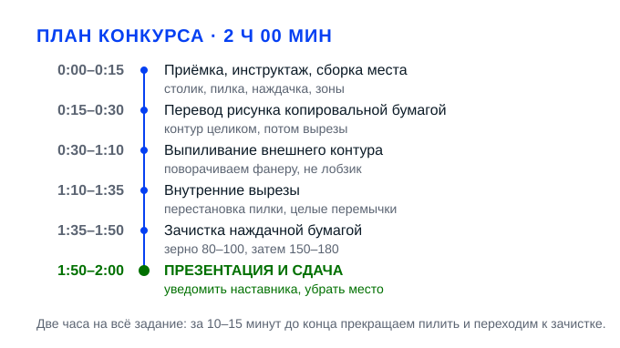
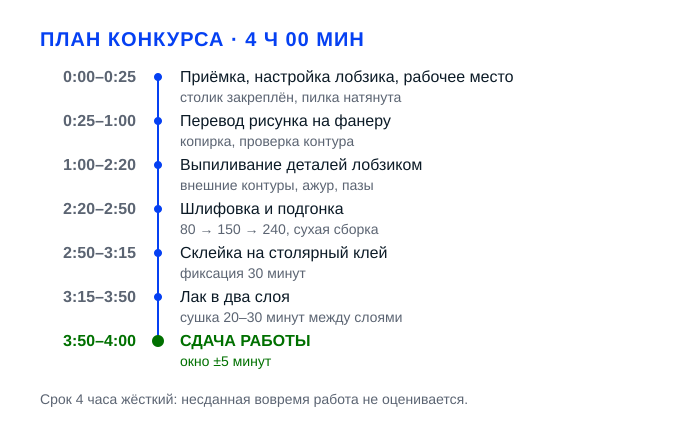
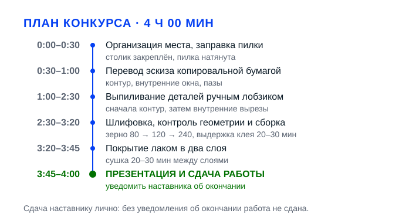

Выпиливание изделий из фанеры (ФВ)
Задания ниже — официальные файлы «Абилимпикс» (источник: abilympics-russia.ru), разложенные по категориям. Решения написаны по тексту задания, регламенту и критериям оценки; в них указано, что именно проверяет эксперт.
Школьник
14–16 лет, базовый уровень заданияВ официальном файле категории не разделены отдельными разделами — приводим задание целиком; различия по категориям смотрите в таблице модулей.
Пошаговое решение
Школьникам достаётся одно изделие и два часа на всё: подставка под кружку из фанеры 3 мм. В задании нет модулей с отдельными таймингами — есть последовательность из пяти операций: перевести рисунок копировальной бумагой, выпилить деталь ручным лобзиком, зачистить наждачной бумагой, презентовать наставнику, привести место в порядок. Из инструмента — выпиловочный столик, ручной лобзик и пять пилочек, поэтому борьба идёт не за скорость, а за три вещи: точность перенесённой линии, вертикальность реза и целые перемычки во внутренних вырезах. Решение построено в том же порядке, что и задание, и в тех же временных окнах. Держите в голове два правила с первой минуты: поворачивают фанеру, а не лобзик, и каждая минута, потраченная на разметку, возвращается на выпиливании.

Задача 1. Принять задание, материалы и собрать рабочее местоЕдиное задание · 2 часа · приёмка и сборка места
У школьников всё задание — два часа и одна деталь: подставка под кружку из фанеры 3 мм. Первые пятнадцать минут не дают видимого результата, но именно они определяют, будет ли контур ровным: от крепления выпиловочного столика, натяжения пилки и выбранной стороны листа зависит каждый последующий рез. Здесь же снимаются риски, о которых говорит раздел 5 задания: облом пилки, порез руки, погнутая рамка лобзика.
Действие 1.1. Пройти инструктаж и осмотреть место
Шаг 1.1.1
Садимся на своё место, убираем телефон и слушаем вводный инструктаж до конца: где аптечка, где огнетушитель, кому и как поднимать руку, как выключается свет над рабочим местом. После инструктажа ставим подпись в журнале — по разделу 5 к работе с лобзиком допускаются только те, кто его прошёл. Сразу задаём наставнику два вопроса, которые сэкономят вам полчаса: где лежат запасные пилочки и можно ли получить второй лист наждачной бумаги другого зерна.
Раздел 5 прямо говорит: работать разрешается только исправным лобзиком с надёжно закреплённой пилкой, а основная опасность — ранение рук при поломке пилки. Значит, инструктаж здесь не формальность: вы будете держать левую кисть в десяти сантиметрах от линии реза два часа подряд, и знать, куда идти с порезом, нужно заранее. Подпись в журнале — ещё и формальный допуск: без неё участника к заданию не допускают, и два часа просто не начнутся.
Подпись в журнале стоит, аптечку вы видели, руку договорились поднимать, а не звать через площадку. Проверьте, что наставник услышал оба вопроса и ответил на них: если ответа нет, переспросите другими словами сейчас, а не в середине выпиливания.
Кивнуть и не слушать — самая дорогая экономия в конкурсе. Потом оказывается, что участник не знает, где запасные пилочки, ломает единственную натянутую и тратит двадцать минут на поиск помощи вместо работы.
Эксперт сверяет журнал инструктажа до старта. В первые минуты он смотрит, как участник обходится с инструментом: берёт лобзик за ручку, а не за рамку, держит шило остриём от себя.
Шаг 1.1.2
Подбираем посадку: садимся прямо, полубоком к выпиловочному столику — так требуют правила раздела 5, и это не формальность, а рабочая поза на два часа. Стул ставим так, чтобы предплечье правой руки лежало на ручке лобзика без наклона корпуса, а левая кисть свободно доставала до центра столика. Свет проверяем сразу: тень от собственной головы не должна ложиться на линию разметки, потому что карандашная линия на фанере тонкая и в тени пропадает.
За два часа вы сделаете несколько тысяч ходов пилкой, и каждая ошибка позы умножается на это число: ссутуленная спина к середине задания даёт дрожь в кисти, а дрожь — это увод пилки с линии. По разделу 4 для рабочих мест предусмотрено равномерное освещение не менее 300 люкс; если вам кажется, что света мало, скажите об этом до старта — лампу добавят, после старта время на это никто не выделит.
Сядьте и положите руки: корпус не наклонён, локти не висят, до центра столика дотягиваетесь не вставая. Посмотрите на фанеру: линия видна чётко, без тени от руки и без блика от лампы прямо на рабочей точке.
Сесть на край стула и наклониться к работе «поближе»: спина устаёт за сорок минут, и пилка начинает гулять влево-вправо. Вторая ошибка — работать стоя: при выпиливании на весу пилку ведёт в сторону, и контур получается волной.
Эксперт смотрит на посадку в первые минуты и ещё раз в середине работы. Его интересуют прямая спина, опущенные плечи и то, не наклоняется ли участник лицом к заготовке: раздел 5 запрещает наклоняться низко над работой.
Шаг 1.1.3
Осматриваем стол: убираем всё, что не относится к заданию — сумки, бумаги, лишний инструмент. Проверяем, что поверхность сухая и ровная, а стружка и пыль от предыдущих участников сметены. Ставим справа лобзик, слева кладём фанеру, копировальную бумагу, эскиз и карандаш, а наждачную бумагу пока убираем на край стола: она понадобится только после выпиливания, но должна быть на виду.
Порядок на столе экономит минуты: за два часа вы десятки раз переложите фанеру, и каждый поиск карандаша в куче — это секунды, которые складываются в минуты. Кроме того, свободная зона нужна для выпиленных фрагментов: у подставки тонкие перемычки, и любая вещь, брошенная сверху, ломает их раньше, чем вы дойдёте до шлифовки.
На столе лежат только предметы вашего задания и больше ничего. Свободное место справа от столика — не меньше ладони, чтобы класть выпиленные фрагменты, а не держать их на весу. И проверьте, что фанера лежит не на краю стола: свешенный лист ломается при первом же нажиме.
Оставить на столе телефон и стакан с водой: первое отвлекает, второе опрокидывается локтем, а мокрая фанера 3 мм ведёт себя совсем иначе — разбухает по кромке и коробится. И ещё одно: крошки и обёртки под фанерой дают перекос, а лишние предметы на столе мешают поворачивать заготовку.
Эксперт обходит места до старта и отмечает, есть ли на столе посторонние предметы и свободная зона под готовые детали. Отдельно фиксируется, убран ли инструмент от края стола.
Действие 1.2. Проверить материалы и инструмент
Шаг 1.2.1
Раскладываем выданное и сверяем с перечнем раздела 3.1: фанера 3 мм, копировальная бумага, выпиловочный столик, ручной лобзик, пять пилочек, наждачная бумага, карандаш, эскиз. Считаем пилочки именно поштучно — пять штук это ваш запас на обломы, и от того, сколько их реально лежит перед вами, зависит, насколько смело вы будете работать на поворотах. Если чего-то нет или позиция повреждена, поднимаем руку и говорим об этом сразу.
Приёмка — единственный момент, когда недостачу ещё можно закрыть без потери времени: после старта замена идёт через наставника, и минуты уходят из ваших двух часов. Пять пилочек в перечне стоят не для красоты — на фанере 3 мм новичок ломает одну-две за задание, и остаться с единственной пилкой означает работать осторожно там, где нужно работать ровно.
Все восемь позиций на столе, пилочек ровно пять, на наждачной бумаге видно зерно, эскиз читается целиком, без обрезанных краёв. Сверяйте по списку, а не по памяти: память на приёмке подводит чаще всего.
Не пересчитать пилочки и обнаружить нехватку после первого облома. Ещё одна ошибка — взять повреждённый эскиз с потёртой линией: переводить придётся по догадке, и контур изделия выйдет несимметричным. Не спросить про второй лист наждачной бумаги заранее — и шлифовать одной, забитой пылью.
Эксперт фиксирует обращения за заменой и время, когда они прозвучали. Точная формулировка — «не хватает одной пилочки и обрезан край эскиза» — ценится выше, чем «у меня тут не всё».
Шаг 1.2.2
Берём фанеру и осматриваем её с двух сторон: выбираем лицевую — ту, где меньше сучков, тёмных пятен и следов клея. Проверяем кромки на расслоение: если с торца видно, что слои отходят, этот участок оставляем за пределами контура или откладываем лист целиком. Влажную или холодную фанеру откладываем в сторону — она должна полежать при комнатной температуре, пока вы размечаете.
Фанера 3 мм — три тонких слоя, и сучок на линии реза почти всегда означает скол: пилка вырывает кусок шпона, и на кромке остаётся вмятина, которую шлифовкой уже не убрать. Выбрать лицевую сторону заранее важно и потому, что копирку вы положите именно на неё, а исправлять потом придётся вместе с рисунком.
Лицевая сторона отмечена карандашом с изнанки крестиком. По краю листа нет отходящих слоёв, поверхность сухая и не холодная на ощупь, крупных сучков в зоне будущего контура нет. Если лист вызывает сомнение целиком, скажите об этом до разметки: после первой линии замену не дадут.
Размечать на стороне с сучком: при выпиливании сучок выкрашивается, и на кромке появляется вырыв размером с ноготь. Вторая ошибка — начать работу на влажной фанере: после высыхания изделие поведёт винтом, и подставка перестанет стоять ровно.
Эксперт смотрит, осматривал ли участник материал вообще: перевернул ли лист, проверил ли кромки. Работа на явном дефекте, который был виден сразу, читается как невнимательность.
Шаг 1.2.3
Проверяем лобзик по пунктам раздела 5: ручка целая, без трещин и выколов, рамка не погнута, зажимные винты на месте и ходят с усилием, а не от руки. Берём пилочку и примеряем: она должна входить в зажим до упора и зажиматься так, чтобы её нельзя было выдернуть пальцами. Шило проверяем отдельно — ручка насажена плотно, остриё не погнуто. Положите рамку на ровный стол: погнутая качается, и пилка в ней встанет с наклоном.
Требование работать только исправным лобзиком, обеспечивающим надёжное закрепление пилки, — первое в разделе 5, и оно про безопасность: плохо зажатая пилка при ходе вниз выходит из зажима и летит в сторону руки. Трещина в ручке рвётся в самый неподходящий момент, когда вы давите сильнее обычного на повороте.
Рамка ровная, винты затягиваются, пилка держится в зажиме и не выдёргивается. Ручка на ощупь целая по всей длине, шило сидит в ручке плотно, без люфта. Проверьте зажим на реальной пилочке: вставьте её до упора, затяните и потяните на себя — она не должна выходить из паза даже на миллиметр.
Взять лобзик «как есть» и обнаружить погнутую рамку уже в работе: пилка стоит с перекосом, рез уводит в сторону, и исправить это на ходу нельзя. Другая ошибка — работать шилом с треснувшей ручкой: при проколе она проворачивается и остриё уходит в ладонь.
Эксперт проверяет инструмент вместе с участником на приёмке. Отдельно он смотрит, умеет ли участник проверить натяжение пилки, а не просто «поставил и поехал».
Действие 1.3. Собрать и настроить рабочее место
Шаг 1.3.1
Ставим выпиловочный столик на верстак и крепим его струбциной или штатным зажимом так, чтобы он не сдвигался от бокового усилия: возьмите столик рукой и попробуйте провернуть — он должен стоять как влитой. Прорезь столика располагаем над краем верстака, чтобы рамке лобзика было куда ходить вниз. Поверхность протираем: она должна быть ровной и гладкой, без заусенцев и старой стружки.
Правила раздела 5 требуют надёжно крепить столик к верстаку, и это прямая связь с качеством реза: столик, который ездит под фанерой, тянет заготовку за собой, и линия уходит на два-три миллиметра. Кроме того, столик на весу — это риск, что конструкция сложится вместе с работающей пилкой.
Столик не двигается от толчка рукой, прорезь свободна и над ней ничего не нависает, поверхность гладкая на ощупь. Рамка лобзика ходит вниз и вверх, не задевая верстак и струбцину. Поднимите и опустите рамку рукой на два-три сантиметра — она должна ходить свободно, без стука о верстак.
Прикрутить столик «на один виток» — он провернётся на первом же повороте фанеры, и выпиленный контур получит ступеньку. Вторая ошибка — оставить стружку на поверхности: фанера ложится неровно, и пропил уходит не перпендикулярно.
Эксперт проверяет крепление столика до старта и отмечает, покачал ли участник столик рукой. Это один из пунктов охраны труда, и его видно за две секунды.
Шаг 1.3.2
Заправляем пилку: сначала зажимаем нижний конец в зажиме лобзика, потом слегка сжимаем рамку, ставим верхний конец и отпускаем — за счёт упругости рамки пилка натягивается. Проверяем направление зубьев: они должны смотреть вниз, к ручке, иначе пилка будет не резать, а тереть. Натяжение проверяем щипком — натянутая пилка звенит и почти не прогибается под пальцем.
Ненатянутая пилка уводит рез: она гнётся в сторону, и вместо вертикальной кромки получается скошенная, а на поворотах её зажимает в пропиле. Перевёрнутая пилка — вторая классическая ошибка: работа идёт, но втрое медленнее, и на фанере 3 мм вы теряете на этом десять-пятнадцать минут из двух часов.
Пилка стоит вертикально, зубья вниз, при щипке звенит, прогиб не больше миллиметра. Проведите пальцем вдоль зубьев вверх и вниз: в одну сторону они должны цеплять, в другую — гладить. Если пилка провисает под пальцем больше миллиметра, подтяните верхний зажим ещё на пол-оборота.
Поставить пилку зубьями вверх и не заметить этого: рез идёт рывками, кромка получается рваной, а участник давит сильнее и ломает полотно. Ещё одна ошибка — перетянуть рамку так, что пилка лопается при первом же наклоне.
Эксперт смотрит на установку пилки: направление зубьев и натяжение — два признака, по которым сразу видно уровень подготовки участника. Он также отмечает, не держит ли участник лобзик за рамку вместо ручки.
Шаг 1.3.3
Раскладываем зоны так, чтобы всё нужное было под рукой: слева фанера с эскизом и копиркой, по центру столик, справа лобзик, сзади лоток для стружки и обрезков. Наждачную бумагу кладём отдельно, под рукой, но не в рабочей зоне — она понадобится после выпиливания. Пилочки держим в одном месте, все пять, чтобы в момент облома не искать их по столу. Проверьте, что лоток стоит устойчиво и не опрокинется от локтя.
Вы будете менять положение фанеры десятки раз за час, и порядок в зонах — это не про аккуратность, а про темп. Обрезки, брошенные на столе, цепляются за рукав и сбивают линию; пилочка, упавшая на пол, стоит вам минуты поиска и наклонов рядом с работающим инструментом.
До каждой зоны рука дотягивается не вставая. Обрезки складываются в лоток сразу, а не «потом соберу». Все пять пилочек лежат на виду в одном месте. Заодно проверьте, что до лотка можно дотянуться, не отрывая взгляда от линии реза: обрезки должны уходить в него движением кисти.
Сваливать обрезки под локоть: они подпрыгивают от вибрации и попадают под фанеру, из-за чего та ложится на столик с перекосом. Вторая ошибка — держать запасные пилочки в кармане: они там гнутся и приходят в негодность.
Эксперт в первой трети задания проходит и смотрит, есть ли лоток под обрезки и не приходится ли участнику искать инструмент. Порядок на месте он отмечает отдельно от качества изделия.
Задача 2. Перевести рисунок на фанеру копировальной бумагойОперации 1–2 КЗ · ориентировочно 0:15–0:30
Разметка — единственный этап, где ошибка стоит бесплатно: сдвинуть эскиз до обводки можно за секунду, после — только переводить заново, а лишнего времени в двух часах нет. Копировальная бумага даёт линию, по которой пилка пойдёт с точностью до миллиметра, поэтому пакет «фанера — копирка — эскиз» собирают и фиксируют до первого движения карандашом. Здесь же проверяется раскладка: припуск 10–15 мм от кромки листа и обход сучков, чтобы тонкая полоска не отломилась вместе с частью контура.
Действие 2.1. Собрать пакет «фанера — копирка — эскиз»
Шаг 2.1.1
Кладём фанеру лицевой стороной вверх — той, которую выбрали при осмотре. Сверху укладываем копировальную бумагу красящей стороной вниз, к фанере: проверьте это на уголке, проведя ногтем, — тёмный след должен остаться на фанере, а не на пальце. Разглаживаем лист от центра к краям, чтобы под ним не осталось складок и воздушных пузырей. Углы листа придерживаем пальцами, чтобы копирка не поехала вместе с эскизом.
Копирка, положенная красящей стороной вверх, не даст ничего: вы обведёте эскиз и получите чистую фанеру, потеряв десять минут и единственный лист эскиза. Складка под копиркой — это сдвиг рисунка на этом участке: линия оборвётся или удвоится, и на выпиливании вы уйдёте в сторону именно там.
Проведите ногтем по уголку: след остался на фанере. Под копиркой нет складок, она лежит ровно, края не загибаются вверх и не выглядывают из-под эскиза больше чем на пару миллиметров. Если след остался на пальце, а не на фанере, копирку переворачиваем и начинаем сначала.
Положить копирку красящей стороной вверх и обводить эскиз впустую. Ещё одна ошибка — работать на мятой копирке: она даёт бледный след, и линия местами исчезает уже к середине выпиливания. Старая, засаленная копирка мажет фанеру пятнами: проверьте её на уголке до укладки, а не после обводки.
Эксперт смотрит на положение копирки в момент укладки. Мелочь, но по ней видно, делал ли участник это раньше: опытный сразу проверяет красящую сторону ногтем.
Шаг 2.1.2
Укладываем эскиз на копирку и двигаем его, пока до кромки листа не останется 10–15 мм со всех сторон будущего контура. Смотрим на направление волокон наружного слоя: длинные прямые участки контура выгоднее расположить вдоль волокон, тогда кромка получается чище. Сучки и тёмные пятна обходим — сдвигаем эскиз, пока дефект не окажется вне контура. Проверьте, что эскиз не свисает с листа: свешенный край сдвинется при обводке.
Припуск 10–15 мм нужен не для красоты: левой руке и краю столика нужно место, чтобы держать заготовку, а тонкая полоска по краю ломается от первого же бокового усилия. Расположение вдоль волокон даёт ровную кромку без вырывов, поперёк — сколы именно на выходе пилки, и они приходятся на лицевую сторону.
От контура до кромки листа везде не меньше десяти миллиметров. В зоне контура нет сучков, трещин и пятен клея. Эскиз лежит без перекоса: если в рисунке заданы прямые стороны, они параллельны кромкам листа.
Прижать эскиз к самому краю листа: остаётся полоска в пять миллиметров, она отламывается при выпиливании, и вместе с ней уходит часть контура. Вторая ошибка — не заметить сучок и выпилить прямо через него.
Эксперт оценивает раскладку: экономно ли использован лист и обойдены ли дефекты. Раскрой без запаса по краю он отмечает как ошибку планирования, а не как невезение.
Шаг 2.1.3
Фиксируем пакет, чтобы он не сдвинулся: приклеиваем эскиз к фанере малярным скотчем в двух-трёх точках по краю или прижимаем струбцинками за пределами контура. Проверяем на сдвиг — придержите эскиз пальцем и попробуйте провернуть фанеру: ничего не должно ехать. Скотч клеим только на свободное поле, не на линию рисунка. Удобно клеить два куска скотча по диагонали: так пакет держится от проворота в обе стороны.
Сдвиг пакета на два миллиметра в середине обводки — самая обидная ошибка: вы этого не увидите, потому что линия останется целой, но контур получится с уступом. На выпиливании такой уступ читается как грубая работа, а исправить его можно только новой разметкой — и времени на неё уже нет.
Потяните эскиз в сторону: он держится. Копирка не выглядывает из-под эскиза больше чем на пару миллиметров, скотч не перекрывает линию контура. Возьмите фанеру за угол и поверните на столе: эскиз и копирка должны повернуться вместе с ней, без задержки.
Обводить, придерживая эскиз левой рукой: рука сдвигает лист на каждом повороте карандаша. Другая ошибка — приклеить скотч прямо через линию: при снятии он уносит кусок рисунка вместе с верхним слоем бумаги.
Эксперт проверяет, зафиксирован ли пакет, до начала обводки. Это тот пункт, где ошибка ещё бесплатна: сдвинуть эскиз до обводки — секунда, после — минус разметка.
Действие 2.2. Обвести контур
Шаг 2.2.1
Обводим контур карандашом средней твёрдости — ТМ или Т, грифель отточен, но не иглой, иначе он рвёт эскиз. Наклоняем карандаш примерно под шестьдесят градусов и ведём линию одним уверенным проходом, без остановок на каждом сантиметре. Давим умеренно: след должен быть тёмным, но фанера под копиркой не должна получать вмятин. Грифель держим подточенным: тупой карандаш даёт широкую линию, и пилить придётся по её середине.
Слишком мягкий карандаш даёт жирную линию, которая пачкает фанеру и расплывается под пальцами, а слишком твёрдый продавливает верхний шпон и оставляет канавку, по которой пилка потом уходит в сторону. Один проход вместо нескольких важен потому, что при повторной обводке линия дублируется со сдвигом в полмиллиметра, и пилить приходится по двойному контуру.
Линия тёмная, ровная, одной толщины, без разрывов. На обратной стороне фанеры нет вмятин от грифеля. Проведите по линии пальцем — графит не мажется. Проверьте линию на самом длинном прямом участке: она должна быть одинаковой толщины от начала до конца, без утолщений на поворотах.
Обводить слабо нажимая: линия получается бледной, и к моменту выпиливания вы её не видите, начиная вести пилку по памяти. Вторая ошибка — вести линию по три раза, добиваясь яркости: контур расползается в полосу шириной в миллиметр.
Эксперт смотрит на качество перенесённой линии: непрерывность, отсутствие двойного контура и смаза. По линии видно, насколько уверенно участник владеет разметкой.
Шаг 2.2.2
Обводим в определённом порядке: сначала внешний контур изделия целиком, потом внутренние вырезы, и в конце ставим центры и оси — точку центра отверстия под кружку, если оно есть по эскизу, и метки симметрии. Внутренние вырезы проходим от самого крупного к мелким. Так вы не перепутаете, что уже переведено, а что ещё нет. Каждый элемент обводим до конца, прежде чем перейти к следующему: так линия не рвётся на полпути.
Порядок «снаружи внутрь» экономит внимание: внешний контур задаёт габарит, и после него внутренние элементы легко проверить на симметрию относительно осей. Если начать с мелочей, к внешнему контуру вы подойдёте уставшим, и именно на нём появятся разрывы — а это самая заметная часть изделия.
Внешний контур замкнут, внутренние вырезы обведены все до одного, центры отмечены крестиком или точкой с наколом шила. Сверьте количество вырезов с эскизом, пересчитав их поштучно. Пересчитайте вырезы вслух, ведя пальцем по эскизу: так пропуск виден сразу, а не на выпиливании.
Забыть обвести один внутренний вырез: обнаружится это только на этапе контроля, когда внешний контур уже выпилен, и вернуться к разметке будет негде. Ещё одна ошибка — обводить внутренние вырезы раньше внешнего и потерять ориентацию рисунка.
Эксперт проверяет полноту переноса: все ли элементы эскиза есть на фанере. Пропущенный вырез для него — не мелочь, а невыполненный элемент задания. Он также сверяет положение осей: смещённые оси видны на готовом изделии как перекос.
Шаг 2.2.3
Проходим по всей линии взглядом, участок за участком, и проверяем: нет ли разрывов, двойных линий, смазанных пятен. Слабые места — там, где копирка прилегала неплотно или рука дрогнула — проходим повторно, но строго по тому же следу, а не рядом. Отмечаем на эскизе карандашом те элементы, где линия получилась неуверенно. Хороший признак — когда после обводки ничего не приходится додумывать: весь контур читается однозначно.
Разрыв линии в три-четыре миллиметра на выпиливании превращается в прямой участок «по памяти», и он почти всегда идёт не туда, куда шёл контур. Повторная обводка по тому же следу усиливает линию без сдвига, тогда как обводка рядом создаёт второй контур и выбор, по какому из них пилить.
Пройдите линию пальцем: она непрерывна на всём протяжении. Двойных линий нет, смаза нет, все внутренние вырезы на месте. Сомнительный участок посмотрите под лампой сбоку — при косом свете разрывы видны отчётливо.
Увидеть бледный участок и решить «и так сойдёт»: именно на нём пилка уйдёт в сторону, потому что вести её будет не по чему. Вторая ошибка — обводить бледный участок, сдвинув эскиз: появляется второй контур, и изделие получает ступеньку.
Эксперт смотрит на разметку перед выпиливанием: читается ли рисунок целиком и нет ли мест, где участник будет импровизировать. Ещё он смотрит, не осталось ли на фанере двойного контура: по нему сразу видно, что эскиз ездил.
Действие 2.3. Проверить перенос и снять пакет
Шаг 2.3.1
Аккуратно снимаем скотч, отводим эскиз и убираем копирку, придерживая фанеру, чтобы не смазать свежую линию. Кладём фанеру под лампу и читаем рисунок целиком, как чертёж: внешний контур, все внутренние вырезы, оси. Сразу стираем случайные следы копирки за пределами контура мягким ластиком, пока графит свежий. Снимать пакет лучше от дальнего края к себе, придерживая фанеру ладонью сверху.
Смазанная линия — потерянная линия: графит копирки размазывается ладонью за первые же минуты работы, и вместо контура остаётся серое пятно. Стирать посторонние следы нужно сейчас, потому что после выпиливания любое лишнее пятно останется на готовом изделии — а подставку под кружку смотрят именно с лицевой стороны.
Линия читается без напряжения, посторонних пятен нет, край листа чистый. Сверьте изделие с эскизом, приложив их рядом: контур, вырезы и оси должны совпадать один к одному. Сравните толщину линии на всех участках: если где-то она бледнее, значит копирка прилегала неплотно.
Снять копирку, проведя по ней рукой: линия смазывается именно там, где рука прошла последней — обычно по центру изделия. Ещё одна ошибка — оставить жирные пятна копирки по краям и потом шлифовать их вместе с фанерой, въедаясь в шпон.
Эксперт оценивает читаемость разметки перед выпиливанием: видно ли, где именно должна пройти пилка. Разметка «на глазок» видна сразу — по тому, как участник ведёт первый рез.
Шаг 2.3.2
Сверяем перенесённый рисунок с эскизом по трём вещам: габарит (самая длинная и самая короткая линии), симметрия (расстояния от осей до противоположных краёв) и количество внутренних вырезов. Проверяем посадку кружки: если на эскизе есть выемка или отверстие под дно, отмечаем её центр и убеждаемся, что он совпадает с центром изделия. Спорные места промеряем линейкой, а не на глаз.
На глаз симметрию не поймать: разница в два миллиметра между левой и правой стороной на изделии видна отчётливо, а на разметке — нет. Подставка проверяется именно посадкой: если центр выемки сдвинут, кружка встанет с перекосом, и изделие потеряет смысл при всей аккуратности выпиливания.
Габарит совпадает с эскизом в пределах миллиметра, расстояния от осей до краёв равны, число вырезов сходится. Центр отверстия под кружку совпадает с пересечением осей. Проверьте, что контур целиком укладывается в лист с припуском: выход за кромку означает, что выпиливать нечего.
Пропустить проверку симметрии и выпилить изделие с перекосом в три миллиметра: заметно это будет только на готовой подставке, когда кружка встанет косо. Вторая ошибка — проверять «на глаз» по диагонали, не промерив линейкой.
Эксперт прикладывает эскиз к заготовке и смотрит на совпадение габарита. Это первый момент, когда он может сравнить замысел с разметкой, и расхождения он отмечает сразу.
Задача 3. Выпилить изделие ручным лобзикомОперация 3 КЗ · ориентировочно 0:30–1:35
Основная часть работы — час с небольшим непрерывного пиления. Здесь всё решают три навыка: держать лобзик вертикально, поворачивать фанеру, а не инструмент, и вовремя менять затупившуюся пилку. Пять пилочек из перечня — ваш запас на обломы, и распорядиться им нужно осознанно, а не потратить последнюю на середине внутреннего выреза. Пилка тонкая, фанера 3 мм мягкая: боковая нагрузка ломает полотно быстрее, чем сама работа.
Действие 3.1. Войти в материал и пройти внешний контур
Шаг 3.1.1
Находим точку входа. Если контур выходит на кромку листа, начинаем прямо от кромки, поставив заготовку так, чтобы пилка шла внутрь контура. Если контур замкнутый и до кромки далеко, прокалываем шилом отверстие диаметром 2–3 мм рядом с линией, но не на ней, и заправляем пилку в это отверстие: отцепляем верхний конец, продеваем, закрепляем обратно и натягиваем.
Пилка не умеет начинать рез с середины листа: без входного отверстия остаётся только закусить фанеру и рвать её, а это сколы и потеря контура. Отверстие рядом с линией, а не на ней, даёт запас: первый рез идёт по касательной, и вы входите в контур плавно, без ступеньки.
Пилка свободно ходит в отверстии, не задевая стенок, натяжение восстановлено. Точка входа не попадает на линию контура и не оказывается на лицевой стороне в видном месте. Отверстие должно быть видно с изнанки и не просвечивать на лицевой стороне в зоне контура.
Прокалывать отверстие прямо на линии: пилка входит с уступом, и на кромке остаётся заметная ступенька, которую шлифовкой не убрать. Другая ошибка — сверлить отверстие 5–6 мм, чтобы легче влезло: дырка остаётся на изделии и портит вид.
Эксперт смотрит на точку входа: где она относительно контура и как участник заправляет пилку. Вход с лицевой стороны в видном месте он считает грубой ошибкой композиции.
Шаг 3.1.2
Включаемся в работу мягко: первые двадцать-тридцать ходов делаем короткими, без нажима, пока пилка не войдёт в материал на всю толщину. Держим лобзик строго вертикально — рамка под столиком, пилка торчит вверх через прорезь — и следим, чтобы пилка не отклонялась ни вперёд, ни назад. Давим только вниз, на ходе вниз, и не тянем лобзик на себя. Плечи держим опущенными: поднятые плечи через полчаса дают дрожь в кисти.
Первые ходы задают направление всему резу: если пилка вошла с наклоном, она будет уводить в сторону на всём участке, потому что пропила ещё нет и держать её нечему. Боковое давление — главная причина облома: на фанере 3 мм пилка тонкая, и поперечная нагрузка для неё критична.
Пилка входит вертикально, стружка идёт мелкая и светлая, ход ровный, без рывков. Кромка пропила с обеих сторон вертикальная, а не скошенная. Посмотрите на пропил с торца заготовки: он должен быть вертикальным на всю толщину, а не клином.
Начать с сильного нажима: пилка согнётся, рез уйдёт вбок, и косая кромка появится с первой же минуты. Вторая ошибка — тянуть лобзик на себя на ходе вверх: зубья не режут, а трутся, фанера греется и подгорает.
Эксперт слушает и смотрит первые минуты: ровный ли темп, вертикально ли стоит лобзик, не наклоняется ли участник к работе. По первым ходам он уже видит, будет ли контур ровным.
Шаг 3.1.3
Дальше ведём по контуру, поворачивая фанеру, а не лобзик. Левой рукой прижимаем заготовку к столику и плавно доворачиваем её на поворотах, правая только ходит вверх-вниз. Смотрим на линию, а не на пилку: глаз должен держать линию впереди реза на два-три сантиметра. Пилку ведём так, чтобы она шла по внешней стороне линии, оставляя разметку на изделии.
Поворот лобзика вместо фанеры — самая частая причина косого реза: рамка отклоняется, пилка гнётся, и на повороте получается ступенька. Ведение по внешней стороне линии даёт припуск на шлифовку: линию вы потом снимете наждаком, и контур останется точным, а не съеденным на миллиметр вглубь.
Линия разметки остаётся целой на изделии, кромка идёт ровно, без волны. На поворотах нет ступенек и подрезов. Пальцы левой руки всегда сбоку от линии реза, не напротив пилки. Проверьте кромку ногтем: заусенец на внешней стороне означает, что пилка шла не по той стороне линии.
Крутить лобзик в руках: пилка гнётся, рез уводит, а на радиусах она ломается. Ещё одна ошибка — смотреть на пилку, а не вперёд по линии: к моменту, когда вы замечаете отклонение, оно уже пять миллиметров.
Эксперт в течение всей работы смотрит на положение рук: где левая кисть относительно линии реза, не поворачивает ли участник лобзик. Это одновременно и качество, и охрана труда.
Шаг 3.1.4
На углах и радиусах не гоним: дойдя до поворота, почти останавливаем подачу, доворачиваем фанеру на месте и только потом продолжаем ход. На острых внутренних углах делаем два реза с двух сторон, а вершину угла дорезаем отдельно короткими ходами, не пытаясь пройти её одним движением. Если радиус меньше пяти миллиметров, замедляемся почти до остановки.
Пилка — тонкая стальная полоска, и на малом радиусе она не может повернуть мгновенно: если продолжать давить, она либо уводит рез по хорде, либо ломается. Два реза на остром угле дают чистую вершину без скола, а разметка в этом месте остаётся целой. Плюс на малом радиусе облом пилки почти гарантирован, а это ещё и травма.
Радиусы получились ровными, без граней и ступенек; вершины острых углов целые, без вырывов. Пройдите по кромке пальцем — она не должна цеплять. Внутренние углы посмотрите на просвет: там чаще всего остаётся тонкая перемычка фанеры, которую надо аккуратно снять.
Проскакивать поворот на скорости: пилка идёт по хорде, и вместо радиуса получается срезанный угол. Вторая ошибка — дорезать острый угол одним движением: вершина выкрашивается, и в изделии остаётся выломанный уголок.
Эксперт осматривает именно радиусы и углы: это места, где видно, владеет ли участник инструментом. Срезанный радиус он отмечает отдельно от общей чистоты реза.
Действие 3.2. Выпилить внутренние вырезы
Шаг 3.2.1
Для каждого внутреннего выреза сначала прокалываем отверстие шилом или тонким сверлом 2–3 мм — внутри контура, отступив от линии полтора-два миллиметра. Потом отцепляем верхний конец пилки, продеваем его сквозь отверстие снизу вверх, закрепляем в зажиме и натягиваем. Заготовку при этом держим на столике, а не на весу. Отверстие прокалываем до того, как снимем пилку, — иначе руки заняты и проколоть нечем.
Внутренний вырез невозможно выпилить, не разорвав пилку: чтобы попасть внутрь замкнутого контура, пилку нужно продеть. Отступ полтора-два миллиметра от линии нужен, чтобы отверстие осталось за пределами контура и не превратилось в лишнюю дырку в готовом изделии.
Пилка свободно ходит в отверстии, натяжение восстановлено, отверстие не выходит за линию контура. Проверьте на просвет: точка входа видна, но в вырез не попадает. Проверьте, что пилка не трёт стенки отверстия на ходе вверх: если трёт, отверстие мало и его надо расширить.
Просверлить отверстие на линии или внутри контура: в готовом изделии остаётся лишняя дырка, и вырез получается с зазубриной. Ещё одна ошибка — продевать пилку, не сняв натяжение: полотно рвётся у зажима.
Эксперт смотрит на точки входа внутренних вырезов: аккуратные, вне контура — признак опыта. Отверстия на лицевой стороне в видных местах он отмечает как дефект.
Шаг 3.2.2
Выпиливаем внутренние вырезы от крупного к мелкому и внутри каждого идём по часовой стрелке, если контур замкнутый: так правая рука работает в удобную сторону. Перемычки — узкие полоски фанеры, которые остаются стоять между вырезами, — не трогаем: подходим к ним с двух сторон с запасом в миллиметр. Мелкие вырезы делаем на минимальной подаче, почти без нажима.
Порядок от крупного к мелкому защищает от поломки: пока в заготовке есть массив фанеры, она держит форму, а когда остаются одни перемычки, любое неосторожное движение их отламывает. Миллиметр запаса у перемычки — страховка: лишнее снимется наждачкой, а отломленную перемычку восстановить нельзя.
Все вырезы пройдены, перемычки целые, ширина их одинаковая. Заготовка не потеряла плоскостность: положите её на стол — она не должна играть. Посмотрите на вырезы с лица: они должны читаться как рисунок, без завалов и уступов по краям.
Начать с мелких вырезов: после них в заготовке появляется много тонких перемычек, и выпиливать крупный вырез становится опасно — фанера гнётся и ломается по ним. Вторая ошибка — подойти к перемычке вплотную: она отламывается вместе с куском контура.
Эксперт осматривает перемычки и равномерность вырезов. Это тот элемент, по которому видно, планировал ли участник последовательность или шёл наугад. Его интересует и ширина перемычек: разная ширина читается как небрежность.
Шаг 3.2.3
Между вырезами переставляем пилку по одному и тому же порядку: ослабили верхний зажим, вынули пилку, оставили заготовку на столике, продели в новое отверстие, затянули, проверили натяжение щипком. Не переставляем пилку на весу и не оставляем её болтаться в зажиме: под собственным весом она выгибается и при следующем ходе идёт в сторону. Ключ или винт держим в одном месте, чтобы не искать его на каждом вырезе.
Каждая перестановка — это точка, где теряется натяжение, а вместе с ним и точность следующего реза. Три-четыре перестановки за задание складываются в минуту-полторы, если делать их наугад, и в двадцать секунд, если по порядку. Заготовку на столике оставляют для того, чтобы она не потеряла ориентацию относительно прорези.
После каждой перестановки пилка звенит при щипке и стоит вертикально. Заготовка лежит на столике той же стороной вверх, что и до перестановки, — не перепутайте лицевую и изнаночную. Проверьте рукой, не шатается ли пилка в зажиме: люфт в полмиллиметра уже уводит рез.
Переставлять пилку, положив заготовку на колено или на край стола: тонкая фанера 3 мм ломается по уже выпиленным перемычкам от собственного веса. Другая ошибка — не проверить натяжение после перестановки и получить косой рез на следующем вырезе.
Эксперт считает перестановки и смотрит, насколько аккуратно они сделаны. Хаотичные перестановки с потерей натяжения он связывает с косыми кромками на внутренних вырезах.
Действие 3.3. Держать инструмент в рабочем состоянии
Шаг 3.3.1
Каждые десять-пятнадцать минут проверяем пилку: проведите пальцем по зубьям — они должны быть острыми на ощупь и светлыми. Смотрим на полотно сбоку: если появился изгиб или трещина у зажима, меняем пилку, не дожидаясь облома. Слушаем звук: ровный шелест — норма, визг и рывки — признак затупления или перетянутой рамки. Заодно проверьте, не блестит ли полотно: блеск на зубьях — первый признак, что они стёрлись.
Тупая пилка не режет, а трёт: фанера подгорает, кромка получается рваной, а участник давит сильнее — и ломает полотно. Замена вовремя, до облома, — это не осторожность, а экономия: облом на повороте почти всегда портит контур, а иногда и руку. Полотно, которое тянет в сторону, лучше заменить сразу: выправить его на ходу нельзя.
Зубья светлые и цепляют палец, полотно прямое, без трещин у зажимов. Рез идёт легко, без нажима, стружка мелкая, а не пыль. Проведите ногтем поперёк зубьев: острые цепляют, стёртые скользят. И посмотрите на зону у зажима — трещины начинаются именно там.
Работать до полного облома: пилка лопается на повороте, и обломок уходит в фанеру, оставляя скол прямо на контуре. Вторая ошибка — менять пилку только когда она сломалась, теряя на затупленной десять минут медленного реза.
Эксперт отмечает, менял ли участник пилку осознанно или ждал облома. Пять пилочек в перечне выданы именно для того, чтобы замена была рабочей операцией, а не аварией.
Шаг 3.3.2
Меняем пилку в четыре движения: ослабили верхний винт, сняли полотно, поставили новое зубьями вниз до упора, затянули и проверили натяжение. Сломанную пилку не бросаем на пол и не оставляем на столе — относим в лоток для отходов или отдаём наставнику. Новую пилку первые десять-пятнадцать ходов обкатываем на малой подаче. Винт затягиваем до упора, но без фанатизма: сорванная резьба в зажиме оставит вас без инструмента.
Обломок пилки на столе — это порез руки, о который вы обязательно заденетесь, когда будете придерживать заготовку. Обкатка новой пилки нужна потому, что у неё ещё не сформировалась дорожка в пропиле, и при полной подаче её уводит в сторону. Кроме того, обломок в пропиле царапает кромку изнутри, и след остаётся на изделии.
Пилка стоит ровно, зубья вниз, натяжение проверено щипком. Обломок убран с рабочего места. Первые ходы после замены идут ровно, без увода. Проверьте, что после замены пилка выходит из прорези столика по центру, а не задевает её край.
Оставить обломок на столе «потом уберу»: через пять минут вы прижимаете заготовку ладонью именно туда. Ещё одна ошибка — начать после замены на полной подаче: новая пилка уводит рез, и на контуре появляется ступенька.
Эксперт фиксирует, куда участник девает обломки. Порядок в этом пункте относится к охране труда, и его отмечают отдельно от качества изделия. Он также смотрит, не тратит ли участник на замену больше минуты.
Шаг 3.3.3
Стружку с линии разметки сметаем мягкой кистью или сдуваем в сторону, но не ртом и не рукой по фанере: ладонь смазывает графит. Лобзик при этом останавливаем — на ходу смахивать стружку опасно. Ненужные обрезки сразу убираем в лоток, а нужные фрагменты оставляем на виду. Кисть держим сухой и чистой: пыль от фанеры смешивается с потом и оставляет на шпоне тёмные разводы, которые потом снимаются только шлифовкой.
Стружка на линии — это потерянная линия: фанера 3 мм даёт мелкую пыль, которая забивает карандашный след за пару минут. Смахивание рукой смазывает графит копирки, и вы теряете ориентацию там, где как раз нужна точность. Остановка лобзика перед уборкой — прямое требование безопасности: пилка в движении режет всё, что окажется рядом.
Линия разметки видна на всём протяжении, стружки на фанере нет, лоток наполняется, а не стол. Лобзик перед каждой уборкой выключен. Проверьте, что под фанерой на столике нет набившейся стружки: она поднимает заготовку, и рез уходит не перпендикулярно.
Сдувать стружку ртом: пыль летит в лицо и в глаза, а на линии остаётся влажный след, на котором графит ложится грязным пятном. Вторая ошибка — убирать стружку рукой при работающем лобзике: пилка выходит над столиком на два-три сантиметра и достаёт до пальцев.
Эксперт смотрит на чистоту рабочей зоны в середине задания: видна ли разметка, есть ли лоток под отходы. Захламлённое место он связывает с потерей точности на второй половине работы.
Задача 4. Зачистить изделие наждачной бумагой и проверить геометриюОперация 4 КЗ · ориентировочно 1:35–1:50
Шлифовка превращает выпиленную заготовку в изделие: снимает заусенцы, скругляет кромку на 0,5–1 мм и убирает следы копирки. На фанере 3 мм это самая опасная часть в смысле переусердствовать: одно лишнее движение наждачкой — и лицевой шпон протёрт. Поэтому работа идёт в два зерна, с проверкой на просвет и тыльной стороной ладони, а заканчивается проверкой посадки кружки и плоскостности.
Действие 4.1. Черновая зачистка кромок
Шаг 4.1.1
Берём наждачную бумагу с зерном 80–100 и оборачиваем её вокруг деревянного бруска или оправки — пальцами шлифовать кромку 3 мм нельзя, вы скруглите её неравномерно. Движения вдоль кромки, под углом около сорока пяти градусов, средним нажимом, по десять-пятнадцать проходов на участок. Идём по всему контуру по часовой стрелке, чтобы не пропустить участок.
Крупное зерно снимает заусенцы и следы пилки, но только на оправке: без бруска наждачка прогибается и снимает фанеру волной, а на толщине 3 мм это видно как волнистая кромка. Угол сорок пять градусов снимает заусенец с обеих сторон кромки сразу и не съедает лицевую плоскость.
Кромка ровная на ощупь, заусенцев нет, ворс не цепляется за палец. На просвет кромка не имеет бахромы — тонких волокон, торчащих в стороны. Посмотрите на кромку с торца: она должна быть ровной полосой, без волн и завалов на углах.
Шлифовать пальцем через наждачку: кромка получает волнистый профиль, а на тонкой фанере появляется прогиб. Ещё одна ошибка — давить так, что снимается лицевой шпон: на изделии остаётся светлое пятно, которое ничем не исправить.
Эксперт проверяет кромки пальцем и на просвет. Волокна и заусенцы — первый признак, что шлифовка сделана формально, для вида. И смотрит, не осталось ли на кромке следов пилки — мелкой ряби, которая видна на просвет.
Шаг 4.1.2
Отдельно проходим места выхода пилки: там, где пилка выходила из фанеры, остаются сколы и бахрома из волокон — их снимаем короткими движениями поперёк кромки, не заходя на лицевую плоскость. Переворачиваем изделие и повторяем с изнаночной стороны: заусенец всегда образуется с той стороны, куда пилка выходила. Внутренние вырезы проходим сложенной вдвое полоской наждачки.
Сколы на выходе пилки — самая заметная часть брака: они появляются на той стороне, где пилка выходит из фанеры, а это чаще всего лицевая сторона, если заготовка лежала лицом вниз. Если заусенец снять только с одной стороны, кромка остаётся острой как бритва, и изделие будет резать руку при каждом касании.
Проведите пальцем по кромке с обеих сторон: она не цепляет и не режет. Сколов и торчащих волокон нет ни на внешнем контуре, ни во внутренних вырезах. Особое внимание углам вырезов: там заусенец держится крепче всего и легче всего остаётся незамеченным.
Шлифовать только лицевую сторону: с изнанки остаётся заусенец, и изделие царапает стол, на котором стоит. Вторая ошибка — снимать скол, углубляясь в контур: вместо скола получается выемка, и симметрия уходит.
Эксперт смотрит на кромку с обеих сторон и обязательно проверяет внутренние вырезы: там чаще всего остаются следы пилки. Он также проверяет, не скруглил ли участник перемычки до состояния ниточки.
Шаг 4.1.3
Сметаем пыль мягкой кистью, а плотный налёт у кромок снимаем слегка влажной, хорошо отжатой тряпкой — и сразу вытираем насухо. Смотрим кромку на просвет, повернув изделие к лампе: так видно тонкие волокна, которые на ощупь не чувствуются. Если ворс поднялся после протирки, проходим этот участок мелким зерном ещё раз. Тряпку держим в стороне от инструмента: влага на столике — это ржавчина и скольжение.
Пыль от шлифовки забивает поры, и на следующем этапе вы не увидите, где кромка ещё шершавая. Влажная протирка поднимает ворс — это нормальное свойство фанеры: волокна, срезанные грубым зерном, встают дыбом, и их нужно снять мелкой наждачкой, иначе после высыхания кромка снова станет шершавой.
Кромка на просвет чистая, без торчащих волокон, пыли нет ни на лицевой, ни на изнаночной стороне. После протирки и сушки ворс не поднялся. Проведите по кромке тыльной стороной ладони после сушки: если чувствуется шероховатость, ворс поднялся и нужен ещё один проход мелким зерном.
Протирать изделие мокрой тряпкой: фанера 3 мм набухает по кромке, и после высыхания там появляется шероховатость и лёгкая волна. Другая ошибка — сдувать пыль ртом: она ложится обратно, а на фанере остаются капли.
Эксперт проводит по кромке и смотрит изделие на свет. Пыль и ворс он относит к незавершённой шлифовке, даже если контур выпилен точно. Он также смотрит, ровная ли кромка по толщине: завал с одной стороны виден на просвет.
Действие 4.2. Чистовая шлифовка плоскостей и кромки
Шаг 4.2.1
Переходим на зерно 150–180 и снимаем кромку мягко, без нажима, скругляя её на 0,5–1 мм — этого достаточно, чтобы изделие было приятно держать в руке. Движения те же, вдоль кромки, но короче и легче: задача уже не снять материал, а выровнять профиль. На внутренних вырезах работаем сложенной наждачкой, следя, чтобы не скруглить перемычки. Наждачку меняем, когда она забилась пылью: забитая не режет, а полирует.
Скругление 0,5–1 мм — это то, что отличает изделие из-под лобзика от изделия, которое хочется взять в руки. Больше миллиметра снимать нельзя: на фанере 3 мм кромка становится тонкой и скалывается, а перемычки теряют прочность. Плюс скругление снимает главную опасность тонкой фанеры — острую кромку, которая колется при падении.
Кромка на ощупь ровная, без граней, скругление одинаковое по всему контуру. Толщина кромки не уменьшилась заметно: посмотрите на торец — она должна остаться около трёх миллиметров. Проведите по кромке ногтем: он не должен ни за что цепляться.
Шлифовать до стеклянной кромки: снимается миллиметра полтора, кромка становится острой и хрупкой, и при первом же падении изделие скалывается. Вторая ошибка — скруглить перемычки так, что они превращаются в ниточки.
Эксперт берёт изделие в руки: именно так проверяется качество шлифовки. Острые или волнистые кромки он отмечает, даже если контур идеален. Он отдельно смотрит на углы: там скругление чаще всего получается неравномерным.
Шаг 4.2.2
Лицевую и изнаночную плоскости проходим мелким зерном вдоль волокон, без нажима, только чтобы снять ворс и следы копирки. Не шлифуем поперёк волокон и не трём одно место долго: фанера 3 мм, и лицевой шпон легко протереть до следующего слоя. Углы и края обходим отдельно, короткими движениями. Наждачку держим всей ладонью, а не кончиками пальцев: так давление распределяется ровно, и пятен не остаётся.
Поперечные риски остаются на фанере навсегда: последующей шлифовкой они не убираются, а только углубляются. Следы копирки нужно снять сейчас, потому что после шлифовки они въедаются в шпон и остаются тёмными пятнами на готовом изделии. Вторая причина шлифовать вдоль волокон — ворс: поперёк он поднимается и потом цепляется за руку.
Поверхность на ощупь гладкая, без рисок и пятен копирки, ворс не поднимается. Посмотрите на плоскость под углом к свету: при косом освещении видно, есть ли поперечные царапины. Проведите по плоскости ладонью в обоих направлениях: она должна быть одинаково гладкой вдоль и поперёк.
Тереть одно место, чтобы убрать пятно: шпон протирается, и появляется светлое пятно больше исходного. Ещё одна ошибка — шлифовать поперёк волокон: остаются риски, которые проявятся ещё сильнее, когда изделие возьмут в руки против света.
Эксперт осматривает плоскость наклонно к лампе: при таком взгляде сразу видны риски и поднятый ворс. Шлифовка «на глаз» обычно и означает, что смотрели прямо, а не сбоку. Он также смотрит, нет ли на плоскости пятен копирки: они видны как тёмные разводы.
Шаг 4.2.3
Проверяем качество тыльной стороной ладони — там кожа чувствительнее, чем на подушечках пальцев, и цепляет то, что пальцы пропускают. Затем смотрим на просвет, повернув изделие к лампе: кромка должна быть ровной, без волн и заусенцев. Отдельно проверяем углы: именно там остаются острые выступы. Изделие держим за края, а не за лицевую плоскость: следы от пальцев на шлифованной фанере видны сразу.
Пальцы привыкают к шероховатости за десять секунд и перестают её замечать, поэтому проверять надо не ими. Просвет показывает то, что не видно при прямом взгляде: тонкие волокна и микросколы на кромке. Косой свет заодно показывает, где кромка блестит после наждачки: блеск означает, что зерно было слишком крупным и рисок не убрать.
Тыльная сторона ладони не цепляется за кромку, на просвет она ровная, углы скруглены и не колются. Изделие можно взять в руки, не думая, где взяться. Внутренние кромки вырезов проверьте особо — там шлифовка чаще всего не доведена до конца.
Проверять только пальцами: они замыливаются, и на изделии остаются заусенцы, которые обнаружит эксперт. Вторая ошибка — не проверять углы: там остаются тонкие острые выступы. Последнее: если смотреть на изделие только с одной стороны, часть дефектов просто не видна.
Эксперт проверяет изделие так же — тыльной стороной ладони и на просвет. Этот приём он и считает признаком того, что участник понимает, что делает. Он также смотрит, не осталось ли на кромке следов от бруска — параллельных полос.
Действие 4.3. Проверить геометрию и посадку кружки
Шаг 4.3.1
Ставим изделие на ровный стол и кладём сверху кружку: она должна сесть в выемку или на плоскость без перекоса, дно должно касаться изделия по всей окружности. Смотрим сбоку на просвет — если между дном кружки и подставкой видна щель, посадка неровная. Проверяем, не выступает ли кружка за габарит подставки больше, чем задумано по эскизу. Кружку берём ту, под которую делали подставку, а не первую попавшуюся: диаметр дна решает.
Подставка под кружку оценивается по назначению: если кружка стоит с перекосом или качается, изделие не выполняет свою функцию, какой бы красивой ни была кромка. Проверка кружкой — единственный способ это увидеть: на глаз плоскость кажется ровной, а кружка сразу показывает перекос.
Кружка стоит без качания, дно прилегает по всей окружности, щели на просвет нет. Изделие не качается на столе — проверьте, нажав поочерёдно на противоположные края. Проверьте посадку на двух разных столах: если качание есть только на одном, дело в столе, а не в изделии.
Не проверять посадку кружкой: изделие сдаётся, и перекос обнаруживает наставник на презентации — исправить уже нечего. Ещё одна ошибка — проверять на столе с неровной поверхностью, где качание изделия списывается на стол.
Наставник обязательно ставит кружку на подставку при оценке: это проверка функциональности, а не декора. Качание или перекос он фиксирует как дефект изделия.
Шаг 4.3.2
Кладём изделие на стол и проверяем плоскостность: нажмите поочерёдно на четыре точки по краям — изделие не должно качаться, как перевёрнутая тарелка. Если качается, смотрим на просвет между изделием и столом и находим, где кромка выпилена с наклоном. Затем проверяем симметрию: расстояния от осей до противоположных краёв должны совпадать. Смотрите на просвет с одной стороны, прищурившись: так зазор виден отчётливее.
Качание — результат косого реза или перекошенной заготовки, и оно видно сразу, как только изделие ставят на стол. Симметрию проверяют на этом этапе потому, что после шлифовки исправить её уже нельзя: выпиливать заново не из чего, а снимать материал с одной стороны — значит нарушить контур.
Изделие лежит на столе без качания, зазора по краям нет. Расстояния от осей до краёв совпадают с точностью до миллиметра, количество вырезов соответствует эскизу. Положите изделие на лист бумаги и потяните её под ним: она должна идти с одинаковым усилием по всему краю.
Пропустить проверку плоскостности: подставка, которая качается, не держит кружку, и весь смысл изделия теряется. Вторая ошибка — обнаружить перекос и начать подшлифовывать на глаз, уводя контур. Всего обиднее обнаружить качание после того, как изделие уже сдано: проверку делают до презентации, а не на ней.
Эксперт ставит изделие на стол и нажимает на края — стандартная проверка плоскостности. Качание он относит к точности выпиливания, а не к шлифовке. Ещё он отмечает, совпадает ли толщина изделия по всему контуру.
Шаг 4.3.3
Ещё раз обходим все внутренние вырезы: перемычки должны быть одной толщины, без заусенцев и следов пилки в углах. Проверяем, не осталось ли на изделии карандашной линии или следа копирки — их надо снять мелким зерном, пока изделие не сдано. В конце протираем изделие насухо и кладём на чистую подложку. Внутренние вырезы удобно проверять, глядя на изделие на просвет: тёмные полосы в углах видны сразу.
Внутренние вырезы — самая трудоёмкая часть, и именно там остаются следы пилки: в углах вырезов пилка идёт медленнее и оставляет тёмные полосы. Карандашная линия на готовом изделии читается как незавершённая работа, хотя технически всё сделано правильно.
Все перемычки целые и одинаковые, в углах вырезов нет тёмных следов и заусенцев. Карандашных линий и пятен копирки на изделии нет. Пройдите по всему контуру пальцем, не пропуская ни одного участка: на глаз разница между шершавым и гладким не читается.
Оставить карандашную линию по контуру: наставник видит, что изделие не доведено до конца, и это снижает оценку при формально правильной геометрии. Другая ошибка — снимать след в углу выреза, продавливая наждачкой фанеру насквозь.
Эксперт осматривает внутренние вырезы в первую очередь: там видно и точность, и аккуратность, и завершённость работы. Он также смотрит, не осталось ли на изделии следов копирки по краю: они выдают, что разметку снимали наспех.
Задача 5. Презентовать изделие наставнику и сдать местоОперация 5 КЗ · ориентировочно 1:50–2:00
Финальные десять минут: убрать место, разложить изделие с эскизом и коротко объяснить наставнику, что сделано и почему. По разделу 2.3 задание заканчивается не выпиливанием, а уведомлением наставника об окончании работы, — без этого шага работа формально не сдана, сколько бы времени ни осталось. Здесь же снимается последнее, что легко потерять: чистота стола и порядок на месте.
Действие 5.1. Подготовить изделие и место к сдаче
Шаг 5.1.1
Сметаем пыль со стола и с изделия, протираем поверхность насухо. Убираем в лоток все обрезки и стружку, наждачную бумагу складываем и убираем на край стола, пилочки — в одно место. На столе должно остаться только то, что относится к сдаче: изделие, эскиз и, если нужно, кружка для демонстрации посадки. Стружку сметаем не на пол, а в лоток: то, что на полу, тоже относится к порядку на рабочем месте.
Презентация начинается не со слов, а с того, что видит наставник на столе: изделие на засыпанном стружкой столе выглядит хуже, чем оно есть. Кроме того, уборка входит в последовательность выполнения задания по разделу 2.3 — привести рабочее место в порядок, — и её проверяют до того, как вы начнёте говорить.
Стол чистый, стружки и обрезков нет, инструмент убран на место, изделие лежит на чистой подложке. Кружка под рукой, если собираетесь показывать посадку. Проверьте место глазами проверяющего: подойдите на шаг назад и посмотрите, что видно первым.
Сдавать изделие на столе, засыпанном стружкой: наставник видит небрежность раньше, чем работу. Вторая ошибка — убрать инструмент так, что потом не найти: на этапе вопросов может понадобиться показать пилку или эскиз.
Наставник и эксперт оценивают состояние места в момент сдачи. Порядок на столе читается как завершённость работы, а не как отдельная формальность. Он также отмечает, вытерт ли стол насухо, а не просто протёрт.
Шаг 5.1.2
Кладём изделие, рядом эскиз и, если остались, характерные обрезки — так видно, что контур соответствует заданию. Изделие разворачиваем лицевой стороной к проверяющему, под углом к свету, чтобы были видны кромки. Если есть кружка, ставим её на подставку заранее, а не в момент вопроса. Руки перед показом вытираем насухо: следы от пальцев на шлифованной фанере видны сразу.
Сравнение с эскизом — это то, что наставник делает первым: он держит в голове рисунок задания и сверяет с ним изделие. Когда эскиз лежит рядом, совпадение видно сразу, и вам не приходится доказывать его словами. Заранее поставленная кружка снимает вопрос о посадке до того, как он прозвучит.
Изделие, эскиз и кружка разложены так, что проверяющему не нужно ничего двигать. Кромки видны, лицевая сторона обращена к зрителю, посторонних предметов рядом нет. Проверьте, что изделие не лежит на краю стола: одно движение — и оно на полу.
Положить изделие изнанкой вверх и ждать вопросов: первое впечатление будет о лицевой стороне, которой не видно. Ещё одна ошибка — искать эскиз в момент презентации, теряя время и сбивая ритм объяснения.
Эксперт сравнивает изделие с эскизом и оценивает, насколько точно воспроизведён рисунок. Разложенные рядом материалы делают это сравнение быстрым и однозначным.
Шаг 5.1.3
Проговариваем про себя три фразы, которые скажем наставнику: что именно изготовлено и из какого материала, чем выпиливали и сколько это заняло, что оказалось сложнее всего. Готовим ответ на вероятный вопрос, почему в одном месте кромка шире — честный ответ про поворот и перестановку пилки звучит лучше, чем молчание. Ничего не заучиваем дословно: двух-трёх опорных мыслей достаточно.
Презентация — отдельный пункт задания по разделу 2.2: школьники презентуют изделие наставнику. Наставник оценивает не красноречие, а понимание: может ли участник объяснить, что он сделал и почему так. Три опорные мысли держат ответ в пределах минуты и не дают растеряться.
Вы можете, не подглядывая, назвать материал и толщину, инструмент и главную сложность работы. Ответ укладывается в три-четыре предложения и не содержит слов «ну, как-то так». Проговорите ответ вслух хотя бы один раз: на слух лишние слова слышны сразу.
Готовить длинную речь: на середине вы её забудете, а время презентации ограничено. Вторая ошибка — не готовить ничего и отвечать односложно: создаётся впечатление, что участник не понимает, что делал.
Наставник слушает, как участник описывает свою работу: названы ли материал, инструмент и последовательность. Понимание процесса он оценивает наравне с результатом.
Действие 5.2. Показать изделие и объяснить, что сделано
Шаг 5.2.1
Берём изделие двумя руками, поворачиваем лицевой стороной и показываем последовательно: сначала общий вид, потом кромки под углом к свету, потом изнанку, потом посадку кружки. Даём подержать, если проверяющий протягивает руку, — изделие должно быть приятным на ощупь. Не оправдываемся заранее и не показываем на недостатки первым. Говорим спокойно и не спешим: торопливая презентация читается как неуверенность.
Порядок показа задаёт восприятие: сначала общее впечатление, потом детали. Изнанка и кромки — это то, что отличает работу, доведённую до конца, от работы на лицевую сторону: наставник обязательно их посмотрит. Заранее извиняться за дефект — значит обратить на него внимание раньше, чем его заметят.
Изделие показано со всех сторон, кромки продемонстрированы при косом свете, кружка стоит на подставке. Проверяющий не тянется сам, чтобы повернуть изделие, — вы показываете сами. Проверьте, что изделие не закрывает эскиз: оба должны быть видны одновременно.
Отдать изделие и молчать: проверяющий сам крутит его в руках и находит то, что вы не показали, — обычно это изнанка с заусенцем. Ещё одна ошибка — начать с извинений, которых никто не просил. И не показывайте изделие на весу над столом — его легко уронить в самый неподходящий момент.
Наставник смотрит на то, как участник держит и показывает изделие: уверенно или прячет. Показ изнанки без напоминания он отмечает как признак того, что работа действительно доделана.
Шаг 5.2.2
Рассказываем коротко и по делу: «Изготовил подставку под кружку из фанеры 3 мм, рисунок перевёл копировальной бумагой, выпиливал ручным лобзиком на выпиловочном столике, кромки зачистил наждачной бумагой». Дальше одна фраза о сложности: где контур был мелкий, где пришлось менять пилку, где перемычка оказалась тонкой. В конце — что сделал бы иначе, если бы было ещё время.
Такая структура ответа закрывает все вопросы наставника сразу: материал, метод, инструмент, сложность. Фраза о сложности показывает, что участник анализировал процесс, а не просто выполнял движения, — а именно это отличает осмысленную работу. Признание слабого места не снижает оценку: оно показывает зрелость.
В ответе прозвучали материал, толщина, инструмент, этапы и одна конкретная сложность. Ответ занял не больше минуты и не превратился в пересказ всего задания. И обязательно назовите толщину фанеры: 3 мм — это то, что проверяют первым делом.
Рассказывать всё задание по шагам: наставник слушает первые полминуты, дальше это уже не оценка, а потерянное время. Вторая ошибка — сказать «всё нормально» и не назвать ни одной сложности. В конце не пересказывайте чужие слова про технику безопасности: это не про вашу работу.
Наставник оценивает, насколько точно участник описывает технологию: названы ли операции в правильном порядке. Точность формулировок он читает как понимание процесса.
Действие 5.3. Ответить на вопросы и сдать работу
Шаг 5.3.1
Отвечаем на вопросы коротко и по существу: спрашивают про кромку — говорим, чем шлифовали и каким зерном; про посадку — показываем кружку на подставке; про перемычки — объясняем, в каком порядке шли внутренние вырезы. Не спорим и не оправдываемся: вопрос — это возможность показать, что вы понимаете свою работу. Если ответа нет, честно говорим, что не знаете, — это лучше выдуманного объяснения.
Наставник задаёт вопросы не для того, чтобы поймать: ему нужно понять, осознанно ли выполнена работа. Точный ответ про зерно наждачной бумаги или про порядок вырезов показывает, что участник держал технологию в голове, а не повторял движения за кем-то. Выдуманный ответ слышно сразу, и он стоит дороже честного «не знаю».
На каждый вопрос прозвучал короткий ответ по делу, без отступления на всё задание. Вы показали изделие там, где это требовалось, и не противоречили тому, что говорили в презентации. Если вопрос остался непонятным, лучше переспросить, чем отвечать наугад.
Пуститься в длинные объяснения вместо ответа: наставник ждёт одно-два предложения, а получает пересказ задания. Другая ошибка — придумывать причину дефекта на ходу: неверное объяснение выдаёт, что работа делалась не осознанно.
Наставник оценивает, насколько участник владеет темой: отвечает по существу или уходит от вопроса. Спокойные и точные ответы он читает как понимание процесса.
Шаг 5.3.2
После вопросов убираем инструмент и материалы на места: лобзик, пилочки, шило, наждачную бумагу, лоток со стружкой. Сдаём остатки, протираем стол насухо, выключаем освещение над своим местом. Стружку из лотка высыпаем в отведённое место, а не в урну у соседа. Уведомляем наставника об окончании работы — это отдельный пункт раздела 2.3, и без него работа не считается сданной.
Раздел 2.3 перечисляет последовательность буквально: организовать место, выполнить изделие, привести место в порядок, уведомить наставника. Последний пункт пропускают чаще всего — участник считает, что раз изделие показано, работа закончена, и продолжает сидеть до сигнала. Формально работа без уведомления не сдана, сколько бы времени ни осталось.
Инструмент и материалы сданы или убраны, стол чистый, изделие на подложке, наставник уведомлён словами «работа закончена». Время сдачи зафиксировано до конца отведённых двух часов. Если наставник занят, дожидаемся его и повторяем уведомление — молча уйти нельзя.
Дождаться сигнала об окончании, не уведомив наставника: работа может остаться неучтённой, и два часа уходят впустую. Ещё одна ошибка — уйти с места, оставив инструмент и стружку: это фиксируется как невыполненный пункт о приведении места в порядок.
Наставник фиксирует время и факт уведомления. Порядок на месте и сданный инструмент он проверяет после ухода участника — и это последнее, что влияет на впечатление от работы.
Студент
учащиеся колледжей и техникумовВ официальном файле категории не разделены отдельными разделами — приводим задание целиком; различия по категориям смотрите в таблице модулей.
Пошаговое решение
Студенческое задание по компетенции «Выпиливание изделий из фанеры» — салфетница из фанеры толщиной 3 мм, на всё четыре часа. В отличие от школьной подставки под кружку, здесь пятится не только выпиливание: после шлифовки изделие нужно собрать на столярный клей, покрыть лаком и представить наставнику. Модулей с отдельными часами и баллами в конкурсном задании нет — есть один срок в четыре часа и пять пунктов, по которым смотрят работу: перевод рисунка, выпиливание деталей ручным лобзиком, сборка, декоративное оформление и презентация. Материал выдают один: лист трёхмиллиметровой фанеры, пять пилок, одна наждачная бумага, один эскиз. Тонкая фанера не прощает спешки — пилка уводит линию на миллиметр за секунду, а скол на рубашке шпона уже не шпаклюется, поэтому первые сорок минут уходят на разметку и настройку, а не на пиление.

Задача 1. Организовать рабочее место, принять материалы и настроить лобзикЗадание · 4 часа · этап 1 из 5, ориентировочно 25 минут
До первого пропила должно быть готово всё: проверенный лист, размеченный эскиз, лобзик с правильно поставленной и натянутой пилкой и столик, жёстко прикрученный к верстаку. Это не формальность перед работой, а её половина: на трёхмиллиметровой фанере люфт столика или слабо натянутая пилка превращаются в рваную кромку, а рваную кромку на ажуре уже не исправить. Двадцать пять минут здесь окупаются двумя часами ровного пиления.
Действие 1.1. Принять фанеру, эскиз и расходники
Шаг 1.1.1
Раскладываем на столе всё, что выдано на одного участника по разделу 3 задания: лист фанеры 3 мм, копировальную бумагу, эскиз салфетницы, лобзик, пять пилок, наждачную бумагу, столярный клей, карандаш, кисти и лак. Лист берём за кромки, а не за плоскость: на трёхмиллиметровой фанере от пальцев остаются жирные следы, и в этих местах карандаш и лак потом ложатся неровно. Осматриваем лист на просвет и с торца — расслоение по кромке, тёмные сучки, сколы рубашки и проплешины шпона сразу обводим карандашом, чтобы эти участки ушли в отходы или на нелицевые детали.
Фанера в задании одна, толщиной три миллиметра, и второго листа на площадке не будет: замена после старта идёт только через главного эксперта и только при уважительной причине. Дефект, замеченный до разметки, ничего не стоит — деталь просто раскладывается в обход него. Тот же дефект внутри уже обведённого контура означает или выпавший кусок на лицевой стороне, или переделку детали из остатков, на которую в четырёх часах времени нет.
Все позиции перечня на столе и посчитаны: пилок пять, кистей столько, сколько выдано, лак и клей закрыты. На листе обведены карандашом все сомнительные участки, и их видно, не поднимая лист. Торец просмотрен по всему периметру: если слои расходятся хотя бы на одном участке длиной в сантиметр, этот край не пойдёт под клеевой шов.
Самая частая ошибка — начать размечать на первой попавшейся стороне, не посмотрев лист: сучок оказывается ровно в перемычке ажурного узора, и при выпиливании перемычка выкрашивается. Вторая — не пересчитать пилки и обнаружить нехватку в середине работы, когда две уже сломаны.
Эксперт подходит к столу в первые минуты и смотрит, разложен ли набор и осмотрен ли лист. Отдельно фиксирует, взяты ли все пять пилок: это единственный расходник, который в задании посчитан поштучно.
Шаг 1.1.2
Разворачиваем эскиз и кладём его лицевой стороной вверх, совместив с форматом листа: рисунок салфетницы должен уместиться целиком, с полями не меньше десяти миллиметров от кромки. Сверяем, все ли детали на эскизе названы: боковые стенки с ажуром, дно и соединительные элементы. Копировальную бумагу достаём отдельно и проверяем, что красящий слой не стёрт по всей площади — на протёртых участках линия не пропечатается вовсе, и обнаружится это только после снятия кальки.
Эскиз — единственный носитель размеров изделия: в задании зафиксирована только толщина фанеры, три миллиметра, а габарит, рисунок прорезей и места соединений берите с листа. Если разложить детали слишком близко к кромке, при выпиливании край листа начнёт играть под пилкой, и наружный контур пойдёт волной. Поля в сантиметр — это запас, за который держится заготовка на столике.
Эскиз лежит целиком в пределах листа, поля со всех сторон не меньше сантиметра, ни одна деталь не выходит за кромку. Красящий слой копирки проверен на уголке: провели ногтем — осталась чёткая тёмная полоса по всей длине.
Уложить эскиз впритык к кромке, чтобы выгадать место под запасную деталь: при выпиливании крайней детали фанера прогибается, и линия уходит внутрь. Вторая ошибка — взять копирку, которой уже пользовались: она даёт бледную, прерывистую линию, и половину контура приходится домысливать.
Смотрит, как участник обращается с эскизом: сложен ли он, не затёрт ли карандашом, видны ли на нём пометки о порядке деталей. По эскизу видно, планировал человек раскладку или начал с первой попавшейся детали.
Шаг 1.1.3
Проверяем расходники на пригодность: наждачную бумагу проминаем пальцем — зерно не должно осыпаться, а бумага не должна быть засаленной; клей размешиваем до однородности, если он загустел у стенки; лак смотрим на просвет, нет ли плёнки и осадка. Кисти перебираем: для лака нужна мягкая кисть шириной около сантиметра, с ровным ворсом, без торчащих волосков, которые останутся в покрытии. Всё это раскладываем в том порядке, в котором будет использоваться.
Испорченный расходник обнаруживается в самый неподходящий момент: засаленная шкурка не снимет ворс, а загустевший клей даст шов, который разойдётся через сутки после сдачи. Проверка занимает две минуты, а замена потом невозможна — расходники в задании выданы один раз и посчитаны поштучно. Кисть с торчащим волосом портит последний слой, а снимать лак и лакировать заново в конце четырёх часов уже нечем.
Шкурка шершавая на ощупь по всей площади и не мажет пальцев; клей стекает с палочки ровной струёй, без комков; лак прозрачный, без хлопьев; ворс кисти ровный и не лезет при потягивании. Все позиции разложены по порядку использования слева направо.
Взять шкурку, которой уже шлифовали клей: зерно забито, поверхность не матуется, и лак ложится полосами. Вторая ошибка — оставить кисть в стакане с лаком между слоями: ворс слипается, и второй слой идёт с полосами и волосками.
Обращает внимание на состояние расходников, когда проходит мимо: засаленная шкурка и кисть, брошенная на стол ворсом вниз, читаются как небрежность, за которой обычно следует и небрежная отделка.
Действие 1.2. Собрать и настроить лобзик
Шаг 1.2.1
Берём лобзик и проверяем его целиком: ручка без трещин и сколов, рамка не погнута, оба зажима целы, барашки крутятся от руки, но не отвинчиваются сами. Рамку кладём на стол и смотрим на просвет вдоль неё — перекошенная рамка тянет пилку в сторону, и ровного реза на ней не получится. Если ручка болтается, подтягиваем посадку сразу, до первого пропила, а не в надежде, что «в руке держится».
В требованиях охраны труда прямо сказано: работать разрешается только исправным лобзиком, обеспечивающим надёжное и правильное закрепление пилки, а ручка не должна иметь трещин и сучков. Это не только вопрос баллов — основная опасность при работе лобзиком это ранение рук при поломке пилки, и расшатанная ручка увеличивает эту вероятность в разы. Перекошенная рамка, кроме травмы, гарантирует увод линии на ажуре.
Ручка целая, рамка ровная на просвет, оба зажима держат пилку без прокрутки. Возьмите лобзик в рабочую руку и покачайте: люфта между ручкой и рамкой быть не должно, постороннего стука тоже. Зажимы не должны отвинчиваться от случайного касания.
Работать лобзиком с треснувшей ручкой, потому что «второго не дадут»: при срыве пилки рука идёт в заготовку, и это уже травма, а не брак. Вторая ошибка — не заметить погнутую рамку и потом полтора часа бороться с уводом, списывая его на пилку.
Эксперт проверяет инструмент участника до старта и при первом же подходе во время работы: состояние ручки и рамки — пункт требований охраны труда, который оценивается наравне с изделием.
Шаг 1.2.2
Ставим пилку в нижний зажим так, чтобы зубья смотрели вниз, к ручке: у ручного лобзика рез идёт на рабочем ходу вниз, и пилка, поставленная наоборот, не режет, а полирует фанеру и вырывает шпон на выходе. Зажимаем нижний барашек, затем верхний, и натягиваем рамку: пилка должна звенеть от щелчка ногтем и пружинить не больше чем на миллиметр при боковом нажатии. Перекошенную пилку, у которой зубья смотрят в сторону, сразу меняем.
Натяжение — главная причина рваной кромки на тонкой фанере: слабая пилка гуляет в пропиле, зубья не режут, а скалывают шпон, и кромка получается бахромой. Перетянутая ломается на первом же повороте, а пилок всего пять на четыре часа. Направление зубьев вниз задано конструкцией лобзика, и это единственное положение, при котором стружка выносится из пропила, а не трамбуется в нём.
Проведите пальцем вдоль пилки от ручки вверх: зубья должны цеплять кожу и не быть гладкими в обратную сторону. Щёлкните по пилке ногтем — слышен чистый звон, а не глухой стук. Пилка стоит в рамке без перекоса: если смотреть вдоль рамки, она продолжает её линию.
Поставить пилку зубьями вверх «как удобнее вставлять»: лобзик перестаёт резать, участник давит сильнее, и фанера рвётся по волокну. Вторая ошибка — натянуть пилку «на глаз», слабо: кромка выходит рваной, и на ажуре это видно сразу.
Смотрит на пилку в первые минуты: направление зубьев и звон при щелчке проверяет сам, потому что по этому признаку сразу видно, работал человек с лобзиком раньше или нет.
Шаг 1.2.3
Делаем пробный пропил на обрезке фанеры той же толщины, что и заготовка: сантиметров пять по прямой с небольшим нажимом, потом плавный поворот на девяносто градусов. Слушаем звук: ровное шипение без визга и без стука. Если пилка уводит в сторону, подтягиваем зажим; если фанера рвётся, проверяем направление зубьев; если лобзик дрожит, смотрим посадку столика.
Пробный пропил — единственный способ поймать настройку до того, как она испортит деталь. То же самое на изделии стоит уже выпиленного контура: увидеть увод на пяти сантиметрах обрезка можно бесплатно, а на боковой стенке с ажуром — нет. Заодно рука привыкает к амплитуде и сопротивлению, и первый рабочий пропил идёт ровнее.
Пропил ровный по всей длине, кромка без бахромы, поворот выполнен без задиров на внутренней стороне. Поставьте обрезок на ребро и посмотрите вдоль реза: линия должна быть прямой, а не дугой. Кромка с обратной стороны без сколов шпона: смотрите на выход пилки.
Пропустить пробный пропил, чтобы сэкономить три минуты: первая же деталь идёт с уводом, а переделывать её не из чего. Вторая ошибка — пилить пробу на глаз, не глядя на кромку с обратной стороны, где сколы шпона видны лучше всего.
Замечает, есть ли на столе обрезок с пробным пропилом. Это мелкая деталь, но она показывает, что участник проверяет инструмент, а не надеется на удачу.
Действие 1.3. Оборудовать рабочее место и сесть правильно
Шаг 1.3.1
Ставим выпиловочный столик на верстак и крепим его намертво струбциной или болтами: он должен стоять ровно, не качаться от бокового нажатия и не ёрзать, когда фанера ходит по нему взад-вперёд. Проверяем плоскость — столик должен быть ровным и гладким, без заусенцев и старой застывшей краски, иначе заготовка будет цепляться и поворачиваться рывками. Зазор вокруг пилки оставляем минимальный, чтобы тонкая фанера не проваливалась в него и не ломалась.
Требование «надёжно крепить выпиловочный столик к верстаку» стоит в задании отдельным пунктом техники безопасности, и оно же технологическое: на незакреплённом столике фанера при повороте дёргается, и ажурный контур получается с заломами. Трёхмиллиметровая фанера ломается именно в провале у пилки — деталь уходит вниз, пилка гнётся, и работа на этом заканчивается.
Нажмите на столик ладонью сбоку — он не сдвигается и не качается. Проведите пальцем по рабочей поверхности: ни заусенца, ни бугорка. Зазор вокруг пилки не шире двух-трёх миллиметров. Покачайте столик вбок с усилием — крепление не должно отзываться стуком.
Прикрутить столик «на один болт, и так держится»: при повороте заготовки он проворачивается, деталь ведёт в сторону, и контур уходит. Вторая ошибка — оставить на столике заусенцы: фанера цепляется за них и рвётся по кромке.
Проверяет крепление столика руками, при первом обходе. Незакреплённый столик для него — прямое нарушение требований охраны труда, которое фиксируется отдельно от качества изделия.
Шаг 1.3.2
Садимся прямо, полубоком к выпиловочному столику, так чтобы рабочая рука с лобзиком двигалась свободно, а вторая придерживала и поворачивала заготовку. Стул подбираем по высоте: предплечье лежит на столе почти горизонтально, плечи не подняты, спина прямая и опирается на спинку. Свет ставим слева и чуть сверху, чтобы тень от ручки не падала на линию разметки, и так, чтобы лампа не била в глаза при наклоне.
Задание требует именно прямой сидячей позы и прямо предупреждает: не наклоняться низко над заготовкой. Наклон над столиком на два часа даёт к концу работы дрожь в руках и провалы в точности, а на ажуре каждый провал — это сломанная перемычка. Боковой свет важен потому, что карандашная линия на светлой фанере почти не видна при верхнем освещении, и участник начинает вести пилку «по памяти».
Плечи на одном уровне, спина касается спинки, локти не выше стола. Тень от ручки лобзика не закрывает линию разметки. Через десять минут работы не тянет шею и не немеет рука — значит, посадка верная. Руки работают свободно, не задевая корпус.
Сесть на высокий стул и нависнуть над столиком — самый частый вариант: через час работы появляется дрожь, и линия начинает гулять. Вторая ошибка — поставить лампу прямо перед собой: она слепит, и участник работает, прикрывая глаза.
Смотрит на посадку в начале работы и возвращается к этому ближе к концу: уставшая поза, сгорбленная спина и низко опущенная голова для него — признак того, что качество сейчас начнёт падать.
Шаг 1.3.3
Разбиваем стол на зоны и держим их до конца: слева — целый лист и эскиз, прямо перед столиком — заготовка в работе, справа — готовые детали, уложенные в порядке сборки, а не кучей. Пилки кладём отдельно, зубьями от себя, шило и карандаш — в стаканчик, а не навалом. Опилки и обрезки сдуваем или сметаем щёткой в отдельную коробку: они закрывают линию разметки и мешают ставить заготовку на столик ровно.
Салфетница собирается из нескольких деталей, и если готовые стенки лежат кучей, тонкая фанера ломается под собственным весом и от неаккуратного обращения. Порядок на столе экономит время: поиск карандаша в опилках стоит секунд, а за два часа набегает на одну переделку. Опилки под пилкой — ещё и причина неровного хода, потому что заготовка встаёт на них с перекосом.
Зоны не пересекаются, готовые детали лежат отдельно и не наезжают друг на друга, пилки в одном месте и посчитаны. На столике перед работой нет опилок: проведите ладонью — поверхность чистая. Карандаш и шило на своих местах, а не среди опилок.
Сваливать готовые детали в общую кучу с обрезками: деталь с ажуром ломается в перемычке, и восстановить её нечем. Вторая ошибка — держать пилки в кармане или на краю стола, откуда они падают и ломаются.
Оценивает организацию места в целом, когда обходит площадку: зоны, порядок в инструменте и отсутствие опилок на столике для него — часть общей аккуратности работы.
Задача 2. Перевести рисунок на фанеру и разметить порядок резовЗадание · 4 часа · этап 2 из 5, ориентировочно 35 минут
Перевод рисунка — первый из пяти пунктов задания, и он самый необратимый: линия легла криво или с разрывом, и выпиливать придётся по кривой. Здесь же решается, с какой стороны листа пойдёт лицевая поверхность, как разложатся детали, чтобы хватило материала, и где будут точки входа пилки. Тридцать пять минут на разметку — это не медлительность, а страховка: у трёхмиллиметровой фанеры нет запаса на исправление контура, а лишней детали — нет вовсе.
Действие 2.1. Подготовить лист и спланировать раскладку
Шаг 2.1.1
Проходим лист наждачной бумагой зерном 100–120 вдоль волокон рубашки, легко, без нажима: цель — снять ворс и заводскую неровность, а не содрать шпон. Затем сметаем пыль мягкой щёткой и протираем сухой тканью, не смачивая: от воды тонкая фанера поднимает ворс и слегка ведёт. Ладонью проверяем обе стороны и выбираем ту, где меньше царапин и пятен — она пойдёт лицевой.
На нешлифованной поверхности карандаш цепляется за ворс и линия получается дрожащей, а копирка продавливается неравномерно: на бугорках контур пропечатывается, во впадинах нет. Снятый ворс — это ещё и чистая отделка: по необработанной поверхности лак ложится полосами, потому что ворс поднимается от первого же слоя. Выбор лицевой стороны до разметки важен потому, что после перевода рисунка перевернуть деталь уже нельзя.
Проведите по листу тыльной стороной ладони: поверхность гладкая, ни заноз, ни бугорков. На просвет видны ровные слои без тёмных сгустков. Пыли нет: при протирании тёмной тканью на ней не остаётся рыжего следа.
Шлифовать поперёк волокон и с силой: на шпоне появляются риски, которые не уберёт ни один последующий номер шкурки, а на лицевой стороне они видны под лаком. Вторая ошибка — протереть лист мокрой тряпкой: ворс поднимается, и линия перевода расплывается по волокну.
Смотрит на поверхность под углом к свету при первом обходе: риски поперёк волокон и поднятый ворс он замечает сразу, а на готовом изделии это уже дефект отделки.
Шаг 2.1.2
Кладём лист рубашкой вверх и раскладываем детали эскиза с учётом направления волокон: у боковых стенок волокна должны идти вдоль длинной стороны, иначе тонкая деталь с ажуром теряет жёсткость и ломается при шлифовке. Направление читаем по лицевой рубашке и по торцу, где слои видны как полосы. Детали разводим с припуском не меньше пяти миллиметров между контурами: пилка выходит за линию, и два контура, посаженные впритык, дают общий провал.
Трёхмиллиметровая фанера держит форму только вдоль волокон: поперёк она гнётся и скалывается по кромке. Стенка салфетницы с прорезями, выпиленная поперёк волокон, ломается в перемычке при первом же нажатии шкуркой. Припуск между деталями — это место для выхода пилки и для шлифовки: без него кромки соседних деталей сливаются в один пропил, и обе уходят в брак.
Волокна на всех крупных деталях идут вдоль длинной стороны. Между контурами не меньше пяти миллиметров, от кромки листа — не меньше десяти. Обрезков, которые ни на что не годятся, остаётся меньше трети листа.
Разложить детали «как влезет», повернув одну поперёк волокон: при шлифовке она ломается по перемычке. Вторая ошибка — сэкономить на припуске и поставить контуры в трёх миллиметрах друг от друга: пилка рвёт кромки у обеих деталей.
Смотрит на раскладку до начала пиления и проверяет направление волокон на глаз: деталь, поставленная поперёк, для него — гарантия, что она не доживёт до сборки.
Шаг 2.1.3
Кладём эскиз сверху и прикидываем последовательность: сначала самые крупные детали, потом мелкие из остатков между ними. Мелкие элементы ажура, которые выпиливаются внутри крупных, отмечаем сразу — их удобнее резать, пока деталь ещё часть листа и не гнётся в руках. Если эскиз больше формата деталей, совмещаем его по базовой кромке листа и фиксируем положение карандашной риской поперёк кромки.
Порядок раскладки определяет, чем закончится работа: крупные детали, выпиленные первыми, оставляют ровные остатки, из которых можно вырезать мелкие. Наоборот не работает — из обрезков после мелких деталей крупную стенку уже не вытянуть. Базовая риска нужна потому, что эскиз придётся приподнимать и укладывать снова, и без метки он каждый раз ложится чуть иначе.
На эскизе видны пометки очерёдности, базовая риска совпадает с кромкой листа. Крупные детали занимают целые участки листа, мелкие размечены внутри контуров, а не в обрезках. Участков, которые пойдут только в отходы, почти не остаётся.
Начать с мелких деталей ажура, потому что они «быстрее»: лист превращается в решето, и под крупную стенку остаётся кусок с прорезями. Вторая ошибка — не поставить базовую риску и каждый раз укладывать эскиз со сдвигом на миллиметр.
Оценивает планирование: видно ли по эскизу, что участник думал об остатках. Непродуманная раскладка проявляется позже, когда деталь приходится выпиливать из огрызка.
Действие 2.2. Закрепить копирку и эскиз без сдвига
Шаг 2.2.1
Кладём копировальную бумагу красящей стороной вниз, на фанеру, блестящей поверхностью кверху и точно по месту будущих деталей. Сверху укладываем эскиз и совмещаем его с базовой риской. Фиксируем всю пачку малярным скотчем в трёх-четырёх точках по краям: скотч держит слои от сдвига, но не оставляет следов на фанере и снимается без усилия. Угол копирки, выходящий за лист, подгибаем, чтобы не порвался при обводке.
Сдвиг копирки на два миллиметра в середине обводки даёт двойной контур — и участник выпиливает по тому из двух, который заметил первым. Скотч по краям решает эту проблему за минуту и не портит поверхность, тогда как канцелярские кнопки оставляют проколы, а клей — пятна, которые потом проступают под лаком. Подогнутый угол копирки не цепляется за руку и не рвётся в самый неудобный момент.
Слои не сдвигаются: прижмите эскиз пальцем и попробуйте сдвинуть копирку — она держится вместе с ним. Красящая сторона смотрит вниз, на фанеру, а не на эскиз. Скотч не закрывает ни одной линии контура.
Придержать копирку рукой вместо фиксации: к середине обводки она уезжает, и на фанере появляется двойная линия. Вторая ошибка — приклеить эскиз к листу клеем или скотчем по всей площади: снять его без разрыва не получится, а клей оставит пятна.
Наблюдает за фиксацией: аккуратно закреплённые слои и ровные края скотча для него — признак того, что участник работал с копиркой раньше и знает, где она ползёт.
Шаг 2.2.2
Перед обводкой проверяем совмещение по контрольным точкам: отмечаем карандашом на фанере два-три места — угол детали, край прорези, — и убеждаемся, что они попадают точно под соответствующие линии эскиза. Если эскиз сдвинут хотя бы на миллиметр, снимаем скотч и укладываем заново, не начиная обводку. Полезно сразу наметить на фанере стрелкой, где верх изделия.
Проверка на трёх точках занимает минуту и ловит перекос, который иначе обнаружится только после снятия эскиза — то есть когда исправлять уже нечего. Стрелка «верх» нужна потому, что у салфетницы боковые стенки с ажуром не симметричны по рисунку: перевёрнутая деталь встанет в сборку не той стороной, и заметно это будет уже на клею.
Все контрольные точки совпадают с линиями эскиза без смещения. Стрелка направления стоит на каждом крупном контуре. Эскиз лежит ровно относительно кромки листа, без перекоса на глаз. Контрольные точки нанесены карандашом до обводки, а не после.
Начать обводить, заметив перекос, «по ходу подправлю»: часть контура ложится по эскизу, часть по памяти, и деталь выходит асимметричной. Вторая ошибка — не отметить верх: при сборке стенки встают зеркально, и ажур не стыкуется.
Смотрит, есть ли на фанере вспомогательные метки. Отсутствие стрелок и контрольных точек для него — сигнал, что участник не планирует сборку заранее. Отдельно смотрит, отмечено ли, где у детали верх.
Действие 2.3. Обвести контуры и проверить перенос
Шаг 2.3.1
Обводим контуры карандашом твёрдости HB или ТМ, держа его почти вертикально, под углом около шестидесяти градусов к листу, и ведём одной непрерывной линией средней силы нажима. Сильно давить не нужно: копирка продавливает контур и без этого, а жёсткий нажим рвёт бумагу и оставляет вмятину на шпоне. Обводим в одном направлении по всему контуру, а не туда-обратно, начиная от базовой кромки.
Угол и нажим определяют, останется ли линия тонкой: при наклоне карандаша под острым углом линия расплывается в полосу шириной в миллиметр, и пилку приходится вести по её краю — то есть гадать. Одна непрерывная линия без возвратов даёт ровный контур, по которому потом удобно контролировать пропил. Мягкий карандаш на фанере размазывается под пальцем, поэтому нужен именно HB или ТМ.
Линия тонкая, одинаковой толщины по всему контуру, без разрывов и двойных следов. Нажмите пальцем на свежую линию — она не размазывается. Контур замкнут, углы читаются, радиусы видны. Толщина линии одинакова на прямых и на радиусах.
Обводить мягким карандашом и с силой: линия выходит жирной, палец её смазывает, и на ажуре непонятно, где именно граница детали. Вторая ошибка — водить карандашом туда-обратно по одному месту: копирка рвётся, и участок остаётся неперенесённым.
Смотрит на качество перенесённой линии, когда участник приподнимает эскиз: тонкая, замкнутая, без двойных следов линия говорит о том, что деталь будет выпилена по рисунку, а не «около» него.
Шаг 2.3.2
Аккуратно отклеиваем скотч, приподнимаем эскиз за угол, не сдвигая копирку, и смотрим на фанеру. Пропущенные участки обводим повторно, снова совместив эскиз по контрольным точкам. Затем снимаем копирку целиком и проходим по всем контурам ещё раз карандашом: на фанере линия от копирки бледная, и её нужно сделать читаемой до начала пиления. Работаем при боковом свете, чтобы бледный след копирки был виден.
Копирка даёт линию серого цвета, которая на светлой фанере видна только под углом: под пилкой и опилками она пропадает, и участник ведёт рез по памяти. Повторная обводка карандашом превращает бледный след в рабочую линию, по которой можно контролировать увод пилки. Проверка с поднятым эскизом — единственный момент, когда недочёты переноса ещё стоят минуту, а не деталь.
Все контуры на фанере читаются без наклона листа, разрывов нет, двойных линий нет. Проверьте каждый элемент ажура отдельно: мелкие прорези чаще всего остаются перенесёнными наполовину. Каждая прорезь замкнута, открытых концов нет.
Не поднимать эскиз и начать пилить сразу: половина прорезей окажется без контура, и их придётся размечать на весу, на глаз. Вторая ошибка — обвести контур один раз копиркой и считать, что этого достаточно: через полчаса работы линия исчезает под пальцем.
Смотрит, снимает ли участник эскиз и проверяет перенос. Если эскиз остаётся лежать и пиление начинается через него — это грубая ошибка: фанера под бумагой не видна, и рез идёт вслепую.
Шаг 2.3.3
Размечаем точки входа пилки: в каждой замкнутой прорези ставим точку на расстоянии одного-двух миллиметров внутрь от линии, чтобы отверстие не попало на контур. Для наружных контуров намечаем место первого пропила — на прямом участке, а не на радиусе. Стрелками показываем направление обхода и порядок прорезей: от мелких к крупным, от центра к краю.
Точка входа, поставленная на самой линии, оставляет отверстие в кромке детали, и оно видно на готовом изделии как скол. Вход на радиусе опасен тем, что пилка на старте не имеет направляющей и уводит закругление в сторону. Порядок «от мелких к крупным» сохраняет жёсткость детали: пока крупные элементы целы, тонкие перемычки не гнутся под пилкой.
У каждой прорези стоит точка входа внутри контура, а не на нём. На наружных контурах отмечены места старта на прямых участках. Стрелки порядка читаются и не путаются между деталями. Стрелки не пересекают линии контуров и читаются с одного взгляда.
Сверлить вход прямо на контуре, чтобы «не тратить миллиметр»: в кромке остаётся лунка, и ажур получает скол ровно в самом заметном месте. Вторая ошибка — начинать с крупных прорезей и оставлять мелкие напоследок, когда деталь уже потеряла жёсткость.
По разметке видит, понимает ли участник, как поведёт себя пилка. Точки входа на линии и отсутствие порядка резов для него — предсказуемый брак на кромках.
Задача 3. Выпилить детали салфетницы ручным лобзикомЗадание · 4 часа · этап 3 из 5, ориентировочно 85 минут
Главный и самый длинный этап: из размеченного листа нужно получить боковые стенки с ажуром, дно и соединительные элементы. Пилка идёт по фанере толщиной три миллиметра, где ошибка в полмиллиметра уже видна на кромке, а перемычка уже пяти миллиметров ломается от нажима. Работают здесь не скоростью, а ритмом: ровные ходы сверху вниз, поворот заготовки вместо поворота лобзика и постоянный контроль линии под пилкой.
Действие 3.1. Выпилить наружные контуры деталей
Шаг 3.1.1
Ставим заготовку на столик, прижимаем левой рукой и начинаем с отмеченной точки на прямом участке: лобзик держим вертикально, пилку ставим точно на линию и делаем первые десять-пятнадцать коротких ходов на месте, пока пилка не войдёт в фанеру на всю толщину. Только после этого начинаем продвигать заготовку. Первый сантиметр ведём медленно, не подталкивая заготовку вперёд, а давая пилке самой выбрать пропил.
Старт — самый опасный момент: пилка ещё не имеет стенок пропила, и любое боковое усилие уводит её в сторону от линии. Короткие ходы на месте дают пилке заглубиться строго вертикально, после чего пропил сам держит направление. Если начать сразу продвигать заготовку, пилка срывается вбок и первый сантиметр контура выходит с уступом, который потом не убрать — он уже часть детали.
После первых ходов пилка стоит в пропиле вертикально, лобзик не завален ни вперёд, ни в сторону. Кромка на входе ровная, без скола шпона сверху. Пропил идёт точно по карандашной линии, а не рядом с ней.
Начать рез с нажимом и сразу вести заготовку вперёд: пилка выпрыгивает из линии, и на контуре остаётся ступенька. Вторая ошибка — стартовать на радиусе или на углу, где нет прямого участка для заглубления.
Смотрит на первые пропилы, пока деталь ещё не отрезана: ровный вход и вертикальная пилка для него — главный признак поставленной руки. Ступенька на входе остаётся на изделии навсегда.
Шаг 3.1.2
Работаем в ровном ритме: шестьдесят-восемьдесят ходов в минуту, движение сверху вниз, как написано в требованиях, без перекосов и с небольшим нажимом на заготовку. Нажим идёт только вниз, на рабочий ход; обратный ход свободный, без усилия и без отрыва пилки от дна пропила. Дышим ровно, лобзик держим не за рамку сверху, а за ручку, чтобы не заваливать его в сторону линии.
Рваная кромка на трёхмиллиметровой фанере получается именно от неравномерного хода: при рывке зубья не режут, а скалывают шпон, и кромка идёт бахромой по слою. Требование «перемещать пилку сверху вниз равномерно, без перекосов, с небольшим нажимом» — это и техника безопасности, и качество: перекос лобзика ломает пилку, а сильный нажим уводит её вбок.
Звук ровный, шипящий, без визга и стука. Стружка выносится из пропила мелкой пылью, а не крупными кусками. Кромка за пилкой гладкая на ощупь, без бахромы. Через пять минут работы рука не устала — значит, нажим правильный.
Давить на лобзик всем корпусом, чтобы «шло быстрее»: пилка гнётся, уводит линию и ломается, а кромка выходит рваной. Вторая ошибка — работать рывками, помогая плечом: на ажуре это гарантированные сколы.
Слушает и смотрит на ход работы, проходя мимо. Ровный ритм без рывков и вертикальный лобзик он отмечает сразу, как и обратное — наклонный лобзик и бахрому на кромке.
Шаг 3.1.3
На поворотах крутим заготовку, а не лобзик: левая рука плавно доворачивает фанеру вокруг пилки, правая продолжает работать в том же ритме, не меняя наклона. На радиусах снижаем продвижение почти до нуля и поворачиваем на месте, пока пилка режет. Ведём рез с внутренней стороны линии, оставляя на шлифовку припуск 0,3–0,5 миллиметра — тонкая фанера при шлифовке отдаёт этот запас без потери размера.
Требование «поворачивать при выпиливании следует фанеру, а не лобзик» стоит в задании прямо, и оно технологическое: поворот лобзика ломает пилку на первом же углу. Припуск в полмиллиметра нужен потому, что пилка всегда оставляет след шире линии и подрывает шпон на выходе — если вести строго по линии, снять этот дефект будет уже нечем, придётся уменьшать деталь.
Углы и радиусы повторяют рисунок, контур нигде не «срезан» внутрь. По всей длине кромки остался тонкий, ровный припуск — его видно как светлая полоска между резом и линией. Деталь не имеет ступенек на стыке участков.
Поворачивать лобзик на углу: пилка зажимается в пропиле и ломается, а на детали остаётся залом. Вторая ошибка — вести рез точно по линии, без припуска: после шлифовки деталь уменьшается, и стенки салфетницы перестают совпадать по высоте.
Проверяет радиусы и углы на уже выпиленной детали: совпадение с рисунком и наличие припуска — то, что он смотрит в первую очередь, потому что размер детали потом уже не вернуть.
Действие 3.2. Выпилить внутренние прорези и ажур
Шаг 3.2.1
В каждой отмеченной точке входа прокалываем фанеру шилом или сверлим отверстие диаметром 1,5–2 миллиметра, держа инструмент вертикально. Отверстие ставим в одном-двух миллиметрах внутрь от контура, не на линию. Снимаем пилку с верхнего зажима, продеваем её через отверстие, снова зажимаем и натягиваем: пилка должна встать свободно, не задевая края отверстия.
Пилка ручного лобзика не имеет свободного конца, поэтому в замкнутый контур её заводят только через отверстие — иначе прорезь не выпилить. Отверстие в двух миллиметрах от линии делается для того, чтобы этот прокол не оказался на готовой кромке: после выпиливания он уходит в отход. Заправка через отверстие с натяжением важна потому, что недотянутая пилка гуляет и рвёт тонкую перемычку ажура.
Отверстие ровное, без скола шпона на выходе, смещено внутрь от контура. Пилка после заправки звенит и стоит вертикально, заготовка свободно лежит на столике, не задевая пилкой края отверстия. Отверстие не выходит на соседнюю прорезь и не ослабляет перемычку.
Прокалывать отверстие прямо на линии, чтобы не тратить материал: после выпиливания в кромке остаётся полукруглая лунка, и вся деталь идёт в брак. Вторая ошибка — завести пилку без натяжения и начать рез: перемычка рвётся на первом сантиметре.
Смотрит на отверстия входа, когда деталь уже выпилена: если в кромке видны лунки, значит, точки входа ставились на линии, и это отдельный дефект, который он отмечает.
Шаг 3.2.2
Идём по замкнутому контуру прорези в одном направлении, начиная от отверстия входа и возвращаясь к нему. В углах не доводим рез до самого угла: делаем два пропила, не доходя до вершины на полмиллиметра, и выводим остаток поворотом заготовки. Перемычки между соседними прорезями оставляем не уже четырёх-пяти миллиметров, даже если на эскизе они тоньше — это предел для трёхмиллиметровой фанеры.
Угол, выпиленный «до точки», всегда получается с закруглением от пилки и с задиром на внутренней стороне: пилка не может повернуть на девяносто градусов внутри пропила. Два недоведённых пропила дают чистый угол без задира. Перемычка уже пяти миллиметров на такой фанере ломается от нажима пальцем, и деталь с ажуром перестаёт быть деталью — восстановить её нечем, лист один.
Прорезь замкнута, углы читаются, задиров на обратной стороне нет. Перемычки промерены штангенциркулем или линейкой: самая узкая не меньше четырёх миллиметров. Деталь держит форму и не играет при легком подъёме за угол.
Доводить рез точно в вершину угла и разворачиваться там: пилка зажимается, шпон подрывается, и угол выходит рваным. Вторая ошибка — сохранить перемычку в два миллиметра «как на рисунке»: она отламывается при шлифовке.
Обязательно смотрит ажур на просвет и проверяет перемычки пальцем. Тонкие, но целые перемычки он отличает от толстых и рваных: первое — мастерство, второе — спешка.
Шаг 3.2.3
На мелких элементах ажура снижаем темп вдвое и держим заготовку двумя руками: левая прижимает и поворачивает у самой пилки, правая работает короткими ходами. Крупную деталь с прорезями поддерживаем снизу ладонью, чтобы она не прогибалась и не вибрировала вместе с пилкой. Опилки из прорези сдуваем, а не сметаем рукой: линия должна быть видна постоянно.
Тонкая фанера с вырезанным ажуром теряет жёсткость: деталь начинает пружинить, пилка идёт вместе с ней, и контур получается волной. Поддержка ладонью гасит вибрацию. Сдувание опилок — не косметика: забитая опилками прорезь скрывает линию, и участник ведёт пилку по памяти, теряя рисунок именно там, где он самый мелкий.
Мелкие прорези повторяют рисунок без «зализывания», кромки внутри чистые. Деталь не хрустит и не прогибается при поддержке. Опилки не лежат в прорезях, линия видна по всему контуру. Мелкие элементы не «зализаны» пилкой до потери рисунка.
Держать деталь одной рукой, а второй пилить на весу: деталь вибрирует, пилка уводит, и мелкий элемент выкрашивается. Вторая ошибка — сметать опилки ладонью: они втираются в шпон и потом проступают под лаком тёмными пятнами.
Смотрит на мелкие прорези в готовой детали: именно по ним видно, держал ли участник темп на ажуре или гнал. Рваные мелкие элементы он отмечает отдельно от общей геометрии.
Действие 3.3. Выпилить пазы и посадочные места под сборку
Шаг 3.3.1
Переносим на детали места соединений и размечаем пазы под фанеру толщиной три миллиметра: две параллельные линии на расстоянии три миллиметра друг от друга, глубина — по эскизу, с припуском полмиллиметра на подгонку. Пропил ведём по каждой линии отдельно, начиная с внутренней, и выводим перемычку между ними. Ширину паза сразу не доводим: сначала три миллиметра ровно, потом подгоняем надфилем по месту.
Пропил одной пилкой даёт щель уже трёх миллиметров, и деталь в неё не входит — паз приходится расширять, а расширенный на глаз паз даёт качающийся шов. Два пропила по разметке с последующей подгонкой дают посадку с натягом, при которой клей работает, а не заполняет зазор. Припуск в полмиллиметра нужен потому, что фанера по толщине гуляет: в одном листе она то 2,9, то 3,1 миллиметра.
Расстояние между линиями паза ровно три миллиметра по всей длине. Пропилы параллельны, перемычка удалена без задиров на входе. Ответная деталь входит в паз от руки с небольшим усилием, без люфта в стороны.
Расширять паз «на глаз», пока деталь не провалится: шов получается с зазором в миллиметр, клей его не держит, и при сборке стенка встаёт с перекосом. Вторая ошибка — пилить паз от внешней линии к внутренней: пилка уходит за разметку и паз выходит клином.
Проверяет пазы на сухую сборку: посадка с натягом для него — норма, свободная посадка с люфтом — дефект, который проявится на клею перекосом. Отдельно смотрит, размечен ли паз двумя линиями, а не на глаз.
Шаг 3.3.2
Доводим паз надфилем или сложенной вдвое шкуркой на палочке, снимая по чуть-чуть с обеих стенок и проверяя посадку после каждого прохода. Внутри паза не должно остаться ступенек от пропила и заусенцев: они мешают детали сесть до упора и создают ложное ощущение плотной посадки. Проверяем посадку на сухую, без клея, вставив ответную деталь до упора и покачав её в стороны.
Ступенька внутри паза — самая коварная ошибка: деталь входит наполовину, кажется, что сидит плотно, а после нанесения клея не садится до упора, и шов остаётся с зазором. Подгонка по чуть-чуть с проверкой после каждого прохода не даёт снять лишнее: убрать три миллиметра легче, чем вернуть полмиллиметра. Заусенцы в пазу при склейке превращаются в точку, где шов расходится.
Паз чистый, без ступенек, стенки параллельны. Деталь входит до упора от руки и не качается вбок. Вынутая обратно, она выходит с усилием, а не выпадает. Ширина паза по всей длине одинакова, без клина: проверьте штангенциркулем в начале и в конце.
Сразу расширить паз шкуркой «до свободного входа»: снято лишнее, и шов потом держится только на клее, без механической посадки. Вторая ошибка — не проверять посадку до склейки: зазор обнаруживается, когда деталь уже в клею.
Смотрит именно на сухую сборку до клея: если участник собирает без проверки, для него это значит, что зазоры он увидит только на готовом изделии, когда исправлять поздно.
Шаг 3.3.3
Выпиливаем ответные элементы — шипы, кромки или выступы, которые входят в пазы, по разметке с тем же припуском в полмиллиметра. Каждый шип проверяем по своему пазу отдельно, помечая карандашом номер пары: у салфетницы детали не взаимозаменяемы, и перепутанные пары дают перекос. Лишнее снимаем шкуркой после выпиливания, а не пилкой. На каждом шипе оставляем карандашную метку — по ней видно, где снято лишнее.
Ответные элементы, выпиленные «на глаз по одному размеру», не совпадают с пазами: фанера по толщине разная, и пара, подогнанная к одному пазу, в другой не войдёт. Нумерация пар нужна потому, что после шлифовки детали внешне почти одинаковы, и собрать их неправильно очень легко. Снятие лишнего шкуркой, а не пилкой, даёт контролируемый съём в десятые доли миллиметра.
Каждый шип проверен в своём пазу и помечен. Посадка плотная, без люфта, шов по линии соединения не имеет видимого зазора на свет. Собранные на сухую детали дают угол девяносто градусов по угольнику. Шов ровный по всей длине, без клина к одному краю.
Выпилить все шипы по одному шаблону и не нумеровать: при сборке пара не совпадает, и участник начинает подгонять на клею. Вторая ошибка — снимать лишнее пилкой: съём идёт рывками, и посадка становится слабой.
Проверяет швы на свет: тонкая светлая полоса в шве для него — зазор, который клей не заполнит. Нумерация деталей отмечается как признак того, что участник собирал изделие раньше.
Действие 3.4. Держать темп, менять пилку и не терять качество
Шаг 3.4.1
Следим за состоянием пилки: как только ход стал требовать большего нажима, звук изменился на глухой, а кромка за пилкой пошла бахромой — меняем. Снимаем натяжение, выводим пилку из пропила, ставим новую зубьями вниз и снова натягиваем до звона. Пять пилок на задание рассчитаны примерно на двадцать пять-тридцать минут пиления по фанере три миллиметра каждая, так что одна замена посередине работы — норма, а не авария.
Затупившая пилка не режет, а трёт: участник давит сильнее, фанера скалывается, и именно на этом этапе появляется большая часть брака по кромке. Пять пилок в перечне задания выданы не для красоты — это ресурс, рассчитанный на четыре часа работы. Экономия пилки оборачивается испорченной деталью, а деталь одна.
Новая пилка режет с лёгким нажимом, стружка мелкая и однородная, кромка гладкая. Старая, снятая пилка: зубья блестящие, зализанные, без выраженной насечки — это и есть признак износа. После замены пилки первые сантиметры идут так же ровно, как на целой детали.
Дотягивать на одной пилке до конца работы, потому что «ещё пилит»: к последней трети детали кромка идёт рваной, а на ажуре рвётся перемычка. Вторая ошибка — поставить новую пилку, не натянув её: она гуляет и ломается на первом повороте.
Смотрит, сколько пилок израсходовано к концу работы. Пять целых пилок при готовом изделии с рваной кромкой для него — прямое указание, что инструмент не меняли вовремя.
Шаг 3.4.2
Если пилка сломалась в пропиле, сначала снимаем натяжение и выводим обломок: короткий кусок выталкиваем шилом с обратной стороны, длинный — аккуратно за кончик плоскогубцами, не расширяя пропил. Затем ставим новую пилку, заводим её в тот же пропил и продолжаем с того места, где остановились, первые сантиметры проходя медленно. Заготовку при этом не сдвигаем и не переворачиваем.
Обломок, оставленный в пропиле, при следующем ходе заклинивает новую пилку и рвёт кромку. Продолжение в том же пропиле сохраняет линию: начать рядом — значит получить уступ в полмиллиметра, который на кромке виден. Сдвинутая заготовка обнуляет всю разметку, а восстановить её на вырезанной детали нечем.
Обломок извлечён полностью, пропил чистый. Новая пилка идёт по прежней линии, стык не имеет уступа: проведите ногтем поперёк — не цепляется. Заготовка лежит на столике в том же положении, что и до поломки.
Выбить обломок силой и расширить пропил: на кромке остаётся вырыв, и деталь идёт в брак. Вторая ошибка — начать новый пропил рядом со старым, потому что «так быстрее»: на кромке появляется ступенька, которую видно под лаком.
Реагирует на звук поломки и подходит посмотреть: то, как участник выводит обломок и продолжает рез, для него показательнее готового изделия — видно, работал ли он с лобзиком всерьёз.
Шаг 3.4.3
Держим ориентир по времени: на выпиливание всех деталей уходит около восьмидесяти пяти минут из четырёх часов, то есть к моменту, когда от начала прошло примерно два часа двадцать минут, все контуры должны быть вырезаны. Ускорять можно за счёт длинных прямых участков, где пилка идёт сама, а нельзя — на мелком ажуре, на пазах и на перемычках. Если отставание больше десяти минут, сокращаем декор прорезей, но не трогаем посадочные места.
После выпиливания остаются шлифовка, склейка с сушкой и два слоя лака, и на них уходит больше часа с учётом выдержек. Участник, который «досиживает» над ажуром, сдаёт изделие без отделки или с одним слоем лака — а отделка и сборка в задании идут отдельными пунктами. Посадочные места сокращать нельзя: без них изделие просто не собирается.
К контрольному времени все детали выпилены и разложены по порядку сборки. Отставания нет либо оно закрыто за счёт декора, а не за счёт пазов. Следующий этап начинается не позже чем через два часа двадцать минут после старта.
Увлечься ажуром и оставить на склейку и лак двадцать минут: второй слой лака не успевает высохнуть, и изделие сдают липким. Вторая ошибка — гнать темп на пазах, чтобы догнать график: пазы выходят с зазором, и сборка разваливается.
Следит за этапами по времени и отмечает, когда участник переходит к шлифовке. Затянутое выпиливание для него — прогноз, что отделка будет скомкана. Отмечает и обратное: слишком быстрое выпиливание с рваными кромками.
Задача 4. Отшлифовать детали и подогнать их под сборкуЗадание · 4 часа · этап 4 из 5, ориентировочно 30 минут
После лобзика на каждой кромке остаётся след пилки: бахрома шпона, заусенцы, ступеньки на стыках. Шлифовка убирает этот след и заодно задаёт то, что видно на готовом изделии — ровную, чуть скруглённую кромку без заноз и однородную поверхность под лак. Здесь же делается сухая сборка: пока клей не нанесён, любую нестыковку ещё можно исправить подгонкой, а не силой.
Действие 4.1. Снять след пилки с кромок
Шаг 4.1.1
Берём наждачную бумагу зерном 80–100, наматываем на деревянный брусок или на ровный обрезок фанеры и шлифуем кромки движениями вдоль волокон, а не поперёк. Держим брусок под углом около сорока пяти градусов к плоскости детали и снимаем кромку на 0,3–0,5 миллиметра, чтобы получилось лёгкое скругление, а не острая грань. Работаем по кромке короткими проходами, проверяя результат пальцем, а не на глаз.
Бахрома шпона на кромке — это волокна, которые держатся на одной связке: под лаком они поднимутся и станут шершавыми, а в руках превратятся в занозы. Скругление в полмиллиметра нужно потому, что прямой угол на трёхмиллиметровой фанере скалывается при любом ударе, а лак на острой грани не держится и оббивается. Шлифовка вдоль волокон не рвёт шпон, а поперёк оставляет глубокие риски, которые не уберёт ни один следующий номер.
Проведите по кромке тыльной стороной ладони и пальцем: ни заноз, ни бахромы. Кромка мягко скруглена, грань не режет. На просвет кромка ровная, без «волны» от уведённой пилки. Кромка не имеет ступенек на стыках участков.
Шлифовать кромку поперёк, да ещё с нажимом: шпон срывается полосами, и кромка становится хуже, чем была после лобзика. Вторая ошибка — снимать кромку «до идеальной остроты» и убрать лишний миллиметр: деталь уменьшается, и стенки перестают совпадать.
Проводит пальцем по кромкам при первом же осмотре деталей. Занозы и бахрома для него — незакрытая работа лобзика, а чрезмерно снятая кромка — потеря размера.
Шаг 4.1.2
Внутренние прорези обрабатываем шкуркой, намотанной на тонкую палочку или на плоский надфиль: узкие места ажура иначе не достать, а именно там остаются заусенцы от выхода пилки. Двигаемся по стенке прорези вдоль контура, снимая тонкий слой за проход, и через каждые несколько проходов выдуваем пыль. Особое внимание — внутренним углам: там пилка оставила задир, который торчит в просвет.
Задир в прорези ажура виден на просвет и читается как небрежность, а при лакировке он встаёт ворсом и делает кромку шершавой на ощупь. Узкие места ажура нельзя шлифовать плоским бруском — он не входит, и участник либо оставляет заусенцы, либо снимает лишнее с лицевой стороны. Палочка с наждачкой даёт контроль над съёмом именно в прорези.
Прорези на просвет чистые, задиров нет. Палец, проведённый по внутренней стенке, не цепляется. Ширина прорези не увеличилась заметно: сравните с эскизом в двух-трёх местах. Задиры в углах прорезей убираются кончиком сложенной шкурки.
Шлифовать ажур плоским бруском, продавливая его в прорезь: брусок снимает лицевую поверхность вокруг прорези и делает вмятину. Вторая ошибка — не обрабатывать внутренние углы вовсе: там остаётся задир, который ломается уже при лакировке.
Смотрит детали на просвет, поворачивая их к свету. Задиры внутри прорезей видны сразу, и это один из первых признаков, по которым он отличает аккуратную шлифовку от формальной.
Шаг 4.1.3
Торцы фанеры обрабатываем отдельно: там открыты слои, и шлифовать нужно аккуратно, чтобы не вырвать щепу из среднего слоя. Ведём шкуркой зерном 100–120 по торцу вдоль слоёв, снимая только ворс и заусенцы, без нажима. Если на торце видна щель между слоями, аккуратно раскрываем её кончиком ножа и заполняем клеем — это делается до лакировки, иначе лак затечёт в щель и она станет тёмной полосой.
Торец — самое слабое место фанеры: он впитывает лак в разы сильнее плоскости, и без подготовки покрытие там выглядит тёмным и неровным. Щель между слоями, залитая лаком, читается как трещина на готовом изделии, и это уже дефект отделки, а не материала. Заполнение клеем до лака закрывает вопрос заранее, пока клей ещё прозрачный и его можно снять с плоскости.
Торцы ровные, без торчащей щепы и расслоений. Щели, если они были, заполнены и зашлифованы заподлицо. Проведите ногтем поперёк торца: ни одна щепа не цепляется. Торец после шлифовки не пылит и не мажет пальцев.
Пройти торец той же шкуркой, что и плоскость, с нажимом: из среднего слоя вырывается щепа, и торец становится рыхлым, а лак туда уходит пятном. Вторая ошибка — оставить расслоение незаполненным: после лакировки оно превращается в чёрную щель.
Осматривает торцы под углом: расслоение и незаполненные щели для него — дефект, который виден на готовом изделии с любого расстояния. Отдельно смотрит, не вырвана ли щепа из среднего слоя: это признак сильного нажима при шлифовке.
Действие 4.2. Довести поверхность до состояния под лак
Шаг 4.2.1
Переходим на зерно 150 и проходим всю плоскость вдоль волокон, без нажима, снимая следы предыдущего номера. Затем берём 240 и повторяем тем же порядком, добиваясь однородной матовой поверхности. Между номерами обязательно сдуваем или сметаем пыль: крупное зерно, оставшееся на детали, при следующем проходе оставляет глубокие царапины. Шлифуем обе стороны, включая ту, что будет внутри салфетницы.
Порядок номеров работает только последовательно: после 100 сразу 240 не убирает риски от сотки, а полирует их сверху, и под лаком они проступают отчётливо. Внутренние поверхности тоже шлифуются, потому что салфетница открыта сверху, и внутренняя сторона видна не хуже наружной. Пыль между номерами — самая частая причина царапин, которых на светлой фанере под лаком не скрыть.
Поверхность однородно матовая, без блестящих и тёмных участков. Посмотрите на деталь под углом к свету: рисок поперёк волокон не видно. Пыли на детали нет. Проведите ладонью в обоих направлениях: поверхность одинаково гладкая.
Пропустить промежуточный номер и шлифовать сразу мелким зерном: риски от крупной шкурки остаются, и под лаком поверхность выглядит полосатой. Вторая ошибка — шлифовать поперёк волокон «для скорости»: риски не убрать уже ничем.
Смотрит поверхность на свет под углом — это единственный способ увидеть риски. Ровная матовая поверхность без полос для него — готовность к отделке. Блестящие участки для него означают, что шлифовка шла с нажимом и поверхность заполирована.
Шаг 4.2.2
Поднимаем ворс: протираем деталь слегка влажной тканью и даём высохнуть в течение пяти-десяти минут, не ускоряя феном. Ворс поднимается, и его снимают последним проходом шкурки зерном 240–320, лёгким движением вдоль волокон. После этого деталь не мочим и не трогаем руками за лицевые плоскости: жир с пальцев даёт пятна, которые проступают в первом слое лака.
При шлифовке часть волокон не срезается, а приминается, и от первого слоя лака они поднимаются — поверхность становится шершавой, как наждак. Снять поднявшийся ворс до лака дешевле, чем шлифовать первый слой и лакировать заново, на что в конце четырёх часов нет времени. Пятна от пальцев на фанере не видны, пока не ляжет лак, а потом их уже не убрать.
Проведите по сухой детали ладонью: поверхность гладкая, как стекло, без шершавости. Капли воды на детали нет, пятен тоже. Лицевые плоскости после влажной протирки высохли равномерно, без вздутий. Ворс после просушки не поднялся повторно.
Сушить деталь феном или на радиаторе: верхний слой шпона пересыхает и коробится, тонкая фанера выгибается винтом. Вторая ошибка — не поднимать ворс вовсе: первый слой лака встаёт шершавым, и его приходится матовать.
Смотрит, поднимал ли участник ворс: на готовом изделии это видно по гладкости первого слоя. Шершавая поверхность под первым слоем для него — пропущенный этап.
Шаг 4.2.3
Разложите все детали и проверьте комплектность до сборки: боковые стенки, дно, соединительные элементы, ничего не потеряно и не выпилено дважды. Пройдите по кромкам ещё раз пальцем, по плоскостям — на свет. Отложите в сторону детали с дефектами, которые уже не исправить, и решите, с какой стороны они встанут в изделие: у салфетницы внутренние поверхности видны меньше, и дефект там допустимее, чем на лицевой.
Проверка комплектности до клея стоит минуту, а после клея — уже ничего не стоит, потому что деталь нечем заменить. Раскладка деталей по местам заранее нужна ещё и потому, что при склейке всё должно быть под рукой: клей начинает схватываться через две-три минуты, и искать в этот момент нужную стенку нельзя. Скрытие дефекта на внутреннюю сторону — не обман, а грамотное решение, которое эксперт видит и оценивает.
Все детали на месте, посчитаны и разложены в том порядке, в котором будут собираться. Ни одна не требует переделки. Понятно, какая сторона каждой детали идёт наружу. Метки сторон и порядка сборки нанесены карандашом на внутренних плоскостях.
Начать склейку, не проверив комплект: не хватает одной стенки, и вместо сборки участник судорожно выпиливает её из обрезков, теряя время на сушку. Вторая ошибка — ставить деталь с дефектом на лицевую сторону.
Смотрит на подготовку к сборке: разложенные в порядке детали и размеченные стороны для него — признак того, что участник понимает, как изделие собирается.
Действие 4.3. Собрать на сухую и подогнать соединения
Шаг 4.3.1
Собираем изделие без клея: вставляем стенки в пазы дна, ставим соединительные элементы, прижимаем и смотрим. Проверяем углы угольником — должно быть девяносто градусов, — и диагонали: у правильной коробки они равны, расхождение больше полутора миллиметров означает перекос. Смотрим швы на свет: тонкая светлая полоса по линии соединения — это зазор, который клей не заполнит.
Сухая сборка — единственная возможность увидеть перекос до того, как он зафиксируется клеем. Наклонная стенка в готовом изделии читается сразу, и исправить её можно только размочив клей, то есть испортив детали. Расхождение диагоналей — самый объективный признак перекоса: глаз его не видит, а линейка показывает точно. Зазор в шве на свет виден даже там, где палец его не находит.
Углы девяносто градусов по угольнику во всех видимых соединениях. Диагонали дна равны с точностью до полутора миллиметров. Швы не просвечивают, изделие стоит на столе без качания. Собранное изделие можно поднять за стенку, и оно не разъезжается.
Собирать сразу на клей, «чтобы не тратить время»: перекос обнаруживается, когда клей уже схватился, и исправить его нельзя. Вторая ошибка — проверять углы на глаз: наклон в два-три градуса глазом не читается, а на готовом изделии виден.
Обязательно смотрит сухую сборку, если успевает подойти: угольник и диагонали — те проверки, которые он делает сам при приёмке, и лучше, чтобы участник сделал их раньше него.
Шаг 4.3.2
Если сухая сборка показала зазор или перекос, подгоняем тем же способом, что и раньше: снимаем шкуркой или надфилем по чуть-чуть с той стенки паза, которая мешает детали сесть до упора. После подгонки повторяем сборку и снова проверяем диагонали. Когда всё село, помечаем карандашом на внутренних сторонах порядок сборки и направление каждой детали, чтобы при склейке не перепутать.
Подгонка на сухую имеет запас: если снято лишнее, деталь ещё можно поставить в другой паз или перевернуть, а на клею такой возможности нет. Метки порядка сборки напрямую экономят те две-три минуты, в течение которых клей остаётся рабочим: собранное по меткам изделие садится с первого раза. Перепутанная деталь на клею — это либо перекос, либо разборка с поломкой.
После подгонки изделие собирается от руки, швы без зазора, диагонали равны, углы девяносто. Метки порядка сборки стоят на внутренних сторонах и читаются. Подгонка не изменила габарит: детали по-прежнему совпадают по высоте.
Подгонять деталь на собранном изделии, снимая шкуркой кромку снаружи: на лицевой стороне остаётся проплешина, а зазор не уходит. Вторая ошибка — не ставить метки и собирать «по памяти»: на клею детали встают зеркально.
Смотрит на метки и на повторную сборку: если участник подгоняет и проверяет заново, для него это нормальная работа, а не суета — видно, что человек понимает необратимость склейки.
Задача 5. Склеить салфетницу, покрыть лаком и представить наставникуЗадание · 4 часа · этап 5 из 5, ориентировочно 70 минут
Финальная часть: сборка на столярный клей, два слоя лака и презентация. Здесь уже нечего переделывать — всё, что сделано на предыдущих этапах, только фиксируется. Задача этой части — не испортить готовое: не развести клей по лицевой стороне, не оставить подтёк лака, не сдать работу позже срока. Отдельно оценивается презентация: наставнику нужно коротко и по делу объяснить, что и как сделано.
Действие 5.1. Подготовить всё к склейке
Шаг 5.1.1
Раскладываем вокруг изделия всё, что понадобится в течение ближайших пяти минут: клей с кистью или зубочисткой, влажную тряпку, сухую тряпку, угольник, резинки или струбцины, груз. Проверяем, что клей свежий и размешан до однородности, а тряпка влажная, но не мокрая — с мокрой клей размазывается по шпону. Детали ставим в порядке, отмеченном на сухой сборке, лицевыми сторонами от себя.
Столярный клей начинает схватываться через две-три минуты после нанесения, и в это время руки должны быть заняты сборкой, а не поиском тряпки. Именно поэтому всё готовится заранее. Влажная тряпка нужна для немедленного снятия излишков: подсохший клей на фанере не смывается, а снимается только шкуркой, и на лицевой стороне это уже дефект отделки. Порядок деталей по меткам исключает перекос на сборке.
Всё перечисленное лежит в пределах вытянутой руки, детали разложены по порядку сборки. Тряпка влажная, но с неё не капает. Клей размешан, без комков и плёнки на поверхности. Кисть или зубочистка лежат рядом с клеем, а не в банке.
Нанести клей и только потом искать тряпку и угольник: клей подсыхает, излишки втираются в шпон, и на лицевой стороне остаются тёмные полосы. Вторая ошибка — взять мокрую тряпку: вода разносит клей по поверхности и поднимает ворс.
Смотрит на организацию перед склейкой: разложенный инструмент и детали в порядке для него — признак того, что участник понимает, насколько короткое время работает клей.
Шаг 5.1.2
Наносим клей тонким слоем на обе соединяемые кромки — и на шип, и в паз: кистью или зубочисткой, полоской шириной около двух миллиметров, не заполняя паз целиком. Даём клею постоять две-три минуты, чтобы он впитался в открытые слои фанеры и слегка подсох, и только после этого соединяем. Излишки, выступившие сразу при нанесении, снимаем той же кистью, до соединения.
Клей наносится на обе кромки потому, что торец фанеры впитывает его как губка: слой, нанесённый только на одну сторону, уходит в материал и шва не образует. Выдержка в две-три минуты нужна для того, чтобы клей перестал быть жидким и не вытекал из шва под давлением фиксации. Полный паз клея даёт выброс на лицевую сторону, и его приходится снимать уже с готового изделия.
Клей лежит ровной тонкой полоской по всей длине кромки, без пропусков и капель. Через две минуты он матовый и слегка липнет к пальцу, но не тянется нитями. Паз не заполнен с горкой. Пропусков у торцов нет: именно там клей уходит быстрее всего.
Нанести клей одной каплей в середину паза и сразу соединить: клей не доходит до краёв, и шов держится только в центре. Вторая ошибка — мазать клей «пожирнее», чтобы наверняка: излишки выходят на лицевую сторону и оставляют пятна.
Смотрит на слой клея: тонкая полоска на обеих кромках для него — правильная техника, а полный паз и капля в середине — две крайности, обе дающие слабый шов.
Действие 5.2. Собрать изделие и зафиксировать до схватывания
Шаг 5.2.1
Собираем в том порядке, который отмечен на деталях: сначала дно, затем стенки в пазы, потом соединительные элементы. Каждую деталь сажаем до упора, без перекоса, прижимая равномерно по всей длине шва, а не с одного края. Сразу после посадки проверяем углы угольником и диагонали — пока клей не схватился, изделие ещё можно выровнять, поджав нужную сторону.
Клей держит только тот шов, который сел до упора: зазор в полмиллиметра превращает соединение в декоративное, и при первой же нагрузке стенка отходит. Посадка с одного края выталкивает клей к другому, и шов получается неравномерным. Проверка диагоналей именно сейчас, в первые полминуты, даёт возможность выровнять перекос давлением, не разбирая изделие.
Все детали сидят до упора, швы без видимого зазора. Углы девяносто градусов, диагонали равны. Из швов выступили ровные валики клея — значит, клей есть по всей длине. Ни одна деталь не выступает за плоскость другой больше чем на полмиллиметра.
Собирать с нажимом на одну сторону: деталь встаёт клином, противоположный край шва остаётся без клея, и через сутки там появляется щель. Вторая ошибка — не проверять диагонали сразу: перекос фиксируется клеем за десять минут.
Смотрит на моменты сборки, если рядом: ровный валик клея по всему шву для него — подтверждение, что слой наносился правильно, а не пятнами. Отмечает и перекос, который участник не заметил: наклон стенки виден с торца.
Шаг 5.2.2
Сразу, не откладывая, снимаем выступившие излишки клея влажной тряпкой, промокая, а не размазывая: одно движение на участок, затем тряпку прополаскиваем. Проходим по швам с обеих сторон — снаружи и внутри салфетницы. Через пять минут, когда клей схватится, остатки снимать уже бесполезно: они оставят на фанере тёмный след, который проявится под лаком.
Клей, втёртый в шпон, закрывает поры, и лак на этом участке ложится иначе: пятно видно на светлой фанере как матовое или тёмное. Промокание вместо размазывания оставляет клей в шве и убирает его с плоскости, а размазывание разносит плёнку на сантиметр вокруг. Прополаскивание тряпки нужно потому, что насыщенная клеем ткань сама начинает мазать.
Швы чистые, вокруг них нет блестящих или матовых полос. Проведите пальцем по плоскости у шва: ни липкости, ни шероховатости. Внутри салфетницы, куда труднее достать, тоже чисто. Тряпка после прохода чистая, без клеевой плёнки.
Стирать клей ладонью или сухой тряпкой: он втирается в шпон и остаётся тёмным пятном, которое не убрать ни шкуркой, ни растворителем. Вторая ошибка — отложить снятие излишков «пока соберу всё»: к этому моменту клей уже схватился.
Осматривает швы на предмет клеевых следов. Пятна вокруг швов для него — дефект отделки, а не мелочь, потому что под лаком они видны отчётливо. Смотрит и внутренние углы, куда тряпкой добраться труднее всего.
Шаг 5.2.3
Фиксируем изделие: обматываем резинками или ставим струбцины через прокладки из фанеры, чтобы не оставить вмятин, и слегка прижимаем грузом сверху. Давление должно быть достаточным, чтобы швы закрылись, но не таким, чтобы выдавить клей целиком. Оставляем на тридцать минут, не переставляя и не кантуя; полную прочность столярный клей набирает за сутки, и до сдачи изделие лучше не нагружать.
Без фиксации тонкая фанера выгибается по шву, пока клей сохнет, и изделие получает пропеллер, который потом не исправить. Прокладки нужны потому, что струбцина на трёхмиллиметровой фанере оставляет вмятину мгновенно. Чрезмерное давление выдавливает клей из шва, и соединение остаётся сухим — это классическая ошибка, которая проявляется через день, когда изделие уже сдано.
Изделие стоит ровно, без перекоса, швы закрыты. Резинки или струбцины держат плотно, но не вминают фанеру. Через тридцать минут изделие не качается на столе и диагонали не изменились. Вмятин от прокладок и зажимов на лицевых плоскостях нет.
Затянуть струбцину «до упора»: клей выдавливается, шов остаётся сухим и расходится позже. Вторая ошибка — снять фиксацию через пять минут и начать лакировать: шов ещё не держит, и изделие ведёт. Третья ошибка — кантовать изделие до полной полимеризации клея.
Смотрит на фиксацию и на вмятины от струбцин: следы зажима на лицевой стороне для него — дефект, который останется на изделии навсегда. Отдельно проверяет, не сдвинулись ли детали под давлением: шов должен стоять ровно.
Действие 5.3. Покрыть изделие лаком в два слоя
Шаг 5.3.1
Перед лакировкой снимаем фиксацию, проверяем швы и обеспыливаем изделие мягкой кистью и сухой тканью, особенно внутри и в прорезях ажура. Ещё раз проходим пальцем по клеевым следам: если они есть, снимаем их шкуркой зерном 240 точечно. Проветриваем место, надеваем перчатки, лак размешиваем круговыми движениями, не взбалтывая, чтобы не нагнать пузырей. Кисть держим ворсом вверх, не опуская в лак выше половины ворса.
Пыль под лаком — это бугорки, которые видно на светлой поверхности и не убрать, не снимая слой. Клеевые следы не дают лаку впитаться, и на их месте остаются матовые пятна. Взболтанный лак даёт пузыри, которые лопаются и оставляют кратеры. Кисть, погруженная в лак по ручку, течёт по ворсу и оставляет капли на изделии — все эти мелочи в сумме и определяют, выглядит покрытие ровным или нет.
Поверхность сухая, чистая, без пыли и клеевых пятен. Лак однородный, без пены на поверхности. Кисть сухая у основания ворса, перчатки надеты, помещение проветрено. Ворс кисти не лезет при потягивании за кончик.
Лакировать сразу после шлифовки, не сняв пыль: она остаётся в первом слое, и поверхность получается шершавой. Вторая ошибка — взболтать лак, чтобы «лучше размешался»: пузыри в покрытии не исчезают. Третья ошибка — лакировать у открытого окна: пыль летит прямо в свежий слой.
Оценивает подготовку к отделке: чистое изделие и подготовленная кисть для него — половина качества покрытия, и он это отмечает, когда смотрит на первый слой.
Шаг 5.3.2
Наносим первый слой тонко: окунаем кисть на треть ворса, снимаем излишек о край банки и ведём вдоль волокон длинными движениями от края к краю, не возвращаясь по уже пройденному месту. Сначала проходим лицевые плоскости, затем торцы и внутренние поверхности. Торцы пропитываем отдельно, кистью почти сухой: они впитывают лак в несколько раз сильнее и требуют второго прохода.
Тонкий первый слой впитывается в открытые поры и поднимает ворс, который потом легко снять — это и есть подготовка к ровному финальному слою. Возврат кистью по подсохшему лаку оставляет полосы и пузыри, а по мокрому — сдвигает слой. Торцы без отдельной обработки остаются светлыми и шершавыми, и именно по ним судят об аккуратности всей работы.
Слой ровный, без потёков и пропусков, ворс по всей поверхности поднялся равномерно. Торцы потемнели, то есть лак впитался. На просвет нет мест, где фанера осталась сухой и светлой. Потёков на кромках нет: проверьте нижние торцы, куда лак стекает.
Нанести первый слой толсто, «чтобы сразу блестело»: лак не успевает схватиться, идут потёки по кромкам и пузыри. Вторая ошибка — не покрыть торцы: они остаются светлыми и впитывают влагу, а изделие выглядит незаконченным.
Смотрит первый слой на свет под углом: равномерность впитывания и обработанные торцы для него — показатель, что участник понимает разницу между первым и финишным слоем.
Шаг 5.3.3
Даём первому слою высохнуть двадцать-тридцать минут до состояния, когда он не липнет к пальцу, и слегка матуем поверхность шкуркой зерном 600–800 без нажима, снимая только поднявшийся ворс и пылинки. Сдуваем пыль и наносим второй слой тем же порядком: вдоль волокон, тонко, с отдельным проходом по торцам. Второй слой — финишный, его кладут быстрее и без промежуточной шлифовки.
Матование между слоями обеспечивает сцепление: без него второй слой ложится на гладкую плёнку и держится хуже, а поднятый ворс остаётся внутри покрытия и делает поверхность шершавой. Два тонких слоя всегда лучше одного толстого — толстый не просыхает за отведённое время и сдаётся липким. Торцы получают второй слой обязательно, потому что первый почти целиком ушёл в материал.
Поверхность после второго слоя ровная, с мягким блеском, без потёков, пузырей и пылинок. На ощупь — гладкая, не липкая через десять-пятнадцать минут. Торцы по цвету не отличаются от плоскостей. Блеск одинаковый на плоскостях и на торцах.
Нанести второй слой на невысохший первый: плёнка морщинится и не просыхает. Вторая ошибка — не матовать между слоями: второй слой держится слабо и скалывается при лёгком ударе. Третья ошибка — держать банку открытой: лак густеет и ложится полосами.
Смотрит покрытие на свет с наклоном и проверяет его пальцем. Потёки по кромкам и шагрень для него — дефект отделки, а ровный мягкий блеск — то, что отличает аккуратную работу.
Действие 5.4. Убрать место и представить изделие наставнику
Шаг 5.4.1
Убираем рабочее место, как требует последовательность выполнения задания: сметаем опилки со столика и верстака в мусор, а не на пол, складываем пилки в отведённое место, обрезки фанеры собираем отдельно, кисть промываем или заворачиваем, лак и клей закрываем. Инструмент раскладываем так, как он лежал в начале. Стружку с пола подметаем — она скользит и мешает соседям по площадке.
Привести рабочее место в порядок — отдельный пункт последовательности выполнения задания, и он идёт до уведомления наставника, а не после. Порядок важен и практически: разлитый лак и опилки на полу — это скользкий пол, а рядом работают другие участники. Открытая банка с лаком к моменту приёмки успевает набрать пыль и запах, что тоже читается как незавершённость.
Столик и верстак чистые, опилок нет ни на столе, ни на полу под ним. Пилки посчитаны и убраны, обрезки в мусоре, лак и клей закрыты, кисть не брошена ворсом вниз. Мусор не оставлен под верстаком, стружка с пола сметена.
Смахнуть опилки на пол «их потом подметут»: это и нарушение порядка, и риск для соседей, а эксперт проходит по площадке в момент сдачи. Вторая ошибка — оставить кисть в банке с лаком: ворс слипается, и кисть больше не годится.
Проходит по рабочему месту при приёмке изделия. Чистый стол и убранный инструмент он отмечает как часть общей оценки организации работы. Отдельно отмечает, закрыты ли банки с лаком и клеем к моменту приёмки.
Шаг 5.4.2
Готовим короткий рассказ на минуту-полторы: из чего изделие, фанера три миллиметра, как переводили рисунок, чем и в какой последовательности выпиливали, как собирали на столярный клей и чем покрывали. Называем две-три вещи, которые дались труднее всего, и что именно сделали, чтобы их решить: например, узкая перемычка ажура или подгонка паза. Изделие держим в руках так, чтобы лицевая сторона была видна, и показываем швы и ажур.
Презентация — пятый пункт задания, и она оценивается отдельно от изделия: наставник смотрит, понимает ли участник, что он сделал и почему именно так. Рассказ по технологии, а не «мне понравилось», показывает владение материалом. Честно названная трудность и способ её решения читаются сильнее, чем утверждение, что всё было легко: эксперту видно, где на изделии был риск.
Рассказ укладывается в минуту-полторы, в нём есть материал, последовательность и один-два конкретных приёма. Изделие подано лицевой стороной, швы и ажур показаны. На вопрос «почему так» есть ответ, а не пауза.
Молча поставить изделие на стол и ждать оценки: презентация не состоялась, и этот пункт теряется целиком, хотя изделие может быть хорошим. Вторая ошибка — рассказывать про эмоции вместо технологии. Третья ошибка — путаться в последовательности: это читается как чужая работа.
Слушает и задаёт один-два вопроса по существу: про соединение, про лак, про самый сложный элемент. По ответам видно, делал человек изделие сам или оно «получилось».
Шаг 5.4.3
Сдаём изделие в срок: четыре часа от старта, и лучше за пять-семь минут до конца, чем в последнюю минуту. Перед сдачей проверяем изделие целиком — нет ли отпечатков пальцев на лакированной поверхности, не осталось ли пылинки, ровно ли стоит на столе. Оставшиеся пилки и обрезки сдаём вместе с изделием, если это предусмотрено, и уведомляем наставника об окончании работы так, как это принято на площадке.
Срок в четыре часа — единственное жёсткое ограничение задания: работа, не сданная вовремя, не оценивается, сколько бы ни было вложено в изделие. Пять минут запаса нужны на то, чтобы поправить отпечаток или подписать работу, не торопясь. Уведомление наставника об окончании — прямая строка из последовательности выполнения задания, и без него работа формально не сдана.
Изделие сдано до истечения четырёх часов, наставник уведомлён. Поверхность чистая, отпечатков нет, изделие стоит ровно. Инструмент и остатки сданы или убраны согласно порядку на площадке. Время сдачи записано и совпадает с отметкой эксперта.
Дотянуть до последней минуты, досушивая лак: сдача срывается, и работа не принимается. Вторая ошибка — поставить изделие и уйти, не уведомив наставника: по протоколу оно числится несданным. Третья ошибка — оставить изделие сохнуть на столе и заняться уборкой: его сдвинут.
Фиксирует время сдачи и состояние изделия в этот момент. Отпечатки и липкий лак он видит сразу, а пятиминутный запас до конца конкурса считает признаком дисциплины.
Специалист
работающие профессионалыВ официальном файле категории не разделены отдельными разделами — приводим задание целиком; различия по категориям смотрите в таблице модулей.
Пошаговое решение
Салфетница из фанеры 3 мм за четыре часа — это не про скорость, а про порядок операций: сначала место и пилка, потом разметка, потом рез, шлифовка, сборка, лак и показ наставнику. В КЗ для специалистов отведено ровно 4 часа и перечислены пять действий: перевести рисунок копировальной бумагой, выпилить детали ручным лобзиком, провести сборку изделия, оформить его декоративно и презентовать наставнику. Ниже тот же маршрут разложен на 45 шагов — с размерами, номерами зерна, режимами сушки и типичными ошибками, которые стоят деталей и баллов.

Задача 1. Организовать рабочее место и подготовить лобзикЭтап 1 · 0:00–0:30 из 4 часов
Первые полчаса из четырёх конкурсных часов уходят не на изделие, а на то, чтобы изделие вообще стало возможным: свет, устойчивый столик, заправленная и натянутая пилка, разложенный инструмент. В КЗ это записано отдельной строкой последовательности — «организовать рабочее место» — и повторено в разделе охраны труда, где прямо сказано, что выпиливание ведётся только на ровных и гладких столиках исправным лобзиком. Здесь же снимается главный риск всей работы: тупая или перекошенная пилка рвёт фанеру 3 мм на выходе, и спасти деталь уже нельзя, только выпиливать заново из остатка листа.
Действие 1.1. Разложить место и посадить себя
Шаг 1.1.1
Ставим стол так, чтобы свет падал слева и чуть спереди — тогда тень от лобзика и от руки не ложится на линию разметки. Площадь рабочего места по КЗ 3000×1900 мм при проходе между местами 1,5 м: стул задвигаем, сумку убираем под верстак, чтобы никто не задел локоть с пилкой. Справа от выпиловочного столика оставляем свободную полосу 30–40 см под фанеру и выпиленные детали, слева — узкую зону только под инструмент.
Организация рабочего места в КЗ стоит первым пунктом последовательности выполнения задания, и её видно ещё до первого пропила. Свет здесь не про комфорт: на фанере 3 мм линия карандаша тонкая, и при боковом свете она читается, а при свете в спину — нет. Для места слабовидящего участника КЗ отдельно требует не менее 300 люкс, и это тот же порог, ниже которого работать по разметке нельзя никому.
Сядьте на своё место и посмотрите на лист: линия карандаша видна без наклона корпуса, тени от руки на фанере нет, справа свободно лежит целый лист, слева на расстоянии вытянутой руки — лобзик. Проход за спиной не перекрыт ничем, стул не катается по стыку плит.
Самая частая ошибка — свалить в одну кучу эскиз, копирку, наждачку и телефон: фанера скользит по крошкам, копирка сдвигается, и половина времени уходит на поиск нужной пилочки. В узком проходе сосед задевает локоть в момент, когда пилка в резе — она ломается, и деталь остаётся с задиром.
Эксперт смотрит место до старта: чисто ли, закреплён ли столик, лежит ли инструмент по порядку, не мешает ли участник соседям. Беспорядок читается как неготовность к работе и переносится в критерий организации.
Шаг 1.1.2
Выпиловочный столик ставим на верстак так, чтобы окно-пропил было в 20–25 см от края, и притягиваем струбциной или двумя болтами М8 к столешнице. Проверяем покачиванием ладони: столик не должен сдвигаться, скрипеть и играть на неровности. Садимся полубоком, правое плечо чуть выше левого, колени свободно под столиком, спина прямая. Верхняя часть пилки должна быть на уровне груди, а не у самого лица.
КЗ требует надёжно крепить выпиловочный столик к верстаку и работать «прямой сидячей позой», полубоком к столику. Это не формальность: незакреплённый столик при ходе лобзика подпрыгивает, окно уходит из-под пилки, и рез уводит в сторону на 1–2 мм — для паза под фанеру 3 мм это уже брак. Поза влияет на точность не меньше: при сгорбленной спине плечо зажимается, ход становится коротким и рваным.
Возьмитесь за столик двумя руками и толкните от себя и на себя — движения нет, слышен только звук струбцины. Сядьте: предплечье при работе идёт горизонтально, локоть не висит, глаза в 30–35 см от пилки, а не в 15.
Прикрутить столик «на один виток» или просто положить на верстак: на третьем пропиле он сдвигается, окно уходит, пилка гнётся и ломается у хвостовика. Вторая ошибка — сесть прямо над столиком, наклонившись низко над заготовкой, что КЗ прямо запрещает: так не видно линии и близко к лицу летит пыль.
Эксперт проверяет крепление столика рукой в первые минуты и отдельно фиксирует посадку участника: прямая спина, полубоком, без наклона над заготовкой. Это требование охраны труда из КЗ, а не пожелание.
Шаг 1.1.3
Раскладываем по порядку слева направо: лобзик, пять пилочек, наждачную бумагу трёх номеров — 80, 120 и 240, карандаш ТМ, шило, копировальную бумагу и эскиз. Столярный клей, кисти и лак пока отодвигаем к дальнему краю стола: до сборки они не нужны, а задетая рукой банка с лаком — это лужа на фанере. Наждачку сразу режем на полосы 30×120 мм и складываем стопками по номеру, подписав номер карандашом на обороте.
Перечень оборудования по КЗ на одного участника — это одна единица каждого инструмента и ровно 5 пилочек: пополнять запас нечем, поэтому инструмент должен лежать так, чтобы его брали, не отрывая глаз от работы. Наждачка, сложенная в общую кучу, приводит к тому, что кромку дошлифовывают зерном 80 вместо 240 и оставляют риски, которые лак только подчеркнёт.
Проверьте расстояние: от правой руки до любой позиции инструмента не больше 40 см, при этом ни один предмет не лежит на пути пилки. Полосы наждачки пересчитаны и подписаны, пять пилочек на месте, клей и лак стоят вне зоны пропила.
Оставить лак и клей в рабочей зоне — при первом же повороте листа банка опрокидывается, и впитавшийся в торец лак не даст склеить деталь. Наждачка без номеров приводит к тому, что финишную зачистку делают крупным зерном: на фанере 3 мм снимается весь верхний слой шпона.
Эксперт обходит места в первые пять минут и смотрит на состав и порядок: всё ли из перечня КЗ есть на столе, не валяются ли пилочки россыпью по фанере, где стоит открытая банка лака.
Действие 1.2. Заправить и натянуть пилку
Шаг 1.2.1
Для фанеры 3 мм берём пилку №1 или №2 с мелким зубом: шаг 0,8–1,0 мм, длина полотна 130 мм. Крупный зуб с шагом 1,5 мм и больше рвёт тонкий шпон и выкалывает волокна на выходе пилки, особенно на радиусах 5–10 мм. Проверяем полотно на свет: изгиба нет, зубья не слизаны, на хвостовике нет трещины, полотно не ржавое. Пилку берём за хвостовик, а не за зубья: порез о мелкий зуб заживает долго и работать мешает.
Пилка — единственный расходник, который КЗ даёт с запасом, и это подсказка: за конкурс их реально уходит три-четыре. Тонкая фанера прощает ошибку в разметке, но не прощает рваного реза: выкол на лицевой стороне уже не зашлифовать, он виден на просвет и остаётся на готовом изделии под лаком.
Проведите ногтем по зубьям поперёк полотна — зацеп ровный, без завалов на одну сторону. Положите пилку на ладонь: она лежит прямой линией, конец не смотрит в сторону. Хвостовик целый, без тёмных трещин у штифта.
Поставить пилку с шагом 1,5–2 мм «чтобы быстрее»: скорость растёт, но на выходе из фанеры выкалывается кусок 3–5 мм, и деталь уходит в брак целиком. Не заметить трещину у хвостовика — пилка вылетает из зажима на ходу, рука идёт в фанеру.
Опытный эксперт смотрит на пилку в рамке издалека: если полотно шире 1,2 мм и зуб крупный, он уже понимает, что рез будет грубым, и дальше оценивает кромки строже.
Шаг 1.2.2
Сначала вставляем пилку в нижний зажим до упора и затягиваем винт, потом в верхний, предварительно сжав рамку рукой. Зубья должны смотреть вниз, к ручке: иначе лобзик не пилит, а трёт и рвёт волокна. Натягиваем винтом верхнего зажима так, чтобы пилка при щипке звенела, а при нажатии пальцем прогибалась не больше 1–2 мм. Винт верхнего зажима тянем короткой отвёрткой, придерживая рамку, чтобы не провернуть зажим вместе с полотном.
КЗ в разделе охраны труда прямо требует надёжно закреплять пилку в рамке лобзика и перемещать её сверху вниз, без перекосов, с небольшим нажимом. Перевёрнутая или слабо натянутая пилка — главная причина увода реза: полотно изгибается вбок, и линия уходит на 1–3 мм, чего на пазах уже достаточно для неплотного соединения.
Нажмите на середину полотна большим пальцем: прогиб 1–2 мм, после отпускания пилка возвращается с лёгким звоном. Проведите взглядом вдоль полотна от нижнего зажима к верхнему — полотно должно быть в одной плоскости с рамкой, без излома.
Затянуть только нижний зажим, а верхний оставить «на живую»: пилка ослабнет на третьем пропиле, начнёт вилять, и внутренний вырез получится с волнистой кромкой. Перетянуть винт — сорвать резьбу зажима, а запасного лобзика по КЗ нет.
Эксперт слушает звук первого пропила: ровное шипение — пилка натянута, свист и скрежет — перекос или слабое натяжение. Натяжку он дополнительно проверяет щипком, если подходит к участнику.
Действие 1.3. Проверить лобзик и распределить запас пилочек
Шаг 1.3.1
Проверяем рамку: зажимы не болтаются, винты держат, ручка без трещин и сучков — КЗ говорит об этом отдельно. Делаем 10–15 холостых ходов над столом, держа лобзик вертикально, и слушаем: ровный шорох без скрипа и щелчков — норма. Если слышен щелчок, ищем люфт в зажиме или трещину в ручке. Холостой ход делаем над краем стола, а не над фанерой: опущенная рамка оставляет на листе след полотна.
Требование КЗ «ручка лобзика не должна иметь трещин, сучков» появилось не из осторожности: ручка ломается в момент максимального нажима, то есть на повороте, когда пилка уже в резе и рука идёт вперёд. Проверка занимает полминуты и сохраняет и изделие, и пальцы.
Сожмите ручку в кулак и потяните в сторону — треска нет, люфта нет. Прогоните рамку полный ход: пилка идёт строго вертикально, не задевает края окна столика, ход плавный по всей длине. Люфт проверяем так: берём пилку у нижнего зажима и качаем вбок — хода быть не должно.
Начать работу с треснувшей ручкой, потому что «она и так держится»: на десятом повороте ручка расходится, лобзик проворачивается, пилка ломается в резе и оставляет в детали застрявший обломок. Вытащить его, не повредив кромку, почти невозможно.
Эксперт осматривает ручку и рамку при первом подходе к месту, а также в момент замены пилки — именно тогда видно, умеет ли участник обслуживать инструмент.
Шаг 1.3.2
Пять пилочек по КЗ — это запас на все четыре часа: одну ставим в лобзик, три кладём рядом хвостовиками к себе так, чтобы брать не глядя и не за зубья, пятую оставляем в резерве до сборки. Для внутренних вырезов отводим отдельные две: после контура они уже подсевшие, и на тонких перемычках ими работать нельзя. Пятую пилку кладём отдельно и не трогаем до того момента, когда первая окончательно сядет.
Пилок по КЗ ровно 5 штук, и это фактически бюджет: если сломать три на внешнем контуре, внутренние вырезы придётся делать тем, что осталось, а севшая пилка уводит рез и рвёт фанеру. Разделение на «контурные» и «внутренние» — приём мастеров, а не формальность: на перемычках 3–5 мм важна каждая десятая доля миллиметра.
Перед стартом пересчитайте: в лобзике одна, рядом три, в резерве одна — всего пять. Пилочки лежат хвостовиками в одну сторону, зубьями от себя, не на фанере и не на краю стола, откуда они падают на пол.
Держать все пилочки в одной куче у края стола: одна падает и ломается, вторая теряется под верстаком, и к моменту внутренних вырезов остаётся одна перекошенная. Экономия тридцати секунд на раскладке оборачивается двадцатью минутами на переделку детали.
Эксперт отмечает, как участник меняет пилку: за 15–20 секунд, без суеты, с проверкой натяжки — или пять минут с руганью и погнутым полотном. Второе читается как слабая практическая подготовка.
Задача 2. Перевести рисунок на фанеруЭтап 2 · 0:30–1:00 из 4 часов
Копировальная бумага — единственный способ перенести эскиз, который даёт КЗ, и весь дальнейший рез идёт по этой линии. Ошибка здесь не исправляется шлифовкой: если контур сдвинут на 2 мм, деталь уже не сойдётся с ответной, а если линия двойная, пилка идёт между двумя линиями и уводит размер. Полчаса на перевод — это не много: переводят один раз и навсегда, и на этом этапе экономия времени всегда выходит дороже, чем кажется.
Действие 2.1. Выбрать лицо листа и наложить эскиз
Шаг 2.1.1
Кладём фанеру 3 мм на стол и выбираем лицо: сучки, царапины, следы клея и синеватые полосы уводим на внутреннюю сторону салфетницы. Эскиз прикладываем, отступив от кромки листа 15–20 мм, чтобы пилка не выходила на самый край, где фанера крошится. Смотрим на направление волокон наружного шпона: длинные детали выгодно располагать вдоль волокон — тогда они не ломаются по перемычкам.
Фанера 3 мм по КЗ — тонкий материал, и дефект лица под лаком не спрячешь: прозрачное покрытие подчёркивает и сучок, и тёмную полосу. Отступ от кромки связан с механикой реза: у края листа нет опоры для пилки, шпон скалывается, и кромка получается рваной на всю толщину.
Лист лежит лицом вверх, эскиз целиком помещается на фанере с отступом 15–20 мм со всех сторон. Проведите ладонью по лицу: бугров и задиров нет, все дефекты остались с изнанки. Если на лице остался мелкий след, уведите этот участок в паз или под кромку при разметке.
Приложить эскиз вплотную к кромке листа: при выпиливании пилка выходит на край, шпон скалывается, и одну сторону детали приходится подрезать — размер уходит. Положить лицом вниз — все сучки и царапины окажутся на лицевой стороне готового изделия.
Эксперт смотрит на лист до перевода: видно, выбрал ли участник лицо осознанно. Лицо с двумя сучками на видном месте он отметит при оценке декоративного оформления.
Шаг 2.1.2
Фиксируем эскиз малярным скотчем по двум противоположным сторонам или кнопками по углам — так, чтобы лист не мог повернуться ни на миллиметр. Копирку подкладываем копирующим слоем вниз, глянцевой стороной вверх, и тоже прихватываем скотчем с двух сторон. Пальцем придерживаем копирку у линии, когда ведём карандаш. Скотч прижимаем ногтем по всей длине, иначе он отходит на дуге и лист «дышит» под карандашом.
Сдвиг копирки на 1 мм даёт двойную линию, и пилка идёт между ними: размер уходит на полтора-два миллиметра, а на пазах под фанеру 3 мм это уже неплотное соединение. КЗ даёт одну единицу копировальной бумаги, второй нет, поэтому порванную или сдвинутую копирку исправить нечем.
Поднимите один угол эскиза: копирка под ним лежит ровно, без складок, копирующий слой смотрит вниз, на пальце остаётся синий след. Потяните эскиз в сторону — он держится на скотче и не сдвигается. Копирка не выглядывает за край эскиза больше чем на 2–3 мм.
Придерживать эскиз левой рукой без фиксации: на длинном контуре рука устаёт, лист проворачивается, и вторая половина детали переводится со смещением. Копирка, положенная глянцем вниз, не даёт оттиска вообще — время уходит на недоумение, а потом на повторение.
Эксперт обращает внимание на аккуратность: зафиксированный эскиз — признак того, что участник работал с копиркой раньше и знает, где она «плывёт». Отдельно он смотрит, не помята ли копирка: мятая даёт разрывы линии.
Действие 2.2. Обвести контуры и посадочные места
Шаг 2.2.1
Обводим контур карандашом ТМ одной непрерывной линией, не отрывая грифель на дугах, с умеренным нажимом: слабый нажим даёт бледную линию, излишний вминает копирку и рвёт её. Ведём слева направо и сверху вниз, чтобы рука не закрывала уже переведённый участок. Грифель держим почти вертикально, тогда линия тонкая, 0,3–0,4 мм. Затупившийся грифель подтачиваем над урной, а не над листом: графитовая пыль с фанеры не убирается.
Пилка идёт по линии, а не рядом с ней: чем тоньше линия, тем точнее рез и меньше шлифовки по кромке, где фанера 3 мм легко «съедается». Жирная линия мягкого карандаша 2М–3М смазывается под ладонью и превращается в полосу 1 мм — именно на такую величину чаще всего и уходит размер.
Посмотрите на контур против света: линия одна, без двойного следа, читается по всей длине, включая радиусы. Проведите пальцем — грифель не мажется, синий след копирки не отпечатывается на пальце сверху линии.
Вести карандашом дважды по одному месту «чтобы виднее»: получается двойная линия, и на радиусовых участках участник выбирает не ту из двух. Мягкий карандаш без заточки даёт линию 1 мм, которую при шлифовке не убрать, — она остаётся видимой под лаком.
Эксперт смотрит на линию перевода вблизи: тонкая, ровная, непрерывная — работа идёт дальше спокойно. Рваная или двойная линия сразу говорит, что точность изделия будет ниже.
Шаг 2.2.2
Отдельным проходом переводим внутренние контуры: прорези салфетницы, ажурные окна, скругления. Эти линии обводим первыми, пока копирка ещё лежит ровно, а внешний контур — вторым: если наоборот, копирка сминается на краях и внутренние линии получаются бледными. Шило держим под рукой: центры будущих отверстий для захода пилки накалываем сразу, пока эскиз не снят.
Внутренние вырезы — самая заметная часть салфетницы и самая частая причина брака: если линия бледная, участник выпиливает «по памяти», перемычка 4–6 мм становится 2 мм и ломается при шлифовке. Наколотый центр отверстия экономит потом пять минут поисков и защищает от сверления на глаз.
Все внутренние контуры видны так же чётко, как внешний, наколки шилом стоят точно в центрах скруглений, ни одна линия не обрывается. Пересчитайте окна: их столько же, сколько на эскизе. Наколки проверяются на ощупь: палец находит углубление, а не царапину.
Сначала обвести внешний контур, а внутренние оставить «на потом»: копирка на краях сминается, внутренние линии выходят бледными, и заход пилки делают на глаз — окно съезжает к кромке, перемычка истончается.
Эксперт разглядывает внутреннюю разметку: видны ли все окна и стоят ли наколки. По этому он понимает, продуман ли порядок выпиливания ещё до первого движения.
Шаг 2.2.3
Размечаем посадочные места — пазы и шипы, которыми детали салфетницы соединяются между собой. Ширину паза считаем по факту: толщина фанеры 3 мм плюс 0,1–0,2 мм на клей, то есть 3,1–3,2 мм, и это ширина по линии, а не «на глаз». Глубину паза привязываем к ответной детали: прикладываем её к разметке и переносим карандашом реальный размер, а не размер с эскиза.
Сборка по КЗ — отдельный пункт работы, и держится она именно на пазах: при толщине 3,1 мм деталь входит плотно, клей схватывает за 20–30 минут, а при 3,5 мм остаётся зазор, который лаком не закрыть. Перенос размера с реальной детали, а не с эскиза, страхует от усадки копировальной бумаги и от неточности печати эскиза.
Штангенциркулем или линейкой проверьте каждую пару: ширина паза 3,1–3,2 мм, глубина одинаковая у всех пазов. Приложите ответную деталь к разметке — её торец попадает точно на линию дна паза. Проверяем все пазы, а не один: разница 0,2 мм между пазами уже даёт перекос при сборке.
Разметить паз «по толщине фанеры» ровно 3,0 мм: после первого слоя клея деталь не входит, её приходится вбивать, и шпон на торце отслаивается. Разметить 4 мм «чтобы легче» — соединение болтается, салфетница стоит криво, и это уже не исправить без переделки детали.
Эксперт проверяет пазы штангенциркулем после сборки. Если деталь сидит плотно, без зазора и без перекоса, видно, что разметка велась по факту, а не по картинке.
Действие 2.3. Проверить перевод и снять эскиз
Шаг 2.3.1
Снимаем копирку и эскиз, аккуратно отклеивая скотч от кромки, а не от центра листа. Проходим по всей разметке взглядом и пальцем: если какая-то линия бледная, подводим её карандашом от руки — прямо по фанере, без копирки. Рядом с линией ставим карандашом маленькие метки «лицо» и стрелку направления волокон, чтобы не перепутать при сборке. Скотч тянем вдоль кромки, медленно, под углом около 30° к плоскости листа.
После снятия эскиза исправить разметку можно только от руки, и это нормальный приём мастеров: подводят 3–4 бледных участка, а не переводят заново. Метки «лицо» и направление волокон нужны на сборке, когда деталей несколько и они лежат лицом вниз — путаница здесь стоит перекошенного изделия.
Пройдите взглядом по контуру целиком: ни одного обрыва, все линии одинаковой толщины. Эскиз и копирка сняты, на фанере нет синих отпечатков и смазанных пятен, метки «лицо» стоят на каждой детали. Подводку делаем тем же карандашом ТМ, а не ручкой: ручка под лаком расплывается.
Сдёрнуть скотч рывком — вместе с ним уходит верхний слой шпона, и на лице остаётся светлое пятно, которое лак сделает заметным. Оставить бледные участки без подводки — именно там пилка уйдёт в сторону.
Эксперт смотрит на фанеру после снятия эскиза: чистое лицо, целая разметка, есть ли метки. Содранный шпон на лице он относит к декоративному оформлению.
Шаг 2.3.2
Вторую и последующие детали переводим, прикладывая эскиз так же, как первую, но с одной поправкой: одинаковые детали размечаем от одной базы — от кромки листа или от проведённой карандашом линии-базы. Базу проводим по угольнику вдоль длинной кромки и от неё откладываем все размеры линейкой, а эскиз используем как форму, а не как масштаб. Линию-базу проводим один раз и больше не стираем: по ней сверяются все детали до конца работы.
Салфетница собирается из нескольких деталей, и они должны совпасть по пазам: если каждую переводить отдельно «на глаз по эскизу», накапливается 1–2 мм, и при сборке детали идут с перекосом. Разметка от единой базы — тот приём, который держит геометрию всего изделия и напрямую влияет на критерий сборки.
Сложите размеченные детали друг на друга и посмотрите на просвет: контуры совпадают, расхождение не больше 0,5 мм. Расстояние от базы до паза одинаковое на всех деталях — проверьте линейкой. Третью деталь сверяем с первой, а не со второй: так ошибка не накапливается от детали к детали.
Переводить каждую деталь отдельно, прикладывая эскиз в новое место: детали не совпадают, при сборке появляется щель 1–2 мм, которую пытаются залить клеем. Клей в щели не держит, и изделие разваливается на презентации.
Эксперт придирчиво смотрит на парные детали: совпадают ли они по контуру и по пазам. Расхождение видно невооружённым глазом и стоит баллов сразу в двух критериях — точность и сборка.
Задача 3. Выпилить детали ручным лобзикомЭтап 3 · 1:00–2:30 из 4 часов
Полтора часа — самая длинная часть задания, и она решает всё остальное: сборка не сойдётся, если кромки гуляют, а лак не спрячет рваный рез. Работаем в жёстком порядке: сначала внешние контуры, потом внутренние вырезы, потом пазы. Порядок не случайный — пока деталь целая, у неё есть жёсткость, и её удобно держать на столике; после внутренних вырезов перемычки становятся тонкими, и любое неосторожное движение ломает ажур.
Действие 3.1. Выпилить внешний контур
Шаг 3.1.1
Берём лобзик правой рукой за ручку, левой придерживаем фанеру и подаём её к пилке, а не тянем лобзик к себе. Вводим пилку в лист с кромки, у самого края, и первые 3–5 мм проходим медленно, почти без нажима, пока зубья не войдут в материал на полную глубину. Темп рабочего хода — 140–160 движений в минуту: это примерно два хода в секунду, ровно и без рывков, нажим вниз лёгкий, только чтобы пилка не выходила из реза.
КЗ требует перемещать пилку сверху вниз равномерно, без перекосов, с небольшим нажимом — и это не про аккуратность, а про физику: на фанере 3 мм при сильном нажиме полотно перегревается, теряет упругость и уводит рез в сторону на 1–2 мм. Ровный темп держит пилку в линии и заодно экономит силы на полтора часа работы.
После первых 30–40 мм реза посмотрите на кромку: она вертикальная, без «ступеньки» на входе, ширина пропила одинаковая по всей длине. Пилка выходит с обратной стороны строго под линией, а не в стороне от неё.
Начать с сильного нажима «чтобы быстрее войти»: пилка срывается, выкалывает шпон на входе, и в детали остаётся треугольная выщербина 3–4 мм, которую шлифовкой не убрать. Второй вариант — тянуть лобзик на себя: линия уходит внутрь контура, и деталь уменьшается.
Эксперт слушает ритм работы: ровное «шшух-шшух» без стука — техника в порядке. Стук и скрежет означают перекос полотна, и он сразу идёт смотреть кромку.
Шаг 3.1.2
Ведём рез по линии, оставляя на прямых участках припуск 0,2–0,3 мм снаружи контура: этот запас уйдёт под наждачку, и кромка получится ровной без риска уйти в минус. Поворачиваем фанеру, а не лобзик — КЗ говорит об этом прямо. Левая рука работает как поворотный механизм: подводит лист к пилке так, чтобы зубья всегда шли по касательной к линии. На дуге припуск оставляем больше — 0,4 мм: там отклонение пилки максимальное.
Припуск 0,2–0,3 мм — страховка от единственной неустранимой ошибки: срезать лишнее можно напильником, вернуть срезанное нельзя. Поворот фанеры вместо лобзика держит полотно вертикально: если крутить сам лобзик, рамка заваливается, и на выходе пилка режет под углом, давая клиновидную кромку.
На прямых участках между линией и кромкой остаётся тонкая полоска карандаша — она видна на всём протяжении. Кромка перпендикулярна плоскости листа: приложите угольник к торцу и посмотрите на просвет, щели нет.
Пилить точно по линии или с заходом внутрь «на глаз»: после шлифовки кромка уходит в минус, деталь становится уже на 0,5–1 мм, и паз перестаёт совпадать с ответной деталью. Крутить лобзиком на повороте — получить косой срез и заваленную кромку по всей длине дуги.
Эксперт смотрит, чем участник поворачивает: листом или инструментом. Второе он отмечает как нарушение техники из КЗ, и это отражается и на качестве кромки, и на оценке.
Шаг 3.1.3
На радиусах и углах не останавливаемся: замедляем ход до 80–100 движений в минуту и проходим дугу непрерывно, плавно поворачивая лист. Внутренний угол 90° проходим как две дуги с минимальным радиусом 1,5–2 мм, а не как острый клин: в клине пилка зажимается, и её приходится выводить назад, оставляя след. Острые вершины потом доводим надфилем. Смотрим на линию перед пилкой, а не на зубья: так поворот получается плавным и без рывка.
Остановка в углу — самая частая причина скола: пилка продолжает ходить на месте, выбивает шпон и расширяет пропил до 2 мм. Дуга радиусом 1,5–2 мм на угле не видна на готовом изделии, а зажатая пилка ломается именно там, где её тянут назад — и это уже минус пилка из пяти.
Проведите пальцем по внутреннему углу: он скруглён, без чёрных подпалин и без скола шпона. Ширина пропила в углу такая же, как на прямом участке, — 0,8–1,0 мм, а не 2 мм. Пропил у вершины не расширен: ширина на угле и на прямом участке одинаковая.
Доводить угол «до острого» на месте: шпон выбивается, угол чернеет от трения, и на лице появляется тёмное пятно, которое лак выделит. Тянуть лобзик назад из зажатого реза — сломать пилку и поцарапать лицевую сторону ручкой.
Эксперт осматривает углы и радиусы вблизи при первой же проверке: именно там видно, работал человек с лобзиком раньше или держит его второй раз в жизни.
Шаг 3.1.4
Дойдя до точки входа, не выдёргиваем пилку, а доводим рез до смыкания и только потом гасим ход, придерживая отпиленную часть рукой, чтобы она не упала и не отломила кромку. Выпиленную деталь сразу кладём лицом вверх на свободную полосу справа, а обрезки — в отдельную коробку, не на пол: по КЗ рабочее место приводится в порядок, и делать это лучше по ходу.
Падение отпиленной детали на пол — это скол угла и царапина на лице, то есть минус в критерии точности и в декоративном оформлении одновременно. Уборка обрезков по ходу экономит финальные десять минут: в КЗ уборка места стоит отдельным пунктом перед уведомлением наставника.
Деталь лежит лицом вверх, углы целые, на лице нет вмятин от падения. Обрезки убраны в коробку, стол под столиком чистый, стружка не мешает ходу листа при следующем пропиле. Отпиленный кусок лежит отдельно и не мешает следующему пропилу.
Дать отпиленному куску упасть: угол откалывается, и деталь уходит в брак. Оставить обрезки под столиком — они попадают под лист, лист начинает «гулять» на 1–2 мм, и следующие пропилы идут с перекосом.
Эксперт смотрит на порядок на столе в середине работы: чистое место под столиком говорит о культуре труда и напрямую влияет на его оценку организации.
Действие 3.2. Выпилить внутренние вырезы
Шаг 3.2.1
В наколотом шилом центре сверлим отверстие 2,5–3 мм: сверло по дереву, обороты средние, подкладываем под лист брусок, чтобы на выходе не вырвать шпон. Если дрели нет, прокалываем шилом насквозь и расширяем отверстие круглым надфилем до тех же 2,5–3 мм. Отверстие ставим в 1–1,5 мм от линии контура, внутри будущего выреза, а не на самой линии. Сверлим на малых оборотах, без нажима, иначе сверло уходит от наколки в сторону.
Отверстие — единственный способ завести пилку внутрь замкнутого контура: рамка лобзика неразъёмная, и без заходного отверстия прорезь не сделать. Диаметр 2,5–3 мм выбран под пилку №1: она проходит свободно, но отверстие не видно после выпиливания, потому что остаётся внутри удаляемой части.
Пилка входит в отверстие свободно, без закусывания, и при этом не болтается на 3–4 мм. На лицевой стороне вокруг отверстия нет вырванных волокон и белых сколов — если есть, значит сверлили без подкладного бруска.
Сверлить без подкладки: на выходе сверло вырывает шпон кольцом 4–6 мм, и этот скол остаётся на лице изделия внутри ажурного окна. Сверлить точно на линии — половина отверстия съедает контур, и вырез получается смещённым на 1 мм.
Эксперт проверяет лицевую сторону вокруг заходных отверстий: сколы видны сразу и говорят о спешке. Аккуратный вход он отмечает как работу с пониманием материала.
Шаг 3.2.2
Ослабляем верхний зажим, выводим пилку из рамки, продеваем её снизу вверх через отверстие, снова заводим в верхний зажим и натягиваем — не забывая про прогиб 1–2 мм. Лист при этом лежит на столике лицом вверх, а рамка идёт вокруг листа, окно столика остаётся под точкой реза. Проверяем, что пилка не касается края отверстия и ходит свободно. Пилку продеваем снизу: сверху мешает рамка, и полотно гнётся у зажима.
Перезаправка пилки на каждом окне — это 10–15 операций за конкурс, и каждая занимает 15–20 секунд. Если не дотянуть пилку после перезаправки, она начинает вилять именно на коротких участках внутреннего контура, где исправить рез нечем: перемычка 4 мм ломается от любого отклонения.
Прогоните рамку на два-три хода над листом: пилка проходит через отверстие, не задевая края, нитка реза вертикальна. Верхний зажим затянут, полотно звенит при щипке. Верхний зажим затянут до упора, пилка после перезаправки стоит так же, как до неё.
Продеть пилку и не натянуть её как следует: на первом же сантиметре внутреннего реза полотно уйдёт вбок, перемычка станет 2 мм вместо 4 и отломится при шлифовке. Забыть про направление зубьев при перезаправке — лобзик начнёт тереть, а не пилить.
Эксперт наблюдает за перезаправкой: уверенные движения и проверка натяжки — признак натренированной руки. Долгие мучения с зажимом он отмечает как потерю темпа.
Шаг 3.2.3
Ведём рез по внутреннему контуру с припуском 0,2 мм и обязательно смотрим на перемычки: расстояние между двумя соседними окнами не должно уходить меньше 3–4 мм. На подходе к тонкой перемычке снижаем нажим до минимума и проходим её за один непрерывный проход, не останавливаясь посередине. Между окнами выводим пилку, перезаправляем и начинаем следующее.
Внутренние вырезы — то, что делает салфетницу салфетницей: ажур читается на просвет, и любая перемычка тоньше 3 мм видна как дефект. Остановка на перемычке опасна тем, что пилка на месте выбирает материал и расширяет пропил, а тонкая перемычка держится именно на своей ширине.
Посмотрите на изделие на просвет против окна: перемычки одинаковой ширины, окна симметричны, ни одна перемычка не прогнулась и не потемнела. Линейкой проверьте 2–3 перемычки — не меньше 3 мм. Все окна одинаковой формы — признак того, что рез вели по линии, а не по памяти.
Пройти перемычку «на скорости»: она ломается, и вместо ажурного окна получается сплошной провал, который не замаскировать. Выпилить окно без припуска и зацепить линию — окно становится шире, симметрия теряется, и это видно на готовом изделии.
Эксперт смотрит изделие на просвет — это самый быстрый способ увидеть разницу в толщине перемычек. Ровный ажур он оценивает выше, чем сложный, но с оборванной перемычкой.
Действие 3.3. Выпилить пазы и посадочные места
Шаг 3.3.1
Паз выпиливаем двумя пропилами: сначала по одной линии разметки, затем по второй, выдавливая середину. Пилку ведём строго вертикально, лист поворачиваем так, чтобы линия всегда шла по касательной. Ширину контролируем штангенциркулем после каждого пропила: 3,1–3,2 мм, глубину — линейкой до линии дна. Углы паза подчищаем надфилем с мелкой насечкой, а не пилкой: пилка в углу рвёт шпон.
Паз — единственное место, где точность измеряется десятыми: при 3,1 мм деталь входит с усилием руки и держится сама до схватывания клея, при 3,4 мм она болтается, и изделие ведёт. Надфиль в углу снимает 0,1–0,2 мм контролируемо, тогда как пилка в углу снимает 0,5 мм и рвёт волокна.
Штангенциркуль по трём точкам паза: расхождение не больше 0,1 мм. Ответная деталь входит от руки, без молотка, и держится в пазу сама, не вываливаясь при перевороте листа. Глубина паза у всех деталей одинаковая — проверяется линейкой до линии дна.
Выпилить паз «по одной линии и подшлифовать»: ширина уходит до 4 мм, соединение болтается, и при сборке деталь стоит с перекосом 2–3°. Подчищать паз пилкой — снять лишние 0,5 мм и получить зазор, который клей не заполнит.
Эксперт измеряет пазы штангенциркулем и пробует соединение рукой. Плотная посадка без зазора — его главный признак того, что участник работал по размеру, а не «по видимому совпадению».
Шаг 3.3.2
Собираем изделие на сухо, без клея: вставляем детали в пазы, ставим на ровную плиту и смотрим, стоит ли салфетница без качания. Проверяем два размера — диагонали по внешним углам (расхождение не больше 1 мм) и перпендикулярность угольником. Если деталь входит туго, подрезаем надфилем по чуть-чуть, примеряя после каждого прохода. Плиту перед сборкой протираем: крошки под деталью дают ложный перекос.
Сухая сборка — это единственный момент, когда ещё можно что-то исправить без следа: после клея правка означает разлом по шву. Диагонали ловят перекос раньше, чем он станет виден глазом: расхождение 1 мм по диагоналям на изделии высотой 100 мм — это уже заметный наклон.
Изделие стоит на плите без качания, диагонали отличаются не больше чем на 1 мм, угольник приложен к углу — просвета нет. Детали сидят в пазах на всю глубину, ни одна не выступает над плоскостью другой.
Пропустить сухую сборку и клеить сразу: перекос обнаруживается, когда клей уже схватился, и разобрать изделие без поломки нельзя. Подрезать паз «до свободного хода» — получить качание и щель, которую видно на просвет.
Эксперт смотрит, делает ли участник сухую сборку. Её отсутствие почти всегда видно по готовому изделию: перекошенные углы и щели в соединениях. Он смотрит на это до клея: если участник сразу тянется к банке, сухой сборки не было.
Шаг 3.3.3
Доводим посадку тонкой подгонкой: надфиль с насечкой №2 или полоска наждачки 120, намотанная на линейку, снимает 0,1–0,2 мм за проход. Работаем только по той стороне паза, которая мешает, и после каждого прохода примеряем деталь. Цель — вход с лёгким усилием руки, при котором деталь садится до дна паза и держится без поддержки. Надфиль ведём вдоль паза, а не поперёк: поперёк он заваливает кромку.
Подгонка «по чуть-чуть» — единственный способ не перейти границу: у фанеры 3 мм толщина шпона 0,3–0,5 мм, и снять лишнее означает выйти на внутренний слой, который темнее и виден на торце. Плотная посадка без клея уже держит изделие, а клей лишь фиксирует — именно так работает критерий сборки.
Деталь входит до дна паза от руки и не выпадает при перевороте изделия лицом вниз. Торец детали не выступает за плоскость и не «утоплен» больше чем на 0,2 мм. Шпон на торце не расслоился. Проверяем на всех деталях: пазы должны быть одинаковыми по всей партии.
Расширить паз на 0,5 мм «чтобы наверняка вошло»: соединение держится только на клее, и при первой же нагрузке появляется люфт. Подрезать паз наждачкой без опоры — завалить кромку и получить клин, в котором деталь стоит с наклоном.
Эксперт пробует соединение до склейки, если подходит в этот момент: плотность посадки он проверяет именно рукой, а не на глаз, — и это один из самых весомых его замеров.
Задача 4. Зачистить детали и собрать изделие на клееЭтап 4 · 2:30–3:20 из 4 часов
Шлифовка и сборка стоят рядом не случайно: клеить можно только чистые детали с проверенной геометрией, иначе шов держит пыль, а не дерево. На шлифовку уходит полчаса, на склейку с выдержкой — двадцать минут, и в эти двадцать укладывается единственное «окно правки», пока клей подвижен. Дальше изделие уже не переделать: разлом по шву не восстанавливается, а перекос остаётся навсегда и виден на презентации.
Действие 4.1. Пройти кромки и лицо по зерну
Шаг 4.1.1
Начинаем с зерна 80: полосу наждачки наматываем на деревянный брусок 20×40×80 мм и снимаем следы пилки с кромок под углом 45° к плоскости, короткими движениями вдоль кромки. Без бруска не работаем: пальцем наждачка снимает не кромку, а середину дуги. За один проход снимаем 0,1–0,15 мм и через 8–10 движений смотрим результат на просвет. Брусок держим всей ладонью, чтобы давление распределялось по плоскости, а не по ребру.
След пилки — это риски глубиной 0,1–0,2 мм, и они снимаются только поперёк, а не вдоль: если тереть вдоль риски, она остаётся и после 240-го зерна. Брусок держит плоскость и не даёт завалить кромку, что критично для пазов: завал 0,2 мм на пазе — это заметный люфт в соединении.
Посмотрите на кромку на просвет, повернув лист к свету: рисок от пилки нет, кромка матовая и ровная. Приложите угольник — прямой угол сохранён, завала нет, ширина кромки одинаковая по всей длине. Кромка должна быть матовой и однородной по всей длине, без блестящих участков.
Шлифовать кромку пальцем без бруска: получается волнистая кромка, а на пазе — скругление, из-за которого деталь садится неплотно. Давить на зерно 80 — снять 0,5 мм шпона за один проход и выйти на тёмный внутренний слой, который на торце уже не исправить.
Эксперт проводит ногтем поперёк кромки: ноготь не цепляется за риски — зачистка сделана. Цепляется — значит зерно пропущено, и это видно ещё до лака. Он также смотрит на кромку под углом к свету, а не прямо.
Шаг 4.1.2
Переходим на 120 и проходим все кромки и лицо вдоль волокон, без нажима, снимая следы предыдущего зерна. Затем 240 — только по лицу и по кромкам, лёгкими движениями, до состояния, когда поверхность на ощупь становится шелковистой и перестаёт «цеплять» ладонь. Между номерами обязательно сдуваем и смахиваем пыль сухой щёткой, а не рукой. Полосу наждачки меняем, как только она засалилась: засаленная шкурка не режет, а греет.
Каждый следующий номер снимает риски предыдущего, и только так получается поверхность, на которой лак лежит ровным слоем. Пыль между номерами — отдельная ловушка: крупное зерно, застрявшее в пыли, оставляет на лице царапины 0,2 мм, и они проступают уже после первого слоя лака.
Проведите по лицу капроновым чулком или тыльной стороной ладони: зацепов нет, поверхность однородная, без блестящих и матовых пятен. На косом свете не видно поперечных царапин. Свет направляем вдоль плоскости: поперёк царапины видны хуже и легко пропускаются.
Прыгнуть с 80 сразу на 240: риски от крупного зерна остаются, и после лака лицо становится полосатым. Шлифовать поперёк волокон — поднять ворс, который лак зафиксирует в поднятом состоянии, и поверхность выйдет «шершавой» на ощупь.
Эксперт смотрит поверхность на косом свете и проводит ладонью: шершавость и полосы он замечает сразу, и это отражается в критерии декоративного оформления.
Шаг 4.1.3
Снимаем заусенцы с обеих сторон каждой кромки: 3–4 лёгких движения зерном 240 под углом 45°, фаска 0,3–0,5 мм — только чтобы кромка перестала быть острой, а не чтобы её скруглить. Особенно аккуратно на внутренних окнах: там фаска делается движением от окна к кромке, чтобы не сорвать перемычку. После этого ещё раз смахиваем пыль щёткой. Заусенец проверяем перед шлифовкой: так видно, где он крупнее и где нужен лишний проход.
Заусенец на кромке — это не косметика: он скалывается при первом же касании, оставляя выщербину, а при покрытии лаком поднимается и делает кромку шершавой. Фаска 0,3–0,5 мм убирает острое ребро, но оставляет геометрию — на фанере 3 мм больше снимать нельзя, иначе кромка станет тоньше и паз ослабнет.
Проведите пальцем по кромке с нажимом: она не режет и не цепляет, ребро мягкое, но геометрия видна. На внутренних окнах перемычки целые, без сколов у основания. После фаски проходим кромку щёткой, чтобы вынуть пыль из пор.
Скруглить кромку «до мягкости»: снять 1 мм, истончить торец, и паз перестаёт держать — деталь садится с люфтом. Снимать заусенец на внутреннем окне движением от перемычки к кромке — сорвать перемычку 3 мм и потерять всю ажурную часть.
Эксперт трогает кромки пальцем — это самый быстрый тест. Заусенцы и сколы на внутренних окнах он отмечает отдельно, потому что именно там чаще всего экономят время.
Действие 4.2. Проконтролировать геометрию и убрать пыль
Шаг 4.2.1
Кладём детали на ровную плиту и проверяем три вещи: прямолинейность кромок (линейка приложена ребром, просвет не больше 0,3 мм), одинаковость парных деталей (наложение друг на друга, расхождение до 0,5 мм) и совпадение пазов по ширине. Все замеры записываем карандашом на обрезке фанеры, чтобы не держать в голове четыре числа. Все замеры делаем до склейки: после клея правка стоит разлома шва.
После шлифовки размеры меняются на 0,1–0,3 мм, и именно здесь выясняется, не ушла ли деталь в минус. Записанные замеры нужны на сборке: если паз оказался 3,4 мм, клей наносится плотнее и с выдержкой, а не «как получится». Критерий точности в КЗ оценивается по изделию, а не по процессу, и проверять надо до склейки.
Линейка, приложенная ребром к кромке, даёт просвет не больше 0,3 мм. Парные детали при наложении совпадают по контуру, пазы одинаковой ширины — расхождение не больше 0,1 мм. Парные детали проверяем наложением друг на друга, а не по отдельности.
Проверить «на глаз» и успокоиться: перекос 0,5 мм на детали высотой 100 мм даёт наклон 2–3 мм на готовом изделии, и это видно без линейки. Не заметить, что один паз шире остальных, — собрать изделие с перекосом и потерять балл за сборку.
Эксперт проверяет геометрию готового изделия штангенциркулем и угольником. Расхождение в 1 мм по диагоналям для него уже заметно, поэтому контроль до склейки — единственный шанс это исправить.
Шаг 4.2.2
Обеспыливаем всё: проходим щёткой по лицу, кромкам и особенно по пазам, затем протираем сухой безворсовой тканью. Пазы продуваем или прочищаем сложенной полоской ткани на линейке — пыль в пазу не даёт клею схватиться с деревом, он схватывается с пылью. Руки тоже вытираем: жир с пальцев на фанере оставляет пятна, которые проступают под лаком. Пазы прочищаем последними: пыль из них не должна попасть обратно на лицо.
Клей работает по древесине, а не по пыли: слой пыли 0,1 мм снижает прочность шва примерно вдвое, и соединение разваливается при нагрузке. Жирные отпечатки на фанере 3 мм видны после первого слоя лака как тёмные пятна, и убрать их уже нельзя — только снимать покрытие и шлифовать заново.
Проведите пальцем по пазу: на подушечке нет серой пыли. Проведите сухой белой тканью по лицу — на ткани не остаётся серого следа. Пятен и отпечатков на лице нет. Ткань после протирки остаётся белой — значит, пыли на поверхности нет.
Клеить по пыли: шов держится слабо, и при первой нагрузке появляется трещина по соединению. Стирать пыль влажной тряпкой — поднять ворс и размазать пыль в шлам, который забьёт поры и не даст клею впитаться.
Эксперт смотрит на пазы перед склейкой, если успевает подойти: чистота паза — признак того, что участник понимает, как работает клеевое соединение. Чистоту паза он проверяет пальцем, а не на глаз.
Шаг 4.2.3
Отдельно проходим торцы и внутренние окна мягкой щёткой, а затем осматриваем каждую деталь целиком: нет ли скола шпона, тёмного пятна от трения пилки, остатка карандашной линии. Линию карандаша с кромок снимаем зерном 240 — она уходит за один-два движения, а под лаком карандаш остаётся видимым графитным следом. Отдельно осматриваем торцы: там шпон открыт и впитывает лак сильнее всего.
Графит под прозрачным лаком не растворяется и читается как серая полоса — самая обидная потеря баллов, потому что исправлять её приходится по готовому покрытию. Тёмное пятно от трения пилки — это подпалина шпона, и она не шлифуется: её можно только сошлифовать на 0,2 мм, что на фанере 3 мм рискованно.
Осмотрите детали по очереди при боковом свете: карандашных линий нет, тёмных пятен нет, сколов на кромках нет. Все детали разложены лицом вверх в порядке сборки. Детали разложены в порядке сборки: это экономит время на следующем этапе.
Оставить карандашную линию на кромке: под лаком она проявится серой полосой по всему контуру, и изделие будет выглядеть неаккуратным. Стирать графит ластиком — размазать его по шпону и получить серое пятно вместо тонкой линии.
Эксперт осматривает изделие до покрытия, если подходит в этот момент, и часто именно здесь замечает карандашные следы и сколы — позже их закрывает лак.
Действие 4.3. Подготовить клей и нанести его
Шаг 4.3.1
Открываем банку столярного клея и проверяем консистенцию: однородная, как густые сливки, без комков и без плёнки сверху. Если клей загустел, разбавляем буквально несколькими каплями воды и размешиваем палочкой до однородности. Кисть берём плоскую, шириной 8–10 мм, и заранее ставим её на подставку, а не кладём в банку: клей на ручке сохнет и потом мешает работать.
Клей по перечню КЗ идёт одной позицией вместе с кистями, и замена ему не предусмотрена: густой клей не впитывается в торец фанеры, а ложится плёнкой, которая потом отслаивается. Комки в клеевом слое — это точки, где шов не держит, и именно по ним соединение и раскрывается при нагрузке.
Капля клея, выдавленная на обрезок фанеры, растекается медленно и оставляет на пальце липкую плёнку. Комков нет, запах обычный, плёнки на поверхности банки нет. Клей на кисти не должен стекать каплей: стекающий клей сразу даёт толстый слой.
Работать клеем с засохшей плёнкой сверху: плёнка попадает в шов, и он не схватывается. Разбавить клей «на глаз» половиной объёма воды — он теряет клеящую способность, и соединение держится только на трении.
Эксперт смотрит на подготовку клея и на кисть: чистая кисть и нормальная консистенция — признак того, что участник работал с клеем раньше. Он смотрит и на чистоту кисти, и на её размер.
Шаг 4.3.2
Наносим клей кистью тонким слоем 0,2–0,3 мм на обе соединяемые поверхности — и на торец, и в паз. Торец фанеры впитывает клей как губка, поэтому его промазываем первым и даём 30–60 секунд, чтобы древесина «напилась», а потом наносим второй, рабочий слой. Слой не должен быть толще 0,5 мм: лишний клей выдавится наружу и испачкает лицо изделия. Кисть ведём от середины паза к краям, чтобы клей не собирался у дна.
Клеевое соединение держится на тонкой плёнке, а не на объёме клея: толстый слой не сохнет внутри и превращается в «сырую» прослойку, по которой деталь ездит. Двойное нанесение на торец компенсирует впитывание — у фанеры 3 мм торец открытый, и один слой уходит внутрь целиком, не оставляя клея на шов.
На торце видна ровная блестящая плёнка без пропусков и без комков. Слой просвечивает, но не течёт. Клей не попал на лицевые плоскости рядом с пазом. На просвет слой блестит равномерно, без сухих матовых участков.
Намазать толстым слоем «чтобы крепче»: клей выдавливается на лицо и после сушки остаётся глянцевым пятном, которое не шлифуется без следа. Промазать только торец и не промазать паз — шов держит с одной стороны и раскрывается при малейшем изгибе.
Эксперт проверяет, промазаны ли обе поверхности и нет ли клея на лице. Пятна клея он относит к декоративному оформлению, а недомазанный шов — к сборке.
Шаг 4.3.3
Соединяем детали медленно, без ударов: вставляем торец в паз под прямым углом и подаём до дна двумя руками, чтобы усилие шло по оси паза, а не по диагонали. Как только деталь села, сразу снимаем выдавленный клей влажной (не мокрой) тряпкой — одним движением вдоль шва, меняя участок ткани. Сухую тряпку не используем: она размазывает клей в тонкий слой.
Удар или перекос при посадке рвёт волокна в пазу, и шов держится не на клеевом слое, а на смятом материале — визуально целый, он раскрывается через день. Удалять клей надо сразу: через 10 минут он уже схватывается, и снять его можно только вместе с верхним слоем шпона, то есть с лица.
Деталь дошла до дна паза, шов со всех сторон одинаковый по толщине, клея на лице нет. Проведите ногтем по шву — ступеньки между деталями нет, плоскости совпадают. Шов одинаковый по всей длине, без утолщений и наплывов у дна паза.
Вбивать деталь ладонью: паз расширяется, шпон на торце отслаивается, и соединение садится с зазором. Оставить клей на лице до конца работы — после сушки его придётся соскабливать, и на этом месте остаётся светлое пятно, которое лак сделает заметным.
Эксперт смотрит на шов и на лицо вокруг него: чистое лицо и ровный шов — это то, что он ищет. Размазанный клей виден сразу. Он смотрит, снимается ли клей сразу, а не через десять минут.
Действие 4.4. Зафиксировать, выдержать и проверить
Шаг 4.4.1
Стягиваем соединение резинкой или двумя струбцинами через прокладки из фанеры, чтобы не оставить вмятин на лице. Усилие — до появления ровной полоски выдавленного клея по шву, не больше: дальше идёт не уплотнение, а деформация. Струбцины ставим напротив друг друга, а не с одной стороны, иначе деталь поведёт вбок. Резинку накидываем на изделие целиком, а не натягиваем с одной стороны.
Пока клей не схватился, соединение жидкое, и любая асимметричная нагрузка ставит деталь под углом. Прокладки нужны на фанере 3 мм: губка струбцины оставляет вмятину 0,5–1 мм, а такой вмятины достаточно, чтобы она читалась на просвет после лака. Прокладки ставятся с обеих сторон соединения, а не только под губку.
По всему шву выступила ровная полоска клея, деталь не сдвигается при нажатии пальцем, вмятин от струбцин на лице нет. Угол между деталями не изменился после затяжки. Проверяем после затяжки, а не до неё: под нагрузкой деталь может сесть глубже.
Затянуть струбцину «до упора» без прокладок: вмятина на лице плюс выдавленный клей вокруг неё — два дефекта сразу. Поставить одну струбцину сбоку — деталь поворачивается в пазу, и угол уходит на 2–4°.
Эксперт осматривает лицо на предмет вмятин от струбцин: это классическая ошибка, и он проверяет её наклонным светом. Он смотрит на следы струбцин сразу после их снятия.
Шаг 4.4.2
Пока клей не начал схватываться (первые 5–8 минут), проверяем геометрию: ставим изделие на ровную плиту, измеряем диагонали и прикладываем угольник к каждому углу. Если диагонали разошлись больше чем на 1 мм, аккуратно, без рывка, доворачиваем деталь рукой и снова стягиваем. Правку делаем только в это окно, дальше уже поздно. Замеры делаем дважды: сразу и через пять минут, пока клей ещё подвижен.
Клей набирает начальную прочность за 20–30 минут, и в первые минуты соединение ещё подвижно — это единственная возможность убрать перекос. После схватывания правка означает разлом по шву, а разломанный шов уже не держит: клей заполняет волокна, и второй раз он в них не впитается.
Диагонали отличаются не больше чем на 1 мм, угольник приложен к каждому из четырёх углов — просвета нет. Изделие стоит на плите без качания, при нажатии на угол не «играет». Угольник прикладываем к внутреннему углу, а не к внешнему: там перекос виднее.
Не проверить диагонали до схватывания: перекос 1,5 мм остаётся навсегда, и на презентации изделие стоит с заметным наклоном. Доворачивать деталь через 40 минут — сломать шов и потерять соединение целиком.
Эксперт измеряет диагонали готового изделия и ставит изделие на стол: качание он замечает сразу. Это прямая проверка критерия сборки. Он также смотрит, как изделие стоит на столе, — качание видно сразу.
Шаг 4.4.3
Оставляем изделие под фиксацией на 20–30 минут, положив его на ровную плиту лицом вверх. В это время не трогаем его и не переносим, а занимаемся подготовкой к покрытию: протираем кисти, проверяем лак, готовим подставку. Через 20 минут снимаем фиксацию, через 30 — проверяем шов на прочность лёгким нажатием. Фиксацию снимаем только после проверки шва: снятая раньше струбцина отпускает деталь.
Клей набирает рабочую прочность именно за 20–30 минут, и всё это время соединение нельзя нагружать сдвигом: даже перенос изделия на другой стол даёт перекос 0,5 мм. Пауза не потеря времени — она совпадает с подготовкой к следующему этапу, и в графике четырёх часов это единственный «бесплатный» промежуток.
Через 20–30 минут шов не пружинит при нажатии, клей по краю шва стал прозрачным и твёрдым на ноготь. Изделие не качается на плите, диагонали те же, что были при сборке. Клей у края шва прозрачный, а не белый: белый значит, что внутри ещё сыро.
Начать шлифовать через 5 минут «чтобы не терять время»: вибрация разрушает ещё сырой шов, и трещина появляется именно там, где её потом закроет лак. Перенести изделие сразу после склейки — получить перекос, который уже не исправить.
Эксперт смотрит, выдержано ли время: слишком ранняя шлифовка видна по потрескавшемуся шву. Он также отмечает, занят ли участник делом в паузе или простаивает.
Шаг 4.4.4
Снимаем струбцины и резинку, сошлифовываем засохшие капли клея зерном 120 движением вдоль шва, а не поперёк — чтобы не содрать шпон рядом. Проверяем шов ногтем: переход между деталями должен быть плавным, без ступеньки. Если ступенька есть, снимаем её 240-м зерном на бруске, а не пальцем. Капли клея снимаем зерном 120, ступеньку — 240-м на бруске, чтобы не завалить плоскость.
Засохший клей твёрже шпона, и при шлифовке поперёк шва зерно цепляет именно клей, оставляя вокруг него выемку. Ступенька на шве видна на просвет и особенно проявляется под лаком, потому что клей и дерево дают разный блеск. Это уже декоративное оформление, то есть отдельный критерий КЗ.
Проведите ногтем поперёк шва в трёх местах: ступеньки нет, поверхность переходит плавно. Пятен клея не осталось, шов читается как тонкая линия, а не как полоса. Шов сходится без щели по всей длине — это главный признак сборки.
Соскабливать клей ножом: вместе с клеем снимается шпон, и на шве остаётся светлая полоса 1–2 мм. Шлифовать поперёк шва — получить выемку вдоль соединения, которую лак выделит как тёмную линию. Соскабливать клей стамеской — снять шпон по всей длине шва.
Эксперт проводит ногтем по шву — это его стандартная проверка качества сборки. Плавный переход без ступеньки он оценивает как аккуратную работу. Он смотрит и на лицо, и на шов.
Задача 5. Покрыть лаком и презентовать изделиеЭтап 5 · 3:20–4:00 из 4 часов
Последние сорок минут — это покрытие и показ. В КЗ они записаны двумя отдельными пунктами, и оба оцениваются: «покрыть лаком полученное изделие» и «презентовать изделие наставнику». Лак проявляет всё, что было сделано раньше: ровную шлифовку он подчёркивает, а пропущенное зерно, клей и карандаш делает заметными. Презентация же показывает, понимает ли участник, что именно он сделал и в какой последовательности.
Действие 5.1. Подготовить место и нанести первый слой
Шаг 5.1.1
Готовим место под покрытие: убираем со стола стружку и пыль, стелем чистый лист бумаги, ставим изделие на подставки высотой 15–20 мм (два обрезка бруска), чтобы кромки не приклеились к бумаге. Лак перемешиваем, но не взбалтываем, чтобы не нагнать пузырей, и переливаем в открытую плошку на треть объёма. Кисть берём флейц шириной 20–25 мм, проверяем, что ворс не лезет.
Пыль в лаке — самый частый дефект финиша: одна пылинка 0,2 мм даёт бугорок, который видно на косом свете, и убрать его можно только шлифовкой слоя. Подставки нужны потому, что лак на кромке соединяет изделие с бумагой, и при отрыве кромка рвётся по шпону — на фанере 3 мм это заметная выщербина.
На столе нет пыли и стружки, изделие стоит устойчиво на подставках, кромки не касаются бумаги. Кисть сухая, ворс держится, на лаковой поверхности в плошке нет пузырей. Подставки должны быть сухими и чистыми, иначе на кромке останутся следы.
Крыть лаком на том же столе, где пилили: пыль садится в сырой слой, и лицо получается «песочным». Поставить изделие прямо на бумагу — при отрыве после сушки снимается кусок шпона вместе с лаком. Крыть лаком при открытом окне — поймать пыль и пух на мокрый слой.
Эксперт смотрит на подготовку места: чистая поверхность и подставки — признак того, что участник понимает, из чего складывается качество покрытия. Он также смотрит, где именно стоит изделие во время покрытия.
Шаг 5.1.2
Первый слой наносим тонко, «на сдир»: набираем лак на треть кисти, снимаем излишек о край плошки и ведём вдоль волокон от одного края к другому, не возвращаясь по мокрому. На ажурных окнах проходим кистью по кромке отдельно, следя, чтобы лак не затекал в углы и не собирался каплей. Слой — 0,05–0,1 мм, он должен выглядеть почти сухим, слегка увлажнённым.
Тонкий первый слой впитывается в шпон и поднимает ворс, а не заливает его: после него шлифовка снимает ворс и делает поверхность гладкой. Толстый слой сохнет неравномерно, тянет за собой ворс и даёт «апельсиновую корку», которую на фанере 3 мм уже не выровнять без снятия покрытия.
Поверхность после первого слоя равномерно увлажнена, без луж и без сухих пятен, ворс поднялся равномерно. На кромках и в окнах нет капель, лак не потёк по вертикальным участкам. На кромке лак не должен образовывать валик, а в окнах — каплю.
Набрать полную кисть и «залить» поверхность: лак собирается в лужи, сохнет пятнами и оставляет потёки на кромках. Провести кистью второй раз по мокрому — сдвинуть первый слой и получить полосы, которые видны под углом к свету.
Эксперт смотрит на ровность первого слоя: пятна и потёки он замечает сразу и относит их к декоративному оформлению. Он смотрит на слой под углом к свету.
Шаг 5.1.3
Сушим первый слой 20–30 минут при комнатной температуре, не ускоряя процесс феном и не вынося изделие на сквозняк: по КЗ условия на площадке — 21–24 °C и влажность 40–60 %. Готовность проверяем тыльной стороной ладони у кромки: поверхность не липнет и не пахнет «сырым» лаком. В это время проверяем кисть и готовим второй слой. Изделие не переставляем до полного высыхания слоя.
Лак сохнет не испарением, а реакцией, и при 21–24 °C она идёт предсказуемо; фен даёт корку сверху и сырой лак внутри, который потом проседает. Сквозняк приносит пыль прямо на мокрый слой — на площадке это реальный риск, потому что рядом работают лобзиками.
Ладонь у кромки не липнет, запах лака ослаб, поверхность матовая и ровная. При нажатии пальцем в незаметном месте отпечатка не остаётся. Проверяем у кромки: она сохнет последней. Поверхность должна быть ровной, без пятен.
Сушить феном: сверху образуется плёнка, внутри остаётся сырой лак, и через час поверхность проседает пятнами. Начать второй слой через 5 минут — размазать первый, получить мутные полосы и потерять ровность покрытия.
Эксперт проверяет покрытие на липкость и однородность. Мутные пятна он читает как нарушение режима сушки, а не как дефект лака. Он проверяет липкость пальцем в незаметном месте.
Действие 5.2. Снять ворс и закрыть вторым слоем
Шаг 5.2.1
Через 20–30 минут после первого слоя проходим поверхность зерном 320–400 без нажима: полоску наждачки держим пальцами, а не на бруске, и ведём вдоль волокон двумя-тремя движениями — только чтобы снять поднявшийся ворс. На кромках и в окнах проходим аккуратно, не продавливая шпон, и после каждого прохода смахиваем пыль сухой кистью, а не рукой. Пазы не трогаем: на их стенках лак держится тонко, и зерно снимает его до дерева.
Первый слой поднимает ворс, и без промежуточной шлифовки он остаётся под финишным слоем: поверхность на ощупь шершавая, а на косом свете видна «щётка». Пыль после шлифовки невидима на матовом слое, но под вторым слоем каждый бугорок становится точкой, и убрать её можно только полной перешлифовкой покрытия — а на это в конце конкурса времени уже нет.
Проведите ладонью вдоль волокон: поверхность гладкая, без «щетинок» и зацепов. На косом свете нет блестящих проплешин — если появились, значит сняли лак до дерева, и этот участок надо покрыть заново, а не зашлифовывать глубже.
Шлифовать зерном 120 «чтобы быстрее»: снять весь первый слой и оставить светлые пятна, которые второй слой не закроет. Тереть с нажимом — продавить шпон на кромке 3 мм и получить «лысину» на ребре, которая после лака станет тёмной полосой.
Эксперт трогает поверхность между слоями, если подходит в этот момент: лёгкую шершавость после первого слоя он считает нормой, а вот пропущенную шлифовку видит по финишу — поверхность остаётся матовой и «пыльной» на вид.
Шаг 5.2.2
Наносим второй слой такой же тонкой кистью, вдоль волокон, от одного края к другому, без возврата по мокрому. Кисть ведём с лёгким нажимом, чтобы лак ложился ровной плёнкой 0,05–0,1 мм, а излишек снимаем о край плошки. После нанесения изделие не трогаем и не переставляем до конца этапа, а кисть сразу промываем, пока лак не схватился в волокнах. Второй слой наносим за один проход, а не порциями с подтёками.
Второй слой финишный: он даёт ровный полуматовый блеск, закрывает поры и защищает изделие от влаги — салфетница стоит на столе рядом с мокрыми приборами. Ровная плёнка без полос получается только при движении вдоль волокон: поперёк кисть оставляет ворс, который подсохнет и станет видимым. Отпечаток пальца на сыром слое остаётся навсегда.
На косом свете поверхность однородная, без полос и потёков, кромки и окна аккуратные. Через 20–30 минут ладонь у кромки не липнет, запах лака ослаб, плёнка не мутная и не «шагреневая» — значит, слой лёг ровно.
Нанести второй слой поверх пыли — получить «песок» под плёнкой и потерять балл за оформление. Перелить лак «для блеска» — получить потёки на кромках и мутные пятна, которые уже не исправить без снятия покрытия целиком.
Эксперт осматривает готовое покрытие на косом свете и трогает рукой: однородность, отсутствие бугорков и потёков — его основной критерий по этому пункту КЗ, и он смотрит изделие со всех сторон, включая торцы.
Действие 5.3. Убрать место и презентовать изделие
Шаг 5.3.1
Убираем рабочее место: стружку и обрезки сметаем щёткой в коробку, столик и верстак протираем, пилочки складываем в одно место, наждачку — стопкой по номерам, клей закрываем и вытираем горло банки. Стружку не сдуваем на пол, а смахиваем в совок: по КЗ рабочее место приводится в порядок до уведомления наставника, и это проверяется. Совок и щётка должны лежать на месте до конца работы, а не искаться по верстаку.
Уборка в КЗ — отдельный пункт последовательности, стоящий перед уведомлением наставника, то есть её отсутствие видно прямо в момент сдачи. Кроме того, чистое место защищает само изделие: последний взгляд на покрытие делается уже на чистом столе, и пыль на нём не садится на свежий лак.
Стол чистый, стружки на полу и под столиком нет, инструмент лежит на своих местах, банки закрыты. Изделие стоит на подставках в стороне от зоны уборки и не задето. Банки закрыты, кисти промыты, лак убран в сторону от изделия.
Смести стружку на пол «потом подмету»: на сдаче место выглядит неубранным, и это снимает балл за организацию. Убирать, не отставив изделие, — задеть его щёткой и посадить на мокрый лак пыль или ворс. Оставлять обрезки на столе — они мешают при показе и падают на изделие.
Эксперт обходит места перед сдачей и смотрит на стол и пол. Убранное место он отмечает в критерии организации работы. Он смотрит и на стол, и на пол под ним.
Шаг 5.3.2
Перед показом ещё раз осматриваем изделие: сдуваем пылинки, проверяем, не осталось ли отпечатков пальцев на кромках, ставим салфетницу на стол лицом к наставнику. Рядом кладём эскиз — по КЗ он входит в комплект, и по нему наставник сверяет, что изделие соответствует заданию. Если лак ещё слегка липнет, держим изделие за кромки с изнанки, а не за лицо.
Презентация по КЗ — отдельный пункт: наставник сверяет изделие с эскизом, и ему нужно видеть и то, и другое одновременно. Отпечатки пальцев на свежем лаке остаются навсегда и читаются как небрежность, хотя изделие сделано аккуратно; на фанере 3 мм лицо — почти вся видимая площадь.
Изделие чистое, без отпечатков и пыли, стоит устойчиво, эскиз лежит рядом. Все детали на месте, ничего не шатается при лёгком нажатии. Изделие не шатается, все детали на месте, эскиз лежит рядом лицом вверх.
Тащить изделие к наставнику, держа за лицо: на лаке остаются отпечатки, и на презентации видно именно их. Прийти без эскиза — наставник не может быстро сверить изделие с заданием, и разговор затягивается в ущерб времени.
Эксперт берёт изделие в руки и осматривает со всех сторон, в том числе снизу и на просвет. Отпечатки и пыль он замечает в первую очередь. Он осматривает изделие и снизу, и на просвет.
Шаг 5.3.3
Презентуем изделие наставнику: называем изделие, показываем его с трёх сторон, говорим, из чего оно сделано — фанера 3 мм, ручной лобзик, клеевое соединение, два слоя лака, — и показываем два-три решения, которые удались: ровный ажур, плотные пазы, чистое покрытие. Затем уведомляем об окончании работы и уточняем, нужно ли что-то ещё. Показываем не только лицо, но и кромки со швами: именно там видна работа.
Презентация — последний критерий КЗ, и она оценивает не красноречие, а понимание своей работы: участник, который может назвать материал, инструмент и порядок операций, показывает, что изделие сделано им осознанно. Уведомление об окончании работы в КЗ стоит отдельным пунктом, и без него работа формально не сдана.
Наставник увидел изделие со всех сторон, услышал материал и технологию, вы уведомили об окончании. Изделие осталось на столе в том виде, в котором его показывали, — не унесено и не убрано в ящик. Изделие остаётся на столе до конца конкурса, а не убирается в ящик.
Молча поставить изделие на край стола и уйти: презентация не состоялась, а уведомление не прозвучало — два пункта КЗ остаются неоценёнными. Начать перечислять, что не получилось: наставник оценивает изделие, а не самооценку, и лишние подробности о сомнениях только отнимают время.
Эксперт задаёт один-два вопроса по технологии: как выпиливали внутренние окна, чем клеили, сколько слоёв лака. Ответ по делу подтверждает, что работа выполнена участником.